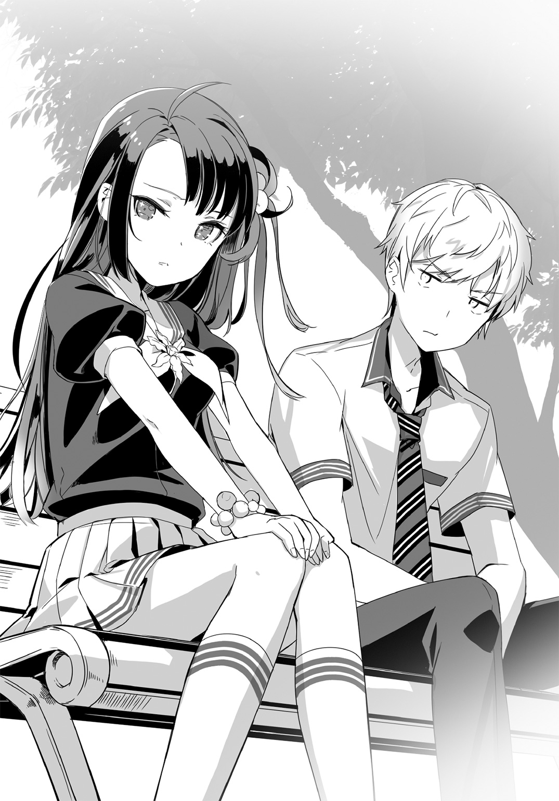

| 世界で2番目におもしろいライトノベル。 | |
| 石原宙 | |
この本は縦書きでレイアウトされています。
また、ご覧になる機種により、表示の差が認められることがあります。
 ダッシュエックス文庫DIGITAL
ダッシュエックス文庫DIGITAL
世界で２番目におもしろいライトノベル。
石原 宙
一章 認知度海抜０ｍの男
昼休みを終えた気だるい午後。
ついに創立１００周年を迎えた県立津洲高校の教室は、戸も床も古びた木製で、長年埃やワックスを吸いこんで、甘いクッキーのような匂いがした。
かちりとチョークを粉受けに置く音がして、教科書を盾にスマートフォンでブログの更新をしていた俺は、顔を上げて黒板の問題文を見た。
〝兄弟が住む家のそばに一周２５００ｍの池がある。
兄弟が同時に家を出発し、兄は時速５㎞で池を右回りに、弟は時速３㎞で
左回りに歩くとき、二人が出会うのは弟が何㎞進んだ地点か答えよ〟
はぁ、これだからダメなんだよ......。
四十半ばの数学教師が朗々と解説するのを聞き流し、俺は頭を振った。
常々思っていたが数学の問題にはセンスがない。
これラノベの新人賞に出したら間違いなく一次落ちだからな？
無味乾燥とした文体はキャッチーさがないし、キャラとか世界観の設定がまるで説明されないから読者が置いてけぼりになるだろ。
これ絶対評価シートに「読者目線で考えましょう」とか書かれるパターンだよ。
まずその兄弟誰なの？
なんのために池をそれぞれ反対向きに歩くの？
仲悪いの？ 腹違いなの？ 鳳凰星座の一輝みたいに片方へそ曲がりなの？
二人が逆向きに歩き出すのはやむにやまれぬ家庭の事情があるとか、池を周回する目的もせめて「数奇な運命に操られ」くらい言おうよ。
あとたまに途中で急に走り出す弟とかいてすげぇ怖いから。
数学って本当そういうとこあるから気をつけた方がいいよ。
ほら、確率の問題で執拗に持ち出してくる白い玉と赤い玉とか。
秒速１㎝で動く点Ｐとか。
どいつもこいつも謎すぎるのに最後までその伏線回収されねえからな。
問題もパターン化されすぎて「あ、最後こう聞いてくるな」みたいにすぐ先が読めちゃうよね。そろそろ出題者なりの個性出してきてほしいよね。
まあ色々言ったけど、大事なのは読者に「読みたい」と思わせる文章だよ。
個性的なキャラ、気になる設定、今ならファンタジー要素も欲しいかな。
俺は、机の中から朝会で配られたいらないプリントを取りだして裏を向け、回して遊んでいたシャーペンの尻をカチカチ鳴らす。
たとえばこうだ。
兄弟が住む家のそばに一周２５００ｍの池がある。
数奇な運命に操られ、天空に導かれし兄・まさおと、破壊と暴虐の弟・たかしが同時に家を出発する。
『ヘルメスの加護』を得たまさおは時速５㎞で池を時計回りに歩き、美人だが血の繫がらない母親に唯一褒められた碧の瞳を代償に得た『ムジュラの心臓』の力によってたかしが時速３㎞で左回りに歩くとき、二人が出会い、運命の歯車が音を立てて回りはじめるのは弟が何㎞進んだ地点か。
なお二人とも歩きはじめて20分の地点で時速１㎞に減速するものとする。
――まさお82歳、たかし80歳。寄る年波には勝てなかった。
ふぅ。
最後に歌野晶午ばりの叙述トリックを仕込んでやったぜ。
数学の問題に常連の二人が、まさか後期高齢者だったとは誰も思わないだろう。
書き終えた俺はまじまじと完成した問題文を眺め、ほぅと息を漏らした。
クッソわかりづれぇ......。
そういえば俺、新人賞の一次選考すら通ったことなかったわ。
☆☆☆
終鈴が鳴り、書きかけの記事をいったん保存して礼を済ますが、結局やることがない俺は速やかに着席して記事づくりを再開する。
周囲には、一人で数分の休憩時間も潰せない哀れな子羊どもが群れをなしはじめるが、俺はそれを一顧だにしない。
思えば、書評ブログをはじめてもう二年くらいになるだろうか。
正義の名のもとに志なきラノベを叩き、狙いすました美文に加え、月に二十冊はせっせと読んで更新している甲斐もあり、今では閲覧数もそこそこだ。
そう、だいたい月に２～３ＰＶくらい。
全然ねえじゃねえか。
だが俺は悪くない。そうなのだ。ブログなんてそんなもんなのだ。
一般人が〝ブログで自己表現☆キラキラ☆〟なんてメディアと広告会社のおっさんが会議室でにやにやしながらでっちあげた空言で、俺たちはまんまと踊らされてるだけなのだ。世界に向けて情報発信？ 言うのは勝手だが、世界は悲しいほどその情報を待ってない。おかげで張り切ってブログを書いてみたものの、閲覧者が自分と知人しかいないという痛ましい事故が起きるのだ。
だから続けてるだけ俺は偉い。
......でもまあ、もうちょい閲覧数増えてもいい気がするけどな？
わざわざ炎上しそうなネタ振ってんのに誰も嚙みついてこないしな？
ネットだけの話じゃない。
俺は一人わざとらしくうーんと伸びをし、「あーぁ、書評ブログの管理人も楽じゃねえなぁ？」と呟いて、横目でちらっと周囲を窺う。
――しーん。
......辛ぇ。
みんな何が面白いんだか、毎月同じことしか書いてないファッション誌やらパクリだらけのまとめサイトの話題で盛り上がっている。
たまにはこっち見たら？ たぶん俺の方が面白いぞ？
こうやって授業中も休憩中も健気に携帯いじってんだから誰か気づけよ。
たぶんこれ、今から急にズボン脱いでぎょう虫検査始めても誰も気づかないだろ。
何が俺ＴＵＥＥＥだよ。こちとら生まれてこの方俺ＩＮＥＥＥ状態だよ。
これがもし物語の主人公だったら、世話焼きの幼馴染ヒロインがやってきて、「まーた携帯いじってるー！」とかむすっとしながら話しかけてくるんだろ。
んで、いたずら好きな悪友が後頭部に消しゴムぶつけて茶化してきたり。
しまいにゃ美人なのに結婚できない担任が「まーたお前は～！」なんて俺のこめかみをぐりぐりしてきてさ、俺は「やめてくれー」なんて半泣きで言うんだよ。
......違う意味で泣きてえよ。
☆☆☆
何の因果か、俺の住むこの町は、日本で一番低い町である。
海部津洲と呼ばれるが、南に名古屋港、西に雄大なる木曽三川を睨み、名前からわかるように古くから水害と戦ってきた土地だ。子どもの背丈ほどの高さに『海抜０ｍ』と書かれた看板が立ち、ひとたび堤防が決壊すれば水の底。
さらに涙を誘うのは、その存在を知る者が同じ県内にもほとんどおらず、「え？ 津洲？ ああ岐阜の」「ばっか三重だろ」というやりとりが何度となく繰り返され、存在感が一足早く水面下に沈んでいることである。
ちなみに愛知だ。
当然都会ではないし、かと言って田舎と言えるほど田舎じゃない中途半端さ。
誇れることといえば、最先端の治水技術くらいだが、誰もそんなの気にしてない。
植物にしろ動物にしろ、土地はそこ特有の生態系を育むものだ。
だからこのさえない町に生まれ、パッとしない空気を吸って育った俺は、まるで呪いのように鳴かず飛ばずの人生を歩むことを余儀なくされているのだ。
予め奪われているのだ。誰もが望む主人公になる権利ってやつを。
放課後になると、帰宅部の俺は図書館を経由して帰るのが日課だった。
学校の図書館にもラノベはあって、今夜読む本を探しにきたが新刊はなかった。
図書館のラノベはすでに全部読み尽くしてしまったので手元が淋しい。
ブログで叩く用の本をどこかで調達しないとな......。
そして、通学用の自転車を押しながら校門を抜けようとした、その時だった。
――コツン。
学校指定のローファーの踵が地面を叩く音がした。
きっと青春に音があるならこんな音だ。
ありふれてるのに、誰かにとっては特別な、出会いを知らせるはじまりの音。
「......来てくれたの？」
校門の脇に立った少女が、こちらを振り向きそう言った。
やや幼さを残す透んだ声が鼓膜を通り、胸の奥の柔らかい部分をなでた。
......すげぇ可愛い。
かすかに首を傾げるから、腰まであるまっすぐな髪がさらりと流れ、西日を透かして綺麗な茜色に染まる。俺はその美しさに息を呑んだ。
透き通るような白い肌。通った鼻筋。勝気な瞳に、まばたきするたび星の瞬きが聞こえてきそうな長い睫毛。それはよくできたビスクドールのようだった。
短いスカートから伸びるのはきゅっと締まったカモシカのような脚。
俺はいつの間にか立ち止まり、その美しい、黄昏の化身に釘づけになっていた。
胸が高鳴る。意識すればするほど鼓動は速さを増した。
コツ。コツ。彼女が近づいてくる。俺はその場に立ちつくした。
視線はあわてて彼女から外した。蟬の声がうるさい。額から汗が噴き出してくる。やばい。心臓が喉から飛び出しそうだ。
一歩。一歩。ついに俺の真横に並んだ。
そして彼女はすぅと息を吸い、
「伊藤さん。先に教室戻ってくれてよかったのに。ゴミ出しくらい一人で平気」
俺の背後に立っていた伊藤さんに言った。
「いーの！ 二人で日直なんだから！ さ、一緒に教室もどろー？」
「うん」
「ねーねー、今日帰りみんなでカラオケいこー？」
「うん......でも今夜の降水確率は50％を越えているから――」
......。
俺は棒立ちのまま、曇った瞳で教室へ戻っていく女子二人の背中を見送った。
思い起こせばあの二人は日直だった。放課後の掃除を終えた彼女たちは、校門の脇にあるゴミ収集場に教室のゴミを捨てに来ただけだったのだ。
当然俺は伊藤さんではない。
俺の名は灰川祭。少し田舎の学校に通うどこにでもいる平凡な高校一年生だ。
こんな最低のタイミングで名乗りたくなかった。
「帰るか......」
俺は自転車に跨りよろよろとこぎだした。
そろそろ毎日見てるクラスメイトに過剰な見た目描写入れるのやめよう。
これもう14、５回目だしな。
女子との出会いを劇的に描写しても物語は始まらない。
実体験から得た貴重な人生訓である。
もちろんテストには出ない。生きる上で大切なことほどテストには出ない。
そもそも、透き通るような白い肌ってなんだよ。イカかよ。
カモシカのような脚ってのもよく言うが、実際カモシカの脚見て興奮する奴いんの？ いたらそいつたぶんカモシカのオスだよ。
もっと言えば今は七月でまだ日が長いからそもそも黄昏でもなかったわ。
......やっぱり現実はラノベや漫画のようにはいかない。
とはいえ、黄昏の化身こと赤瀬川夏恋という女は、同じクラスになって初めて見た時は、本当にラノベの世界から飛び出してきたのかと思った。
二次元キャラみたいな顔にスタイル、成績優秀、スポーツ万能という驚愕のスペックで、一体こいつの両親は何度リセマラを繰り返したのだろう。
だが俺が赤瀬川を意識する理由はそれだけじゃない。
彼女が「違和感の塊」に見えて仕方なかったからだ。
クールビューティと言えば聞こえはいいが、俺にはただの無愛想に見える。
口数も少なくて決して笑わない。態度も冷淡。顔が綺麗すぎるせいで、まるで太古の昔から生きる吸血鬼のような妖しい気配さえ放っている。
どうしたって奴の回りには人を遠ざける透明な壁が見えるのに、あいつはエキストラでも雇ってんのかってくらい常に人に囲まれてる。
それゆえ俺は、同級生になって三カ月がたった今も彼女と口を利いたことがなく、勢いあまってクラスの女子のほぼ10割と交流がないまま現在に至るのだ。
☆☆☆
俺は学校帰りに古書店へ寄ることにした。
記事にする本を調達するためだ。
津洲駅前の大通りはツタヤだとかシダックスだとかの大きな店舗が並んでいるが、少し離れると昔ながらの商店がぽつぽつと並びはじめる。
『だるま堂古書店』はそのうちの一つだ。
新刊は滅多にないが、絶版した昔の名作が１００円均一で買えたりして重宝する。そのため、うちのブログは新刊だけでなくここで調達した一昔前の作品も交えて紹介するスタイルになっている。ウケがいいかどうかは悲しいほど不明だ。
自転車を歩道の脇に停め、店内に入ると、木と紙の熟成された甘い匂いが出迎える。雰囲気があって、これがラノベなら綺麗で清楚なお姉さんが現れてほっこりした謎解きを披露してくれるに違いないが、いかんせんここの店主はくたびれた50過ぎのおっさんだった。
しかしその夢も希望もない残酷な現実の化身みたいなおっさんだからこそ、遠慮なくどんな本でも買えるのもまた事実である。
折よく俺は見つけてしまった。掘り出し物だ。
まだ発売して日の浅い、イラストの圧倒的肌色率で「この作品の世界観では布が希少なのでは」とネットで話題騒然になったキワキワのラノベだ。
当然表紙も肌色で、規制という名の険しい峠をドリフトでガンガン攻めている。
胸が高鳴る。いや、別にエロいのを期待して買うわけじゃない。
話題作だから書評ブロガーとしてチェックしとかないといけないだけだ。
だから俺はそれをすかさず手に取り！ 一気にレジへ持っていく！
そして机の上の鈴を鳴らしおっさんを召喚ッ！ チーン。
ふふ。
この店のレジはいつも無人で、鈴を鳴らすと奥で寝転がって尻をかきながらテレビを見ているおっさんがのそのそ出てくる仕組みになっている。
おっさん早くきてくれ......！ 俺はもう待ちきれんぞ......！
俺はむずむずしながらおっさんの訪れを待つが、そこで予想外の事態が起きた。
「はいはーい。いまいくよー」
......。......女の声？
おっさんじゃない!? 大人のお姉さんっぽい声だぞ!?
「はは、おまたせー」
そして奥から出てきたのはなんの因果か、綺麗で清楚でいかにも日常の謎を解いてくれそうなお姉さんで、
「話が違うだろ！」
思わず叫んでしまった。
「話？ なんのこと？」
まずい、つい心の声が出てしまった。お姉さんは小首を傾げてる。
けど、俺の求めてたのはもっと小汚いおっさんなんですよ！
「まあいいや、遅れてごめんね。さっきまで下着だったからちょっと着替えてて」
しかも刺激的なことをさらっと言ってくれる......！
お姉さんは着替えてきたわりに、ふわふわ素材でできた上下揃いの寝巻で、上はパーカー、下はショートパンツという完全に油断した服装だった。
メロンみたいにふっくらした胸元とショートパンツから伸びた生足が眩しい。
それによく見るとめちゃくちゃ美人だ。
髪は長く、魔力を帯びた銀の糸のように繊細で、それでいてきりりとした碧い瞳には芯の強さが垣間見えて、まるでファンタジーの世界から抜け出してきた姫騎士みたいだ。
一方、そんな神々しい美人の前で棒立ちする俺の手の中にあるのは、ロリ顔グラマラスボディのヒロインのあられもない姿が表紙の本。
こんな感じならもっとそれっぽいもん買ったよ！
ニーチェとか芥川全集とか買ったよ！ まったく興味ないけど！
ちくしょう！ おっさん！ いつものおっさんを出せ！ 俺のおっさんを返してくれ！ さっきはひどいこと言って悪かった！
「じゃあ本もらいますねー」
「あっ......」
そんな俺の心中も知らず、お姉さんは俺から本をすっと奪うと、
「えーっと、〝わが軍の姫騎士がめちゃシコで本官らめぇぇぇえええ〟......か」
世にも綺麗な声でタイトルを読みあげた。
そして俺の顔をちらっと見て、
「奮ってるね」
すいませんんんんん！
よりによって姫騎士ものですいませんんんんんん！
何この拷問！ 綺麗なお姉さんにエロラノベのタイトルを目の前で読まれるとか、ある種の人にはご褒美だけど俺には耐えられない！
レジには不慣れらしいお姉さんが「これどうやるんだっけ......」と呟きながら金額を打ち込んでいる前で、俺はジェンガみたいに膝から崩れ落ちた。
死んだ......。
立ち上がっていったいどんな顔して商品を受け取りゃいいんだ？
むしろ思春期ですが何か？ みたいな顔して堂々としてりゃいいの？
ふふふ、こちとらエロいこと考えるのが仕事ですからみたいな？
気持ち悪ぃなそいつ。
うずくまったまま頭を抱えていると、俺は目の前の貼り紙に気づいた。
なんだ？ レジの机の前側だ。Ａ４サイズのコピー紙がセロテープで貼ってあって、そこに太い黒のマジックで大きく書いてあった。
【平凡な一般人求む！ 誰にでもできるカンタンな仕事です！
㈱メサイアワークス（ＴＥＬ：０８０―××××―××××）】
「......なんだこりゃ？」
怪しすぎる。さっきまでの動揺も一瞬で覚めた。
第一声が「平凡な一般人求む！」ってなんだよ。正直それなら自信あるけどどんな募集条件だよ。仕事なんてのはそれに見合った何らかの優れた部分が求められるはずだろ。営業ならコミュ力とか。事務ならマメさとか？
なのにそれを求めないってのはよほど人に困ってるのか？ ほら、無料のバイト情報誌にいつも求人載せてるような会社だ。ブラック確定じゃねえか。
そもそもこんな粗末な貼り紙一つで求人しようなんて胡散臭すぎる。
とはいえ、年頃の男子高校生なんて、みんな金と彼女とジャンプ力がほしいものだ。
俺だって本を買うくらいの金は欲しいし、やるなら楽に稼ぎたい。
学校が終わっても本を読むかブログの更新するかしかないので時間はある。
でもな......。などと考えながらふと視線を上げると、
「それ......気になるの？」
姫騎士が机から身を乗り出し、目をぱちくりさせながら俺を見つめていた。
「わっとっ......！」
その強すぎる目力と距離に驚いて、俺は一回尻もちをつき、あわてて立ち上がる。
「......いや、ちょっと目に入っちゃったもんで......」
しどろもどろになって答える俺を姫騎士はなぜかじっと見つめてくる。
「あ、や、なんかその、怪しい広告だなーって。はは、いまどきこんな貼り紙で人なんかこないですよね。しかも『平凡な一般人求む』とかワケわかんないし」
俺がそう言うと、姫騎士の瞳がスッと鋭くなる。
......まずった。
そうだよ、この店に貼り紙がしてあるってことは当然この店に関係あるんだ。
友達の会社とか？ 社長が同じとか？ もしかしたらこの姫騎士がそうかも。
居たたまれない気持ちになって俺が下を向いていると、
「それ見えてるんだよね？」
おかしなことを聞かれた。
「ふむ、お客さん......よく見るとなかなかイイ感じ」
「な、なんすか......？」
お姉さんは急に椅子から立ち、机を迂回して、至近距離でじろじろと俺の全身を眺めはじめた。
なになにどういうこと？ 俺品定めされてる？ しかもイイ感じだって??
この平凡を絵に描いたような俺が?? ウソだろ??
お姉さんは立つとものすごくスタイルが良いのがわかった。
花みたいなめっちゃいい匂いがするし、耳元で「ふーん......」と綺麗な声でささやかれるもんだからそのたびに背筋がぞくぞくする。
もうダメだと思った。
間違いない。......俺このまま乗せられて壺とか買わされるんだ。
こんな美人に褒められるなんて裏があるに決まっているのだ。
そんな思いをよそに、姫騎士はぱんと胸の前で手を合わせ景気よく言った。
「いいね！ 普通！ 超普通！ すごいなお前！ 明日の午前中には顔忘れそう！」
「失礼だなおい！」
おかげで俺は正気を取り戻す。
自覚はあるけど人に言われるとイラッとくんだよ！ 急にお前呼ばわりだし！
しかし姫騎士は聞く耳を持たず、
「いいね！ そのひねりのない返し！ くーっ！ 痺れる！ よーし、お姉さん今日の晩飯食い次第、お前のこと忘れちゃうぞ！」
「せめて今日中は覚えてろよ！」
妖精みたいな見た目して、失礼極まりねえな！
どうやらさっきまでは客相手ということで猫をかぶっていたらしい。
「なあなあ、そんなお前を見込んで提案なんだけど。うちで働かない？」
「はあ？ いきなり何を......」
「その求人。読んだんでしょ？」
姫騎士はさっきまで俺が見ていた貼り紙を指さす。
「じゃあこれは......」
「ああ。私のやってる会社なんだ。やってるっていうか正確には手伝ってるんだけど、まあそれはいいや。どう？」
「いや、そんな急に言われても」
こんな反感しかわかない勧誘されて頷けるかよ。
しかし姫騎士はひるまない。
「安心していいよ。アットホームな職場だから」
「嫌ですって」
「ほら、仲間と一緒に夢をかなえよう」
「だからそんなこと言われても」
「アルバイトから社員になれる制度もあるからさ」
「だから......」
「なんと27歳の管理職もいる」
「さっきから全部求人地雷ワードなんですけど！」
絶対ヤバイだろ！ ここまでブラック臭のする勧誘ないぞ！
「まあまあ！ とにかく話だけでも聞いてきなよ！ お茶くらい出すからさ！ 二階の事務所いこう？ ね？ うん！ そうしよう！」
「や......ちょっと待っ......。俺はそんなつもりは......って......離せ！」
姫騎士は人の話を聞かず、女とは思えない恐るべき力で俺を「よっ」と抱え上げる。なんだこの腕力!? プロレスラーか!?
「ちょっ......お、俺は帰る！ 離せってば！」
「まあまあお客人。ゆっくりしていきなよ」
二人分の重みで古い木造階段がぎしぎし鳴る。
そうして俺は怪しい建物の二階へと拉致られていったのだ。
二章 大勇者からはにげられない
二階はかつて喫茶店だったらしく、家具類はほぼ当時のままで、机の上や床に古い段ボールや書類の山が置かれていた。
昔ながらの純喫茶って感じで、広さはだいたい教室程度の小さな店だ。
俺がすすめられたソファ席は応接用なのか広めにスペースをとってあって、机の端に角砂糖やフレッシュミルクをまとめたカスターセットが置いてあった。他の席の机は腰の高さほどある木製だが、ここだけは少し気取ったオシャレガラス製で、膝くらいまでの高さしかなかった。
姫騎士は俺の向かいのソファにぼすんと座り、早速切りだした。
「ここまで来てもらったのは他でもない！」
「無理やり拉致ってきたんでしょ」
この人は常識が不自由だ。
机の上には姫騎士が淹れてくれた二つのコーヒー。
約束通りコーヒーは出してくれたものの、出し方が問題だった。
キッチンから現れた彼女は、トレーを使わずコーヒーがなみなみ入ったカップを二つ手に持ち、無神経に机に置くので、勢いでコーヒーがこぼれてしまった。
「あ、砂糖とミルクは机の上の自由に使って？」
「......はい......」
なのに彼女は気にしない。だから俺は黙ってナプキンを一枚とり、机とカップを拭きながら、やっぱこの人とは仲良くなれないわと再確認した。
そして出てきた台詞も奇天烈だった。
「お前、主人公にならないか？」
「......は？」と、思わず素っ頓狂な声が出た。
「うちの会社はメサイアワークスっていって、最終回後の主人公を集めた派遣会社なんだ。まあ、よろず屋みたいなもんだよ」
「いや、あの、急すぎてちょっと意味わかんないんですけど」
メサイアワークス？ 最終回後の主人公？ 何言ってんの？
ああ、これ電波だわ。美人には電波が多いって聞いたことあるし。
「主人公っていうと、まさかラノベとか漫画みたいな？ バトルものとかラブコメとかそういう？」
「うん！ お前ものわかりがいいな！ そういうとこ好きだぞ？」
「あ、おぅふ......」
ああもうダメ。好きとか簡単に言っちゃうからこの人ビッチ確定だわ。
恵まれない少年が面と向かってそんなこと言われたら好きになっちゃうの知らないの？ 「おぅふ」とか聞き覚えない声出ちゃったよ。
我々はノリで女子とハイタッチするだけで惚れちゃう生き物なんですよ？
でもってさっきから気になってんだけど、彼女は行儀の悪いことにソファの上に片足を立てて座ってるから、穿いてるふわふわホットパンツの裾からちらちらと白いものが覗いてるのだ。フリルっぽいものまで確認できて、ちくしょうガラにもなくかわいい下着穿きやがって......！
ふとももも白くて絶妙な太さで、今世界で最もフランケンシュタイナーされたいふとももだ。敬礼しながら地面に頭から突き刺さるだけの価値はある。
とはいえ、このままじゃ目のやり場に困るので、
「その......足。行儀悪いっすよ」
「ん？ ああ悪い、癖なの。はは、ありがと」
彼女は片手をひらひらとやって今度はあぐらをかいた。
「これでいいだろ？」と満足そうに笑うけど、さっきより余計に下着が見えててなにも良くない。この人はやばいな。歩く青少年育成条例違反だ。
だんだんわかってきたぞ。
彼女は口が悪いが悪気はないタイプで、ただ無防備でダメな人なのだ。
「と言っても、二次元の世界から飛び出してきたわけじゃないぞ？」
彼女は続けた。
「れっきとした現実の人間。逆にそういう創作物が私たちみたいな特殊な人間を題材にしてきたんだ。この世にモデルのない創作物なんてほとんどないからな」
「私たち？ ってまさか......」
「ああ、自己紹介が遅れたな」
無防備な姫騎士は少しだけ背筋を伸ばして言った。
「私はリーリャ。リーリャ＝パヴロヴナ＝リトビャノフ。〝伝説の勇者〟だ」
......なに言ってんのこの人？
いい加減電波強すぎだろ。総務省が口出してくんぞ。
ロシア人っぽい名前だなとか、にしては流暢な日本語だなとか、短い一文に突っ込みどころが渋滞して言葉に詰まるが、中でもとりわけゴツいのが最後の一言だ。
「ん？ どした？ 私、日本語の発音には自信あったのにな？ あ、名前が聞き慣れないのか？ えーと、リーリャ＝パヴロ......」
「いやいやそうじゃなくて。そっちもそうだけど、問題なのはそのあとで」
「そのあと？」
「そう」
「ああ、『伝説の』ってとこ？ ああ、確かに自分で伝説名乗るのは変かぁ！ 人々に語り継がれるから伝説だもん！」
ぱぁんと彼女は景気良く手を打って、続けざま俺の肩をグーで叩く。
「すごいじゃんお前！ 国語の先生になれるよ！ よかったな！ こいつ将来どうすんだろってすげぇ心配してたからさぁ！」
「いらねえ心配すんな！ 俺が言ってんのは〝勇者〟のとこだよ！」
俺が叫ぶと伝説の勇者ことリーリャは「ああそうか悪い悪い」と笑いながらひらひら手を振り、のんびりと自分のコーヒーに角砂糖を三つ入れた。
これは絶対悪いと思ってない。
「で、私〝勇者〟。へへ、すごいだろ？」
満面の笑顔で言うから否定しづらい。なにこの憎めなさ？ 大型犬？
だからつきあわざるを得なくて、
「その、勇者ってのは、ＲＰＧとかにでてくるあの勇者？ 剣と魔法のファンタジー的な？」
「そうそうそれ！ お前探偵もできるよ！ 国語の先生と探偵という二つの希望を糧にがんばれよ！」
「褒めてる感じで馬鹿にすんのやめてくれます？」
「やー、こないだ幻魔大陸ヘレネーガンドってとこに行ったの。自然がいっぱいでいいとこなんだけど、温泉なんかもあってさ。そこへ仲間と弁当持ち寄って行ってさ、魔王討伐して帰ってきたんだよね」
「ＯＬの小旅行みたいに言うなよ！」
そんな足湯感覚で倒されちゃう魔王で大丈夫!?
ってか、この人はどこまで本気なんだ？
こっちを騙そうとしてるなら対応もしやすいが、どうも噓をついてる風には見えなくて、むしろ「褒めて褒めて」とうずうずしてるようにさえみえるので、
「......すごいですね」
「だろぉっ！ へへっ」
やっぱり喜んだ。にこにこと体を揺すってご機嫌だ。やはり犬に違いない。
「ま、魔王倒す時に力を使い果たして、今は魔法も光の力も使えないんだけど」
そして彼女が言うにはだ。
「うちのメンバーはみんなかつて世界を救ってる。今いるのはえーと、〝終わりの魔法少女〟〝異世界帰りの救世主〟〝学園異能の覇者〟の三人だな」
「ラノベかよ......」
しかも最近の流行り全部のせみたいで胃もたれするわ。
「で、お前に頼みたい仕事ってのは簡単だよ」
マイペースに本題を切りだすリーリャは言った。
「なんもしなくていい」
「え？」
「ノルマもないし、出勤する必要もないし、ただ普段通りに生活するだけ。ぶっちゃけマジでやることないんだよ」
「......怪しすぎるんですけどどうですかね」
そりゃ楽に稼げる仕事なら願ってもないけどさ。
月30万もらって指定された部屋にただ住み続けるってバイトを聞いたことがあるけど、あんなの絶対知らない間に犯罪の片棒担がされてるに違いなくて、要はそれに似てる。
「大丈夫。心配いらない。それにこう、い～い気持ちになれるぞ？」
「犯罪の匂いが色濃くなってきたよ」
「必要なのはただこの雇用契約書にサインするだけ」
彼女がガラスの天板の上を滑らせたのはＡ４サイズの一枚紙だった。
それを見て俺は糸のように目を細める。
「どこが雇用契約書なんですかね......」
まるで読めない古代文字がのたうち、薄墨で描かれた魔法陣がアクセントを添える古びた羊皮紙が雇用契約書のわけがない。
「はは、まさか。ああ、あとサインは手書きとかハンコじゃなくて血判で頼む」
「これ絶対悪魔とか召喚するやつだ！」
よし、帰ろう。
やっぱりこの世に楽して稼げる仕事なんかない。儚い願いだった。
俺はバッグの紐に手をかけ、立ちあがろうとしたが、
「お前、〝英雄係数〟って知ってるか？」
「メサイア......モジュール？」
彼女の言葉が気になって踏みとどまる。
「そ。人間には生まれながらにして、〝英雄〟になりやすい体質か、なりにくい体質かってのがある。〝英雄係数〟ってのは文字通りその数値が高いほど英雄になりやすい。私含めてうちのメンバーの英雄係数はおよそ３００。だいたい一般人の３倍くらいで、それゆえの〝主人公〟ってわけだ」
......まじかよ。本当にそんなのあんのかよ。
「つまり、その数値が高いと物語の主人公みたいな人生が送れるってこと？」
「まあ、そうだ。ただいいこともあれば悪いこともある。正直、日常に戻った私らからすれば都合の悪いことばかりだよ」
さっきまでの能天気さは鳴りを潜め、リーリャの声音は湿り気を帯びていた。
どうしてだ？
主人公みたいな生活なんて、誰もが夢見るだろ。愉快で頼りになる仲間がいて、人とは違う能力に恵まれて、悪い奴と戦って、可愛いヒロインを救うのだ。
俺だってかつては夢見てた。
なのにリーリャは違うと言う。
「私もほかの連中も、高すぎる英雄係数に嫌気がさしてて、一刻も早く普通の人間になりたいのさ」
ラスボスを倒し、役目を終えた自分たちにとって主人公時代の遺産は重荷でしかなく、日常生活では摩擦を生むのみだと彼女は言った。
「世界を守るために強くなったのに、いざ平和が戻って日常に帰ればその人間離れした強さが仇になる。戦いの日々は非日常だ。非日常を続ければ続けるほど日常は遠ざかる。皮肉な話だろ。私たちはみんなのために戦ったのに」
強すぎる腕力が意図せず人を傷つけることもあるだろう。
人外じみた異能は怖れられもするだろう。
敵の強襲を警戒する癖が染みつけば、こうしてのんびりコーヒーを飲むこともできなくなる。そりゃ辛いだろうな。
俺がしんみりした気持ちになっていると、空気を読まないリーリャが突如立ち上がり、「そうなんだよもう！ あ ！」と叫び出した。
！」と叫び出した。
「商売がうまくいかないのもそうだ！ あ～イライラしてきた！」
せっかく綺麗な銀糸の髪を手でがしがしかいて、
「すごい力を持つ元主人公を集めればいろいろできんじゃん！ 裏稼業とかさ、誰にも頼めなくて困ってる仕事とかあるじゃん！ ねぇ!?」
だんっと足元を鳴らして水を向けてくるので、たじろぎながら俺は答える。
「ま、まあ、そういうニーズはあるでしょうね」
「だろ!? そういう奴らからなら大金がっぽがっぽせしめられんじゃん！」
うわぁ......最低だ......。ほんとにこの人元勇者なの？
「マジで世の中金だからな？ 魔王と戦う時、あいつ『よくぞここまできた。世界の半分をやるから余の部下になれ』って言ってきたの！ 私何て言ったと思う？」
「え、ＯＫしたんすか？」
「断ったよ！ だってあいつの提示した世界の半分って、豊かな油田も農地もないんだもん！」
「現実的！」
脳筋っぽいなと思ってたけどこれは脳金だわ。
「英雄係数が高いと何かとトラブルに巻き込まれやすいんだよ！ たとえば依頼人から首尾よく探偵仕事をもらったとするだろ？ 隠密第一の尾行の最中さ。なのに運命の相手っぽい奴が急にドラマチックな出会いかましてきたり、テロリストに襲われたり、『私、未来からきたの』みたいな電波がひっきりなしに現れたりする！ そんなんで仕事になるかばか！」
「どんな状況なんすか......」
しかしそれが〝主人公みたいな人生〟の実態らしい。
「やっと仕事がきたと思えばこんな寂れた古書店の店番だし......」
リーリャは机の上の角砂糖とミルクを冷めかけのコーヒーにどぼどぼ放りこみ、やけ酒するように一気にあおった。
確かに物語の主人公は奇想天外な出会いやトラブルに恵まれるけど、現実でそんなのが連発したらまあたまらんだろうな......。
「じゃあほかの連中も似たような悩みを抱えてるってことすか」
「そういうこと！ だからお前に頼みたいの！」
リーリャはソファに座り直し、透き通る碧い瞳でじっと見つめてきた。
「お前はある意味選ばれた人間だ。私らなんかよりずっと貴重な」
「急になんすか......普通だなんだと言ってた癖に」
「だからこそ意味がある。世の中バランスだ。聞け」
リーリャが姿勢を正すから俺もつられて背筋を伸ばす。
「お前の英雄係数は５だ」
「ひっく！」
「正直笑う」
「笑うな！」
「だからいいんだ。お前しかいないんだ。どこにも行けない私たちの英雄の証明を奪ってくれ。お前が私たちの代わりに主人公になるんだ」
古い掛け時計の長針が時を刻む音がした。
俺はすぐに答えられなかった。
すると、階段の下からぶつぶつ言い争うような声が聞こえてきた。
「......お、きたな。きっとあの二人だ」
「あの二人？」
やむなく話は中断する。おそらくリーリャが言った他のメンバーであるはずの二人は、古びた階段を二人分の重みでぎしぎし鳴らしながら現れた。
「チロル、いい加減自分の足で歩いたらどうだ。いつも肩に乗られて重いんだ」
「......」
「無視するな」
一人は身長１４０㎝ないくらいの小さな女の子で、もう一人は長身で均整のとれた体つきをした俺と同い年くらいの男だった。
女の子は男に対して敵意に満ちた目を向けながら、その癖、トーストの上で溶けたチーズみたいにだらりと肩におぶさっていた。
「俺は心配してるんだ。お前も中学生、そろそろ真人間になって――」
「獅子王はわがままばっかり......」
「お前がだろう」
「死のう？ ね？ 死のうか？」
「できればまだ生きたい」
なんなんだこいつら......？ まさかこいつらが？
リーリャが謎の二人を指さして俺に紹介してくれた。
「あの生きる気力なさそうなちっこいのが〝異世界帰りの救世主〟。んで、もう一人のスカした男が〝学園異能の覇者〟だ」
まじで？ この二人が？
とても世界を救った主人公なんかには見えないんだが......。
「その人だれ......？」
すると女の子が俺の存在に気づき、怪訝な目を向けた。
すげぇ可愛い顔してんな......。まるでよくできたビスクドールのようだ。
背は小学生かってくらいのちびっ子だが、利発そうな顔つきをしていて、ＴＶで活躍する子役と言われても頷ける。小さな顔にサイドテールにした明るい髪が似合っていた。うちの学校の中等部と同じ制服を着ていて、細い足には白のニーハイ、靴はローファーを履いている。
ちなみにビスクドールというのが何なのかはよく知らない。
「その前に言うことあるだろ？ チロル」
「......ただいま」
「ん、いい子。で、こいつはえっと......そういや名前なんだっけお前？」
「今さら聞くのかよ......」
若干イラッとするが、名乗り忘れた俺も悪い。
「灰川祭」
「祭ね、ふむふむ。そう、こいつは祭。私たちの救世主さ」
「ほんとに......!?」
チロルと呼ばれた女の子は、濁りきったビー玉みたいな瞳に突如輝きを取り戻し、ぴょんと男の背中を離れると、胸の前で手を組んだ。
「ついに現れたんだね！ ちろるたちの救世主！」
「おうそうだっ！」
リーリャも一緒になって飛び跳ね、二人は手を繫いでくるくると回り出す。
だが聞き捨てならないのは俺だ。
「ちょっと待て！ 俺はまだＯＫなんてしてないだろ！」
二人はジルバのリズムでハンマーロックからの連続スピンに入ろうとしたところで、ぴたりと止まって俺を見る。
「そうなの？ リーリャ？」
リーリャはやや考え、思いついたように俺をびしっと指さした。
「救世主に！ お前はなる！」
「んな言い方したって『よーし！』ってなんねえからな！」
「まあまあ。それより二人のことをちゃんと紹介するよ。まずこいつ」
リーリャはごまかし半分で２人の紹介を申し出た。
まずは手を取りあっていた小さなパートナーを後ろから抱くようにして、その頭をかいぐりながら言った。
「織田切チロルだ。13歳。さっきも言ったが〝異世界帰りの救世主〟。暴力と圧政に苦しむ世界序列最下位のエルフ族を全81種族中の頂点に立たせ、異世界に平和をもたらした」
言われたちびっ子はひゅっと前へ出てリーリャから離れると、肩幅に足を広げ、ヒーローのように拳を高々と空に突き上げた。
「もう二度とやんないけど！ めんどくさい！」
そして今度は背を向けて、首だけ振り向き親指を立てると、
「やばそうな時はちろるの見えないとこで勝手に死んでね！」
「かっこいいポーズで言うことがひどいぞ！」
俺はさすがに心配になってリーリャに小声で言う。
「おいリーリャ。いいのかあいつ？ どこが救世主だよ」
「チロルは正義の味方嫌いでさ。まああの子はあれでいいんだよ」
リーリャはあっけらかんと笑って答える。
いいわけねえだろ。何があったらあんなやさぐれ具合になるんだ？
しかしリーリャは俺に拘泥せず、今度は男の方へ視線を向ける。
男はなぜだか首に手を当てて、気だるげにこちらを眺めていた。
「あと次はこいつだけど――」
「リーリャ」
すると男が手でリーリャを制し、こちらへ一歩進み出た。
「俺たちの救世主なら礼儀をもって自ら名乗るさ。ボードを借りる」
どうやら義理がたいタイプらしく、目線でリーリャに伺いを立てると、おもむろに壁にかけられたホワイトボードへ歩み寄る。
なかなか礼儀のある奴だ。年齢にそぐわない謎の落ち着きがある。学園異能の覇者と言ったが、異能飛び交う激戦を制するだけの雰囲気は十分だ。
派手さもないし、古風な名前が似合いそうだと思っていると、男がマーカーでホワイトボードにでかでかと名前を書いた。
〝獅子王 騎士〟
「すげぇキラキラネーム！」
でもある意味主人公らしい堂々たる厨二ネーム！
さっきのちびっ子のオダギリチロルって名前も普段聞かないもんな。
でも俺がこんな名字だったら名前負けしすぎて死にたくなる。
そう言えば、全国で数件しかない珍しい名前なのにアニメや漫画でよく見るせいで身近に感じる例ってあるよな。
〝小鳥遊エフェクト〟と俺は呼んでいるが、代表格の〝小鳥遊〟をはじめ〝如月〟〝御手洗〟なんかがそれにあたる。そもそも〝小鳥遊〟なんてどう見ても初見殺しの名字なのにオタクはすらすら読むからな。あれきもいよな。
〝獅子王〟も同じで、前に調べたことがあって、これも全国で数件しかなかったはずだ。こういうの、実際その名字の人たちはどう思ってるんだろうか。
「〝ししおう〟だ。よろしく頼む」
獅子王は男にしては長い瞼を伏せ、小さくお辞儀をした。
「あ、ああ、こちらこそ。俺は灰川。よろしく」
つられて俺も頭を下げる。やっぱりちゃんとした奴だな......。
だが俺の興味は、すでに下の名前に向いていた。騎士。さすがにそのまま〝きし〟じゃないだろう。......お、ピンときた！ 〝ナイト〟だろ！
ふふ、俺もだてに長年ラノベを読んでない。十中八九間違いない。
げに恐ろしきは時代に押し寄せるキラキラネームの波。
そのうち〝騎士〟なんかは序の口で、しまいには、
「どうもはじめまして。妖怪商事の加藤地縛猫です」
とか地獄みたいな名刺交換が行われるんだよ。
「これはこれは。わたしは山田鬼畜美学と申します。こちらは部下の斉藤機巧少女」
みたいな。まあさすがにそれは言いすぎかと思っていると、
「下は〝騎士〟と書いて〝ぱらでぃん〟だ」
「......」
「〝ぱらでぃん〟だ。よろしく頼む」
「頭下げられてもそんな急によろしくできねえよ......」
まさかの聖騎士かよ。お前の親、どんな面して息子にそんな名前つけたの？
聞けば俺と同じ高一らしい。ナチュラルに「やれやれ」とか「風が騒がしいな」とか言いだしそうなスカした雰囲気を持ってるのが気になるが、まあ悪い奴ではなさそうだ。あと常に首に手を当ててるけど、首に持病でもあるの？
「......む」
すると突然、獅子王の顔に異変が現れた。見えない何かに勘づいたように瞳を鋭くし、注意深く辺りに視線を投げかけて言った。
「風が呼んでるな」
「マジで言った......」
「なぜ俺ばかりがこんな目に......。やれやれだ」
獅子王はお手本みたいな台詞を連発し、華麗にリーリャを振り返って言った。
「リーリャ、ちょっとトイレへ行ってくる」
「ん？ すぐ戻ってこいよ」
「フッ、少しばかり長くなるかもな」
獅子王は鼻を親指でピンッとする。うぜぇなマジで。
そして窓に向かって手のひらを向けると、「頼む」と小さく囁いた。
するとだ。
――がらり。
不思議なことに鍵のかかった窓がひとりでに開いたのだ。
なんだ？ 手品か？ 誰も触れてない。これがまさか......異能なのか？
窓はいたってアナログで、自動で開くようなシステムがあるようには見えない。
そして獅子王は颯爽と体を翻して窓枠に足をかけると、
「サンキューガイア......」
謎の呟きを残し、全盛期の氷室京介ばりの天を仰ぐポーズで後ろ向きに倒れて窓から姿を消した。え？ 今の決め台詞？ ダサくね？
もうなんか痛いって言うか痛烈だなと思ったし階段使えよとも思ったが、そうこうしていると、それを追うように織田切が同じ窓枠に乗り出していた。
「チロルも行くのか？」
「ちょっとじゃましてくる」
一方、俺は思わず戸惑いの声を上げた。
「お、おいおいちょっと待てそれ......」
それは子どもが窓から飛び降りちゃ危ないとか、なぜ邪魔をしにいくんだと聞きたいわけじゃなく、彼女が見慣れないものに跨っているせいだった。深緑の鱗をまとった異形の生物。
......え、龍？ あれ龍だよな？ かなりちっちゃいけど。え、ＣＧ？
「こらこら。人前では龍はしまえ」
「......まだこどもだから」
リーリャに注意されて織田切が口を尖らすと、キィと幼龍が鳴き声を上げる。
「それでもダメ」
「ぷぅ」と、どんぐりをくわえたリスみたいに頰を膨らませる織田切。
そして渋々といった表情で幼龍の頭をなで、「おかえり」と声をかけると、幼龍は忽然と姿を消した。俺は目を疑う。狐につままれたような気分だった。
すると何を思ったか、織田切は短いスカートの端をきゅっとつかみ、ゆっくりと持ちあげはじめた。ゆっくり。じわじわと。白くて細い太ももが露わになる。
きゅ、急にどうした？ は、破廉恥だぞ!?
色仕掛けってことか？ でもリーリャも女だぞ？
見ちゃいけないと思いつつも見てしまう。子どもの癖に形のいい太ももだ。
そしてあと少しで下着が見えそうだと思った瞬間だ。
「!?」
にょきにょきにょきっと、まるでスカートの中から生えてくるように半人半馬の怪物が現れたのだ。そして織田切は平然とそれに跨った。
下半身は葦毛の馬で、上半身は筋骨隆々の男の体。
どこかで見覚えがある怪物だと思っていると、リーリャが首を振って言った。
「ケンタウロスもダメ」
「半分人だから」
「生々しいから余計ダメ」
「......けち」
織田切はやむなく喚びだしたケンタウロスをまたスカートの中へ帰すと、諦めて生身のままムササビのように窓から飛んで消えていった。
――再び俺とリーリャは事務所に取り残される。
ていうかおいおい......。
落ち着け。ひとまず落ち着け。今目の前で起きたことを整理しないと。
俺はぽつりと呟くように尋ねた。
「......あいつらなんなんすか」
聞くことが多すぎて、おおざっぱな聞き方にならざるを得ない。
「ああ、獅子王は誰かの助けを呼ぶ声が敏感に聞こえちまう体質でさ。嫌々ながらいつも助けに駆けつけるんだ」
「トイレなんてごまかしたのは？」
「あれは特に意味はない」
「意味ねえのかよ......」
「チロルと獅子王は犬猿の仲でな。てかチロルが一方的に嫌ってるだけなんだけど。いつも嫌々言う癖に結局人助けする獅子王が気に入らなくて邪魔するんだよ」
「人助けの邪魔って、異世界の救世主じゃなかったんすか......」
「いろいろ事情があるんだよ」
まったくわけがわからない。
「ちなみにチロルのスカートは異世界に繫がってて、そこからあっちの生き物を呼びだせる。こっちじゃ騒動になるからいつもダメだって言ってんだけど」
リーリャは「困ったもんだ」と首を振る。
本当に困ったもんだよ。
揃いも揃って変なのばっかりだ。
そもそも冷静に考えろ？
ラノベの主人公みたいな奴らが現実にいて、一般人になりたがってる？
胡散臭すぎて一番調子いい時のムーでも掲載ためらうレベルだろ。
確かにさっきのを見て、奴らが普通の人間じゃなさそうなのはわかった。
でもだからこそ付き合っちゃいけない。絶対ろくなことにならない。
ここで流されるからラノベや漫画の主人公はダメなんだよ。
「じゃあこのへんでご無礼を......」
流れるようにソファに置いたバッグを肩に引っかけ、俺は可及的速やかに階段へ向かおうとするが、ぎゅっとバッグの紐をつかまれて立ち止まる。
「待て待て。悪い話じゃないだろ？ みんな憧れの主人公になれるんだぞ？」
「あなたたち見て憧れとか虹の彼方に消えましたんで」
「いやいや。嫌なこともあるけどいいこともいっぱいだぞ？ 女にもモテるし！ 友達できるし！ 刺激的な毎日がお前を待ってるぞ！」
「断ります」
「なんでっ！」
「俺は主人公なんて大嫌いだからですよ」
予想外の回答だったのか、「む？」とリーリャは眉を歪めて疑問を呈した。
俺はリーリャに向き直り、長年胸につかえた鬱憤をぶちまけた。
「ハーレム？ 友情？ 異能に血筋？ 都合良すぎだ。いけすかねえ。自分中心に設計された世界で主人公がどんなドラマ演じたって全部茶番に見えんだよ。どうせ最後にゃ勝つんだろ？ そんなの応援できねえよ。こちとら才能なし血筋なしクラスにしゃべる者なしの三重苦なんだぞ。むしろ俺を応援しろよ」
「......それ私怨が混じってきてない？」
うるせえな。リーリャが目を細めてくるが気にしない。
「だから主人公なんて御免だ。俺は誰にも注目されたくない。中庸を尊しとし、平穏無事に生きるんだ。檜舞台に立ったってどうせ転げ落ちるに決まってる。それなら初めから何も望まない」
世界はそういう風にできてんだよ。俺はだんだん熱が冷め、顔が色を失っていく。
「お前......」
それを察してリーリャからも笑顔が消える。
空気が重い。鉛のように。さすがのリーリャも持ち前の軽快さを絡め取られ、瞼を伏せたのも無理はない。
「まあｗｗｗそれは置いといてｗｗｗｗｗｗ」
「草を生やすな！」
この人わかってんの!? 勇者ってあれか！ 空気を読まない勇気か！
「深く考えすぎだって！ もっとテキトーに生きろよテキトーに！」
「あんたに言ったのが間違いでしたよ！」
話し合いは無駄だ！
ここはもう多少強引でも......離脱っ......しなけれ......っば......！
「離......っせ......！」
「待てっ......てば......！」
どんな馬鹿力してんだ!? 何度も緩急をつけて振り切ろうと試みても、リーリャの謎の剛腕は俺のバッグを決して離さない。
「くくく......大勇者からはにげられない」
「あんた本当は魔王だろ！」
激しいデッドヒートを繰り広げる。ぎりぎりと引かれた紐が悲鳴を上げる。だがここは譲れない。男の意地もある。俺は歯を食いしばり、一本背負いの要領で、リーリャの手を引きはがしにかかるが、
「むむ......む............どっっせぇぇぇぇえええええい!!」
全力で足を踏ん張った瞬間だった。
「うおっ!?」
古い木造の床が腐っていたようで、勢いあまって踏み抜いてしまった。
「俺のバッグが......！」
そしてそのままバッグを放り投げてしまう。宙を泳いだバッグは階段近くの壁にぶち当たり、半端に開いたジッパーから中身を盛大にぶちまけた。
中からバラバラと出てきたのは、図書館で借りたラノベや、さっき結局買ったエロラノベ、そして教科書に筆記用具に――秘密のノート。
やばい......！ あれは絶対誰にも見られちゃ......！
焦った俺は這いつくばってバッグの中身の回収に向かうが、ひょいと。
「なにこれ？」
リーリャが俺の体を跨ぎ越え、よりによって一番見られたくない秘密のノートを手にとってしまった。
「見るな！ おいやめろ！」
「......〝ノート・オブ・ノベルスミス〟？ どういう意味だ？」
死んだ......。
それは俺が古くから書きためていたネタ帳だった。
ちなみに〝ノベルスミス〟とは刀鍛冶の〝スミス〟っていうのが格好いいなと思って、じゃあ俺は小説を鍛えて生み出す〝ノベルスミス〟だってなって、それイケてんじゃねって、そのノートだから〝ノート・オブ・ノベルスミス〟ってうわあああああああああああ！ 見られたあああああああああああ！
それはラノベ作家を目指していた時に使っていたもので、作家になるのは諦めた癖に、何かに使えるかもと未練がましく持ち歩いていたものだった。
リーリャはふざけた様子はなく、落ち着いた声音で聞いてきた。
「お前、作家になりたいの？」
俺は答えられない。
顔が真っ赤になってることだけがわかって、床を睨んだ。
その夢は諦めたはずだ。いや違う。こっちから願い下げなんだ。
仮にデビューできたとしてもどうせ売れない。恥をさらしてそれまでだ。
運よく一作売れたとしても、じゃあ二作目は？ 三作目は？ どうせ続かない。
なのに作家の身分を捨てられなくて、心だけすり減らして、世間で通じるスキルもないまま歳だけ食って、最後は野垂れ死ぬんだ。そうなんだろ。
すると、リーリャは這いつくばる俺の顔の横にすっと屈みこんだ。
「じゃあさ。お前、私たちの物語を書いてくれよ」
「え？」
「小説だよ。こういうのライトノベルって言うんだろ？ 知ってるよ。私たちみたいなのが出てくるんだろ？」
「......そうだけど」
そういえばこの人、ラノベのことも知ってんだな。
「それなら私たちのことをそのまま書けば面白くならないか？ なるだろ！ おいおいこれ大ヒット間違いなしだろ!?」
リーリャは勝手に一人で盛り上がる。
彼女たちの話だって？
〝伝説の勇者〟に〝異世界帰りの救世主〟に〝学園異能の覇者〟？
最終回を終えた彼女たちの日常。ラスボスを倒すまでに鍛え上げたすさまじい力を持ちながら日常へ帰り、失った居場所を探して苦悩する物語。
読んでみたい。いや、書いてみたい。ふつふつと俺の中で何かが沸き上がる。
その時だった。
ぎしぎしと音を立て階段を上がり、誰かが事務所に入ってきたのがわかった。
それに気づいてリーリャが言った。
「あーちょうどよかった。紹介するよ。彼女が〝終わりの魔法少女〟だ」
「魔法少女って......え......？」
顔をあげた俺は驚きで目を丸くした。ろくに言葉が出てこない。
「お前は......」
「キミは......」
そこにいたのは知った顔。
黄昏の化身こと、クラスメイトの赤瀬川夏恋。
彼女は小さく首を傾げ、さらりと髪を肩から流すと、驚くべき言葉を口にした。
「だれ？」
お前のクラスメイトだよ！
三章 アンチリリカルの魔法少女
あくる日、土曜の夕方。
俺はまた同じ『だるま堂古書店』の前に自転車を停めていた。
「馬鹿か俺は......」
溜息が出る。昨日逃げ出してきた癖に、なぜまた来てしまうのか。
夕方でもまだ日は高く、自転車を漕いで汗ばんだＴシャツが不快な上に、街路樹で合唱する蟬しぐれが「お前は馬鹿だ」と俺を罵っているように聞こえた。
結局昨日、俺はメサイアワークスへの入社を断り、無事脱出に成功した。
助け船を出してくれたのは赤瀬川だった。
俺を雇うと駄々っ子みたいに言い張るリーリャに、「うちにはそんな余裕はありません」とぴしゃり、その隙に俺の背中を押して逃がしてくれた。
助かりはした。だが俺は捨て犬か。
俺の手にはクリアファイルに入った怪しさプンプンの契約書がある。
昨日の帰り際、いらないと何度も言ったのに「一晩寝たら心変わりするかもしれないだろ」と強引にリーリャに押しつけられたものだ。
当然心変わりなどしなかった。するわけないだろ。
あんなワケのわからない連中の仲間になんて誰がなるか。
「......渡して帰るだけだ」
言い訳みたいに呟いて、俺は歩道までせり出した古本の詰まったワゴンの間から店へ入る。
「いらっしゃいませ」
が、店に入って聞こえた声に俺は思わず緊張して立ち止まった。
この声はリーリャじゃない。
「赤瀬川......」
頭に変わった赤い花の髪飾りをして、レジのパイプ椅子に座り、はさみと厚紙を持って工作らしきことに没頭していたのは赤瀬川夏恋だった。
予想外のキャスティングに、俺は二の句を継ぎかねる。
聞けば、ここに元いたおっさんは持病の腰痛と尿管結石を併発したらしく、その間メサイアワークスで店番を引き受けているそうだ。
それならリーリャ以外が店番をしていたって不思議じゃない。
......だが、なんて声をかけたらいい？ つい考え込む。
立場的にもクラスメイトとしていくか？ それとも店の客としてか？
よし、客としていこう。
だって中途半端なクラスメイトほど絡みづらいもんはない。
それに、「久しぶり！ お、髪伸びた？ 昨日会ったばっかだけど！」とか変に慣れ慣れしくいって「あ、はい......」みたいな反応されたら正直泣く。
そもそも前回あいつ俺のことまったく認識してなかったしな。
いや別に怒ってねえけど？ 逆に俺が物知りすぎるだけだし？
俺はゆっくり足を踏み入れる。
あっちもあっちで、まるで上流家庭のペルシャ猫が初めて野良犬を見たような顔で一瞬固まったが、すぐにいつも通りの澄まし顔に戻り、何を言うかと思えばゆっくりと頭を下げた。
「ご来店ありがとうございました」
「来たばっかなんだが」
「お帰りはあちら」
「......」
こいつマジなの？ マジで言ってんの？ 俺客だよ？
これは明白な帰れ宣言であり、俺に対する事実上の宣戦布告である。
「あのさお前、いきなり客に対して無礼だと思わねえの？」
さすがに俺も黙ってられない。なのに敵はしれっとして、
「......常にお客様の先を読んで対応するのが接客の基本じゃないかな」
「先読むの早すぎんだよ。帰っちゃってんじゃねえか」
なのはの完売より早ぇよ。んなとこで魔法少女感出してくんなよ。
さらに敵は容赦ない。
「ああ、キミがこれから買う卑猥な本のことも秘密にしておくから」
「勝手に人が買う本決めんな！」
てか、お前エスパー？ 前回本当にそういう本買ってるからドキドキすんだろ。
赤瀬川はそんな俺の内心など一顧だにせず、ちろっとこちらを一睨みすると、責めるような口調で言った。
「で、キミは何をしにきたのかな？」
まあ昨日の今日でただ客としてきたわけじゃないのはわかるだろう。
にしても異様な迫力を持つ女だ。
むやみに冷気を孕んだ視線が、言外に「ここから立ち去れ」と告げている。
俺はつい怯みそうになるが、どっこい持ちこたえ、バッグからクリアファイルを取り出すと、わかるようにひらひら振って見せた。
「これ。お宅の勇者に押しつけられた契約書返しにきたんだよ」
「そう。じゃあ預かる。リーリャは今日いないから」
「ああ、そうなのか」
俺は居心地の悪さを感じながらも、赤瀬川の前に契約書を置いた。
赤瀬川は契約書を一瞥するとすぐに机の引きだしにしまった。
「賢明じゃないかな。これには手を出さない方がいい」
「そうなのか？ いわくつきとは思ったけどやっぱりこれ何かあるのか？ 契約すると呪われるとか悪魔に憑かれるとか？ 契約なんかするつもりはねえけど、もし何か知ってるなら――」
「ご利用ありがとうございました。またのご来店をお待ちしております」
「だから早ぇよ」
ここからその契約書がどれほど曰くつきのものかって会話が始まる流れじゃないんですかね？
なんでそこから帰らせるかな？ そんなに俺が嫌いですかね？
今まで会話したこともねえし、ほぼ目線すら合わせたことないですけど？
仏頂面のまま動かない俺を見るでもなく、赤瀬川はしっしっと手で野良犬を追いやるようなしぐさをする。なんなのこいつ？ 近年稀に見る嫌な奴だ。
こんなのが魔法少女？ 正義の？
昨日俺を逃がしてくれたからいい奴なのかと思った俺の目は節穴だった。
常に無表情だし、機械みたいに言葉に抑揚はないし、まだうちのルンバのが可愛げあるぞ？
「赤瀬川お前さぁ......」
「さっきから何なのかな？」
ギラリ。
「何でも......ないです」
なにこの子怖い。人類ってこんなに鋭い目つきができたの？ 作画変わった？ 作監誰？ 普段に増して殺気立っててもう同じキャラに見えないよ？
英雄係数どころか誰かこいつの犯罪係数測れよ。いつか殺すぞ？ 俺を。
「......ちょっと本見てくから」
俺は悔し紛れに捨て台詞を残し、レジからは死角になる本棚の向こうに移動して、特に興味もない新書の列を眺めはじめる。
赤瀬川は返事もせず、工作に戻る。
正直イライラして本なんか見てられないが、すごすご帰るのも負けた気がして絶対嫌だ。ちくしょう。ＪＫもののどぎついエロ本でも買ってやろうか。
心の中で恨み事を唱えつつ棚の間をうろうろしていると、
「キミ。ねえちょっとキミ」
レジの方から声がした。
「......なんだよ」
俺は精一杯ぶっきらぼうな声で返してやる。
「キミ、ええと名前は......」
棚の間から赤瀬川を覗くと、奴はこめかみに指を当て、「ええとなんだっけ」というよりは「全然知らないわこいつ本当に存在してた？」みたいな顔で眉間にしわをためている。
「クラスメイトの名前くらいちゃんと覚えとけよ......」
もう三カ月たつんだぞ？ 俺なんか名前を覚えるどころかお前のこと散々ドラマチックに描写してきたんだぞ？ 俺改めてきもいな？
申し訳なさがこみあげてきたのでちゃんと答えよ。
「灰川だよ」
「そう。人生灰色川くんね」
「やっぱ喧嘩すっか？ お？」
こいつはきょとんとしやがって。
「灰川だっつってんだろ」
俺は心の中で呪いのジャブをしゅしゅしゅと連打する。
そっちがそう来るならこっちだって黙ってねえ。
俺はつかつかと敵に歩み寄り、目いっぱい意地悪そうに吐き捨てる。
「ああ確か、そういうお前は〝魔法少女〟なんだっけ？」
魔法少女と言えば、昔から各国で噂になっていた都市伝説だった。
空を駆け、悪しきを挫く正義のマジカルガール。
キュートな衣装に身を包み、笑顔を振りまく美少女として人気だった。
日本でも盛んにメディアに取り上げられて、知らない者はいなかっただろう。
でもその正体を知る者はなく、謎のベールに包まれたまま、三年ほど前に姿を消した。
この赤瀬川がその魔法少女だってのか？ この性悪女が？
「......っ......」
だが、赤瀬川の表情がかすかに変わったのがわかった。
平静を装おうとしてるが、今一瞬「やばい」って感じの顔をしたな？
俺はそういうの見逃さねえぞ？
「ぷっ、お前変身とかすんの？ マジカルカレンちゃんなの？ そんな冷たい鉄仮面でお誕生日ケーキみたいなゆるふわ衣装にマジカルチェンジしちゃうの？」
赤瀬川は涼やかな目をすっと細めた気がしたが、静かに瞼を閉じ、「キミの想像に任せるよ」と言った。そうくるか。なら俺は攻め手を止めない。
「やっぱりお前にしか声の聞こえない猫とかマスコットとかいたわけ？ 変な語尾のぬいぐるみみたいなさ。んでお前は『ちょっと学校で話しかけないで！ みんなに変な目で見られるじゃない！』とか一人でやってたわけ？」
「面白いね。続けて」
こいつはなかなか綻びを見せない。俺もだんだんムキになってくる。
「そんなツラして、実は毎朝目覚ましかけても鳴らなくて『遅刻遅刻～！』とか言いながらパンくわえて登校したり、何もないとこで躓いたり、料理作れば毎回砂糖と塩間違えて『あちゃ～☆』とかやってたわけ？」
「なるほどね」
「変身直後の決め台詞を考えてノリノリで使ってた黒歴史とか、そもそも高校生にもなって魔法少女とか痛々しいことに気づいて夜な夜な枕に顔うずめてるとか!?」
「うんうん......」
赤瀬川は腕を組み、しみじみ何度も頷いた。
「すべて合ってる」
......え？ こいつ何て言った？
「何？ 合ってんの？ 全部？」
「正直びっくりした」
「ならもっとびっくりした顔しろよ！」
お前めちゃくちゃ涼しい顔してんじゃねえか！
「さらに言えば、黙っててもなぜかいっぱい可愛い女の子が寄ってきて、私はそんな気なんてさらさらないのに、回りから『レズっぽい』とか『百合瀬川』とか噂されるのもひどく気に病んでる」
「じゃあ気に病んでる顔しろよ！」
そういや、いつもこいつの回りにいるのは男より女ばかりだった。
そうだよな。魔法少女と言えば良質な百合の園。
俺プリキュアとか完全にそういう目でしか見てなかったわ。
ていうかこいつこんな顔してドジっ子属性かよ......。
赤瀬川は一度小さく息を吐くと、パイプ椅子をぎっと鳴らして座り直した。
「だからもうその話はしないでくれるかな」
ぷいと顔を横に向けたままだんまりなので、お怒りなのは確かなようだ。
にしてもさっきの話が本当なら、自分に都合の悪いことが多発する世界で、こいつはそのすべてをねじ伏せてクールに優等生を演じてたってことになる。
思えばすげえパワーだな。
「あ、もしかして普段お前がつっけんどんにしてるのは、やたら女子が寄ってくるのをできる限り避けるためだったりするのか？」
「......キミは意外と鋭いんだね」
赤瀬川は目を丸くしてこちらを見て、
「将来は探偵になるといいよ。いま私の心に安らかな風が吹き抜けたよ。キミの顔を見てからずっとこの人は将来どうするのかなと心を痛めていたから――」
「それは別の奴から前聞いた！」
お前ら打ち合わせでもしてんの!?
息を荒らげる俺をよそに、赤瀬川は静かに続ける。
「ともかく、そういうこと。主人公になるというのは悪戯好きな死神と同棲するようなもの。何をしていてもトラブルに巻き込まれて、およそ平和な日常なんて遠い世界のものになる」
〝英雄係数〟だっけか。
リーリャは元主人公全員、それが高すぎて悩んでるって言ってたけど、やっぱり赤瀬川もそうなのか。
赤瀬川はそれを裏付けるように「私も二度と魔法少女にはならない」と呟き、「もう変身することもできないし」と付け加えた。
変身ができない。確かリーリャも言ってたな。
じゃあこいつも戦いの末に力を失ったクチなのか？
「だからキミも二度とそのことに触れないで。口にするたび舌を引きちぎるから」
「舌は一本しかねえよ」
「一度つなげてもう一度引きちぎる。何度だって。私は決して諦めない」
「夢を追うみたいに言うなよ」
何なのそのひたむきな残虐性。怖すぎるだろこいつ......。
でも色々事情がありそうで、元主人公ってのは一筋縄じゃいかなそうだ。
魔法少女のことを語る赤瀬川はお世辞にも楽しそうに見えなくて、むしろ語ることさえ真剣に避けたがっているようで、だから俺もこれ以上茶化せなくなった。
そしてそのまま赤瀬川は口を利かず、１～２分が過ぎた。
あれ？ そう言えばさっき呼ばれた理由聞いてねえぞ。
ついでに気になっていたこともあったので、恐る恐る尋ねてみる。
「......お前、さっきから何してんだそれ？」
赤瀬川はまた作業に没頭していた。
まるで、これを切り間違えたら地球が爆発するんじゃないかと思わせるほどクソ真面目な顔で、はさみを操り鉛筆の下書き通りに厚紙を星形に整えていた。
机の上にはすでに完成したらしいハート型の厚紙が一つ置いてあり、簡単なうさぎの絵と、女の子らしくカラフルに書かれた文字が躍っていた。
「それ、ＰＯＰか？」
二回目に尋ねてやっとこくりと頷く赤瀬川。
ＰＯＰって書店によくある、本を売るための宣伝文句やらが書かれた飾りだけど......こいつが書くのか？ こんなの書けるタイプには見えないが。
〝このＰＯＰを見た人は３秒以内に買わないと死にます〟とか書いてんじゃねえの？ 不幸のＰＯＰだ。いや、でも頭はいいから上手いこと書くのか？
気になった俺はその文字を覗こうとすると、赤瀬川はやや迷いつつも、見やすいように俺の方にスッとそれを滑らせてくれた。
〝乙女ハートにドキドキきゅんっ！ これはトキメキの宝石箱？？？
ワタシたちオトナになれないジェリービーンズ......。
怖がらなくていいよ。女のコは恋をしたらキラキラになれるんだから......。
今年一番泣ける本です〟
「お、おう......」
すげえセンス......。こいつこんなクールな顔して頭の中お花畑かよ。
本の具体的な説明最後だけであとはほぼお前の痛いポエムじゃねえか。
ジョーク？ いやそんなキャラじゃないよな？
一体どんな顔でこんなスイーツ感たっぷりの文章を書きやがったのかと作者の顔を見ると、ちょうど目が合う。
赤瀬川はふっと頰を緩め、たっぷりとした余裕を持って、
「ふふ、どうしたのかな？ 今すぐこの本が読みたくなったのかな？」
ならねえよ！ すげぇドヤ顔でうぜえ！
自信あったのこれ!? こっちが恥ずかしいわ！
しかしここまで自分のセンスにまっすぐな奴を前にすると対応に困る。
真っ向から馬鹿にしたいができない。俺には書き手の気持ちもわかるのだ。
生み出した作品は自分の子と同じだ。けなされて怒らない親などいない。
忌憚のない感想をぜひとか、批判的な意見大歓迎ですとか、物書きは優等生ぶってよく言うが、確かに上達のために批判は必須と言えど、実際言われたら言われたで内心はらわた煮えくり返るからな。
ネットじゃそれを真に受けて、殺すつもりかよって勢いで批判してくる通り魔みたいな奴も出てくるし、本当空気読めよ。
やべぇ、思い出して胸が痛い......。
ひとまず適当な言葉で褒めてやればいいんだろうが、こんなのどうやって褒めていいのかわかんねえ......。ひとまずだ。
「ま、まあ恋愛ものが好きな女子とかにはウケんじゃねえの......？」
苦し紛れにそう言うと、
「まあね」
うぜえええええええ！ まあねじゃねえよ！
クール装ってるけどお前すげえ満足そうなのわかるからな！
さっきはイライラしててあまり気にしなかったが、今日は今まで見なかったＰＯＰが棚のあちこちに貼られていた。古書店にＰＯＰってのも珍しい。
改めて店内を歩いて眺めると、どれもこれも簡単なうさぎとかねこの手描きイラストとともに、いかにも女子っぽい丸文字がしたためられていた。
〝ココロのツバサ開いて......。女のコはときめくために生まれたんだよ......〟
リアルに「お、おう......」ってなったのがこの短時間で早くも二回目である。
そのいちいち「ココロ」とか「オトナ」とかカタカナで言っちゃうところが心の底から痛い。血が出る。まさか全編こんな調子なのか？
〝I don't know わからない
Your tricky heart あなたのキモチ
Spring has come...... 春はまたくるから......〟
だせぇ！ その無意味に英語と日本語くり返すの最高にだせぇ！
〝ワタシたち不揃いのジェリービーンズ......〟
お前ジェリービーンズ大好きだな！
それ書いときゃオシャレになるとでも思ってんの!?
もうすっかり俺の中でこいつのイメージは痛ポエマーだ。
魔法少女なのにまったくリリカルじゃない。
どんな神経してたらこんなの書き散らかして、ドヤ顔してられんの？
罪の意識はないの？ やっぱりサイコパスなの？
「......私が言葉を選んだんじゃない。言葉が私を選んだんだよ」
聞いてねえし！ 今すぐそのほっぺたつやつやさせんのやめろ！
「はぁ......」
それにしても、俺を呼んだ用事とは何だったのか。
何だかぐったりしながらレジへと戻ると、赤瀬川は俺を見て、いつの間にか自分の横に置いたもう一つのパイプ椅子の座面をぽんぽん叩き、「ここ」と言った。
座れってか？ どうやらやっと用事がはじまるようだ。
俺はもたつきながらそこへ座る。なんだかどぎまぎする。急に喉も渇いてきた。
こいつ、態度は極悪だし文学センスも破滅的だが、顔だけはいいのだ。
俺は無意識に体を椅子の端っこギリギリに寄せ、赤瀬川との距離をとりつつ、今度はどういうつもりかと頭を巡らせる。
あれだけツンツンしときながら今度は隣に座れとかトリッキーすぎるだろ......。
「これ、手伝ってくれないかな」
そこへ、彼女が小さな手で指したのはさっき俺が見た痛ＰＯＰ一号だ。
出来たてほやほやといった感じで、裏にテープなども貼られていない状態だ。
「手伝うってこれ......もう完成してんじゃねえの？」
センスはさておき文章はできてるし、形も綺麗なハートだし、手書きイラストも、カラフルなリボンで描かれた枠もセンスがいい。
なのに赤瀬川はふるふると首を振る。
「ダブルチェックがまだ」
「ダブルチェック？」
ダブルチェックといえば、名簿だとか作った資料に間違いがないか作成者と別の人間が重ねてチェックするあれだろ え？ まさかこのＰＯＰをか？
俺は改めてその痛々しい文面を黙読するが、特に誤字や脱字は見当たらない。
「これを？」
「......そうですけど」
赤瀬川はむっとした表情で俺を睨む。
「別にこれでいいんじゃねえの？ 文章間違ってねえし」
「何を言っているのかな？ ちゃんと確認しないといけないよ」
「だから確認したって。さっき目で読んだ。誤字とかない」
「ちゃんと音読して確認しなきゃダブルチェックにならない」
「音読って......」
俺は再びその文面に視線を落とす。
――乙女ハートにドキドキきゅんっ！
「嫌だよ！」
絶対嫌だ！ 末代までの恥になる！
「さっき目で見て確認したからそれでいいだろ！」
「思い上がらないで。ちゃんと音読しないとミスに気づかない」
「気づくわ！ 思い上がってねえし！」
クソ真面目か！ さっき厚紙を切ってる時も思ったけど！
「こんな短い文、平気だって。どうせお前も何回か確認したんだろ？」
「20回は読んだ」
「逆に読みすぎだよ！ 貪欲か！」
「でもこういうのは別の人じゃないと意味がないもの」
真面目もいいしルールを守るのもいいが、こいつの場合はそれに縛られ過ぎて柔軟に動けなくなるダメなパターンな気がしてきた。
だが赤瀬川は俺を決して逃すまいとぎらぎらした目で見つめてくる。
すでに棚に貼られたＰＯＰは先日リーリャにダブルチェックをしてもらったそうだが、今日は彼女が不在で、他の仲間もおらず、やれるのは俺だけらしい。
それなら明日に延ばせと言ったが、今日は一冊も本が売れてないし、ＰＯＰくらい完成させないと仕事をしたことにならないと主張する。
さすがの俺もその謎の熱意に白旗を上げた。
「......一回だけだぞ」
赤瀬川は目線をこちらに向けたまま、こくりと頷いた。
「......いくぞ」
やると決まれば悩むのはやめだ。
恥ずかしいからってぐだぐだしてると照れが増して、いざやった時に大スベりした感じになる。それだけは絶対御免だ。
途中で折れれば待つのは死のみ。俺は自分に言い聞かせ、大きく息を吸った。
「お、乙女ハートにドキドキきゅんっ！ これはトキメキの宝石箱？？？
ワタシたちオトナになれないジェリービーンズ......！
こ、怖がらなくていいよ......！ 女のコは恋をしたらキラキラになれるんだから......!! 今年一番泣ける本ですっっ!!」
......ふう。やってやったぞ。
途中羞恥心の波にのまれそうになったが最後まで駆け抜けてやった。
これで文句あるかと、赤瀬川の方を見る。
奴は下を向いてぷるぷる震えていた。
「――ぷふっ」
「お前今笑ったろ!?」
「笑ってないです」
顔を上げた赤瀬川はすでに冷静さを取り戻していたが、声が若干震えていた。
「噓つけよ！ 完全に吹き出してたじゃねえか！ あーざけんなよちくしょう！ やるんじゃなかった！」
恥ずかしさと苛立ち紛れに机をばしんと叩き、俺は椅子から立ち上がる。
「俺は帰る！」
バッグを乱暴に肩に引っかけ、その場を去ろうとすると、
「ちょっと！ 待って！」
赤瀬川が珍しく慌てた様子で俺を後ろから呼び止め、慌てて奥の畳の間に引っ込んでいく。ごそごそ物音を立て、何事かと思っているとすぐに現れ、
「手をだして」
「......何だよ」
お手か？ また野良犬扱いか？ 思いつつ、言われた通りに渋々手を差し出すと、ちょこんと５００円玉が一枚置かれた。
「なんだこれ？」
「アルバイト代」
「何だよそれ。別に俺仕事なんかしてねえぞ？」
「ダブルチェックを手伝ってもらったので」
「はぁ？」
何言ってんだこいつは。
確かに辱められた分の謝罪くらいは欲しいところだが、別に金なんか求めてない。労働の対価だとしても、５００円分の仕事もしてない。
「いや、別にいらねえよ」
だから俺は返そうとするが、赤瀬川は頑固に首を振って押し返し、両手で無理やり５００円を握らせようとする。
「いらねえ......って......！」
「もらうの......！」
こんな不毛なやり取りを２、３分続けたのち、
「......じゃあなんかジュース一本おごってくれよ」
「......強情な人だね。それで手を打とうか」
二人ともはぁはぁ言いながら、そんなところで落ち着いた。
そしてわかった。赤瀬川夏恋。
こいつは性悪ととクソ真面目の二足のわらじを履く変な女だ。
あと痛ポエマー。
基本古書店の店番なんて客がこなきゃ座ってるのが仕事みたいなもんだ。
だがクソ真面目な赤瀬川は給料をもらっている以上は働かなければと思っているのだろう、その後もせっせと棚をはたきで掃除したり、古本の並びを出版社順、作者の五十音順に整然と並べたりしていた。
そしてたまの客がくるとレジへすっと戻り、客に無用なプレッシャーを与えないように黙って本を読むフリをして待っている。
客が帰れば、何も買わなくても「ありがとうございました」と声をかける。
こいつ、天才タイプかと思ったが、違うみたいだ。
実はすげえ泥臭い奴なのかもしれない。
俺はだんだんこの女のことが気になってしかたなくなっていた。
「――もう20時。閉店の時間かな」
赤瀬川はポケットから携帯を取り出し時間を確認すると、机の中から契約書を取り出し、足元に置いてあった自分のバッグの中に入れた。
「その契約書、お前が持って帰るの？ ここ置いとくんじゃなくて？」
俺が聞くと、赤瀬川は複雑そうな顔をする。
「仕方がないよ。ここには金庫もないし、古い建物だから泥棒が入ろうと思えば簡単に入れるもの。リーリャには恐ろしくてとても預けられないから、重要な書類は極力私が持ち帰って管理するようにしてる」
「お前がそこまですることねえと思うけど」
「同感だけど他に手がないから」
セキュリティ的に言えば女子高生が家に持ち帰って管理するなんて不用心極まりないが、ここではそれが一番安全なのだろう。グダグダすぎる。
「じゃ、もう店じまい。お帰りはあちら」
赤瀬川はしっしと俺を追い出すようにしつつ、「いけない」と思い出したようにレジ奥に戻り、置き忘れていたらしい文庫本を手に取り、バッグへ入れた。
あれ？ 今のは......。振り返った俺はその文庫本に釘づけになった。
もしかしてあれは俺の愛する紅一真先生の伝説のシリーズ......！
『エンドロールは終わらない』？
俺の人生を変えた一冊じゃねえか!? なんでこいつが!?
「おっ......おい赤瀬川......」
「うるさいな。もう閉店って聞こえなかった？ しっしっ」
「ちょっと、聞けよ！」
赤瀬川は店内の照明を落とし、自分の荷物をまとめて手に持つと、まだ聞きたいことがあって店の中でもたついている俺の背中をぐいぐい押して店先まで出た。
慣れた手つきで錆だらけのシャッターを下ろし施錠する。
「それじゃ」
そしてあまりにあっけなく帰ろうとするので、
「おいちょっと待てって！」
「何かな」
「お前、紅一真が好きなのか？ 普段からラノベとか読むのか？」
「読まない。それだけ？ じゃあね」
「だから待てって！」
本当に聞く耳持たない奴だ。じゃあなんでその本を持ってたんだよ！
俺はまだ話が聞きたい。
それに外ももう暗い。高校生の女子を一人で帰らせるなんて男がすたる。
それなら家まで送りつつ、紅先生や『ドロない』の話を聞くこともできる。
赤瀬川の家は知らないが、俺が帰る方向と彼女が歩き出した方向は同じだった。
だが照れくさい。家まで送るなんてキザ野郎みたいだ。
かっこつけてるとか思われたら嫌だし、「え？ 私と一緒に帰りたいの？ きもいです」とか言われたらさすがに俺もグーが出る。
うむ......。でもこのまま一人で帰らせるわけにもいかない。
だから意を決して口にした。
「いや、外、もう暗いからよ、だからその......俺が送るっていうかその......」
「ごめんなさい」
ぺこりと頭を下げられた。そして素っ気なく背を向けていってしまう。
なんか告白失敗したみたいにすんじゃねえよ！
「......やっぱり嫌な奴だ」
小さくなる赤瀬川の背中を目で追いつつ舌打ちする。
今夜は月も出ていない。どんよりと黒い空で、明日は朝から降るかもしれない。
このへんの大通りは明るいが、少し中に入ると住宅街で、外灯の光じゃ薄暗い。
不審者出現のニュースも最近あった気がするし、やっぱり気になる。
「......こっそり送ってってやるか。べ、別にあいつのためじゃねえけど？」
後ろからバレないように家までついてくだけなら問題ねえだろ。
冷静に見ると完全にストーカーだが、あくまで正義と友愛に基づいた行為だし、そもそも俺はストーキングよりストッキングの方が興奮するから問題ないはずだ。
――対象を見失わず、かつ決してバレない絶妙な距離をキープしつつ考える。
赤瀬川が持っていた本。
あれは間違いなく紅一真の本だった。
ページが擦り切れるほど何度も読んできたんだ。間違いない。
今はもう諦めたが、俺がライトノベル作家を目指すきっかけになった本なんだ。
――辛くて『死にたい』と言いたくなったら代わりに『ぶっ殺すぞ』と言え。
作中のその台詞は、今の俺のロックな生き様の礎になっている。
紅一真は決して売れっ子じゃなかったが、俺の冴えない毎日を支えてくれた。
ハマって以来、すぐに旧作を読み尽くし、新刊を待てない俺は彼のブログを毎日チェックしてはメッセージを送り、生まれて初めてのファンレターも出した。
返事もきた。内容は短かったけど、忘れずちゃんと答えてくれたのが嬉しかった。
だから繰り返し送るようになった。
名前はペンネームなこと。偶然同じ県に住んでいること。可愛い妹がいること。
ファンレターはとても励みになるし編集部からの印象も良くなるから嬉しいということ。
たまに業界の裏話とか、学生時代の話とか、よくスカイプで会話する作家さんの話もしてくれた。知れば知るほど俺は著者のことを好きになっていった。
そう、思い起こせば出会いは小四の頃――
「って、いけねっ」
気づくと赤瀬川の背中が消えていた。曲がり角を曲がったらしい。
俺は次の交差点まで走り、左右を確認する。しかし赤瀬川の姿がない。
「見失った？ そんなわけ......」
今までのペースで歩いていたらそんなに距離は離れていないはずだ。
尾行がバレて逃げられた？ まさかな。細心の注意を払って尾行していたからバレるはずは......。思いつつふと細い路地を覗くと、いた。
「――早く行って。あとは私に任せて」
「あ、ありがとうございますっ！」
っと......。俺はつい建物の陰に身を隠す。まさかの急展開だ。
赤瀬川はチャラい格好をした男三人に囲まれていた。
そこから一人の女の子が向こうの通りへ逃げていく。
どうやらここで男どもに絡まれていた女の子を赤瀬川が助けたようだ。
屈強な男たちはにやにや笑いを浮かべつつ、赤瀬川を舐めるように眺める。
「ヒュ～。お姉ちゃんが代わりに相手してくれんのかぁ～？」
「今日はむしゃくしゃしてっからちょっと付き合えよ......」
「お茶しようお茶。な？ いい店あっから」
古臭ぇナンパだなおい。
英雄係数が高いとトラブルに巻き込まれやすい――これもそれが原因か？
誰か絡まれてたって無視すりゃいいのに。あいつも馬鹿な奴だ。
赤瀬川の顔は、驚きよりも「またこのパターンか」といううんざりした色が濃い。
ならきっとこんなの日常茶飯事で、うまいこと相手の気を損ねずやり過ごすはずだと思って見ていたが、
「キミたち、あまり近寄らないでくれるかな」
「そんな冷たいこと言わずに俺たちと遊ぼうぜぇ～？」
「口が臭い」
おいおい......。
「いや別にニンニクとか食ってねえし」
「じゃあ腐ってるんじゃないのかな。性根が」
いきなり火に油を注ぐなよ！ お前誰に対してもそんな感じなのな！
「ほう......。なかなか言うじゃないのお姉ちゃァん？」
ボス格の男が青筋を立て、赤瀬川の手首を強引に摑んだ。
あの馬鹿......！ マジで乱暴されちまう。助けてやんねえと。
しかしだ。相手はかなりゴツくて、一対一でも分が悪い。
子分二人もなかなかの体つきだが、問題なのはボス格の男で、ドラム缶とゴリラを足して二で割り忘れたようなムキムキの肉体を誇っている。
対する俺は運動部にも所属したことがない生粋のインドア派で、誰も殴ったことなどない清らかな拳が自慢だ。つまり拳も童貞である。もってなんだ。
うむ......。さすがに一瞬考える。
待てよ。あいつが本当に魔法少女なら、今こそ変身して悪漢どもを華麗に撃退すればいいんじぇねえのか？
「やめてっ......くれるかな......！」
だが赤瀬川にその気配はなく、彼女は摑まれた手を離そうと必死だった。
やっぱり魔法少女だなんていうのは噓だったのか？
いや違う。あいつは魔法少女にもうならないと言ってた。
なれないとも。
理由は知らない。でもきっとそれが事実なんだろう。
俺は携帯を取り出す。でも今から警察を呼んだって間に合わない。
そうしている間に赤瀬川の身に危険が迫る。
赤瀬川は必死に抵抗していた。だが男の力には敵わない。さっき逃げた子を助けようとさえしなければこんな目にも遭わなかった。
手首を強く摑まれ、せっかくの綺麗な顔が悔しそうに歪んだ。
......ちくしょう。何なんだ。なんで誰もいねえんだ？
俺はヒーローじゃねえ。あいつを助ける義理だってない。
リーリャから英雄係数５だって聞いて変に納得がいったんだ。
昔から何やったってうまくいかなかった、誰も俺を見ようとしない。
生まれつき人として不能なんだろ。光らない電灯と同じだ。音の出ないラジオと同じだ。
俺は生まれつき日の光を浴びることのできない〝不良品〟なんだろ。
だから俺には何もできない。あんな素手で電話帳を破りそうなゴリラ、普通に怖いし普通に逃げ出したいんだよ。
「痛いっ......」
――でも。なんでだよ。
なんで助けたいと思っちまうんだよ。
「やめろちくしょう！」
慣れない大声を出し、俺が割って入った時だった。
赤瀬川はボス男に両手首を摑まれ、建物の壁へ勢いよく押しつけられた。
「痛ったっ......」
赤瀬川が苦しげな声を洩らすと、その現象は起こった。
――きらきらと星が瞬くような音が聞こえる。
何だ？ 突然のことに俺は目を白黒させる。
赤瀬川の頭の赤い花の髪飾りが光ったかと思うと、実のような玉が散り、長く垂れた花弁が伸びて、赤瀬川の体を包み込んだ。
周囲が昼間のようにまばゆく光り輝いていた。
「なんだ......これ......？」
そう洩らした俺と同様に、暴漢三人組も戸惑って後ずさりをした。
赤瀬川がまとった光はだんだん強さを増し、目も開けていられないほどになる。
俺は必死に手で目を覆う。
やがて目が慣れて、光も収束し、辺りの様子が確認できるようになると。
「赤瀬川......？」
俺はその姿に見とれてしまった。
その、キュートかつ豪奢な装いは筆舌に尽くしがたい。
白とピンクを基調にした豪勢なメイド服という感じで、どこもかしこもやたらキラキラしていて、たっぷりのフリルやリボンがデコレーションされている。上半身は腹や腋や二の腕が露わになり、ボリュームのあるスカートは短く、足はふとももの見えるロングブーツに包まれていた。
それは文句なしの〝魔法少女〟だった。
しかしだ。
赤瀬川は変身直後のキメポーズのままぴくりとも動かない。
だから尋ねてしまった。
「お前......なんで固まってんだ？」
「少しでも動いたら服が破けるから」
「なんだよそれ......」
「現役時代は三年前で、それから20㎝近くも身長が伸びたからサイズがぜんぜん合わないの」
「使い勝手悪い魔法だな！」
確かによく見れば衣装はぱつぱつで、細身の赤瀬川でも下手に動けば破けてしまうのは確実だろう。白い肢体にむちむちと食い込む布地。スカートなんか短すぎてちょっと屈めば中が見えてしまう。変身できないってそういうことか。
「じゃあなんで変身したんだよ......」
「充実の安全機能で危機を感じるとオートで変身してしまうんだ」
「ストーブかよ」
「それはあまりうまくないかな」
「うるせえ放っとけ！」
そんなカッコいいポーズのまま首だけ向いてしゃべる奴に言われたくねえ！
「だいたいキミの突っ込みは直線的でひねりがないとずっと思って――」
したり顔で言いつつ、赤瀬川がついやれやれのポーズをする。
そしてこちらへのこのこ歩き出すと――
ビリリィィッッッ！
破れたぁぁっっ！ 肩から胸にかけて思いっきり破れたぁぁっっ！
「......ゃっ............」
赤瀬川は小さな声を洩らして瞬時にぺたりと座り込む。露わになった両肩はそのままに、はだけた胸から覗くブラを両腕であわてて隠した。
そしてらしくなく朱に染めた顔で俺を上目づかいに睨んで言った。
「許さないから......！」
「お前が勝手に動いたんだろうが！」
自業自得だろ！ こいつマジでいい加減にしろよ？
いつか俺の恐ろしさを知らしめて、子羊みたいにぶるぶる震えさせてやるからな......!?
しかし茶番はここまでだ。
肌が見えて俄然テンションを上げたのは、暴漢三人だ。
「ぐへへへ......なかなかサービスがいいじゃねえかよぉ......？」
ボス男に続いて子分二人も鼻の下を伸ばして無抵抗の赤瀬川に歩み寄る。
いよいよピンチだ。だがさせるか。
「やめろっての」
俺は自分のシャツを脱いで赤瀬川の肩にかけ、男どもの前に立ちふさがった。
「キミ......」
「本当はこんな真似、御免なんだ」
俺はモブでいたいんだ。極力光の当たらない場所で生きていきたい。
でも、尊敬する紅先生が言っていた。
クズの第一歩は他人の痛みに鈍感になることからはじまるって。
「俺はダメでもクズにはなら――」
「おらァッ！」
「痛ぇっっ!?」
いきなり子分の一人、むしゃ男に左頰を殴られた。
その勢いで後ろへ数歩下がる。軽い脳震盪か、頭がくらくらした。
「おいおい......変身と口上の最中は手を出さないルールだろ普通......」
お前ら日曜の朝に何見てきたんだよ。だから特撮見ずに大人になった奴にロクなのはいねえんだよ。学校の道徳の時間はよくわかんない昔話読むより、新旧ライダーの名場面集見た方がタメになるんじゃねえの？
思いつつ、頭がぐらりときた。俺はその場に膝をつく。
一発でこれかよ。殴られたところもじんじん痛みが込み上げてきた。血の味がする。舌で確かめると口の中も切ったみたいだ。
やべえ。立てねえ。吐き気もしてきた。
ああこれ、漫画みたいに殴られても殴られても立ち上がって敵に食らいつくとかあれ無理だわ。現実的じゃない。
「なんか言ったか？ おらァ！」
「っで......！」
側頭部を蹴られたんだろう。たぶん。男のブーツの固いつま先がこめかみを襲って、俺はその場に倒れこんだ。
「――キミ！ 平気!? キミ！」
俺は横向きに倒れたまま赤瀬川の声を聞いた。一瞬意識が飛んでいた。
しばらくぼやけていた視界が戻ると、服が破れないように必死に腕で押さえながらこっちへ這ってくる赤瀬川の姿が目に入った。
ああ、やめとけよ。動くとまた破れんぞ。
後ろには、そんな彼女をにやにやしながら眺める男どもが見えた。
「キミ......っ」
そんな心配そうな顔して。ピンチなのはお前の方なのによ。
俺を守ろうとしてんのか。クソ男どもにパンツ見られてるかもしれねえのに、そんな必死になって、ああ、やっぱりお前は正義の魔法少女なんだな。
――ごめんな。
俺は主人公にゃなれねえわ。そういう星の下に生まれてんだ。本当にごめんな。
その時だ。
「おお？ なぁんだこの本？ 気持ち悪ぃ！ ほら見てみろよ！」
ボス男の耳障りな声が聞こえて、嫌な予感がした俺はそちらを見た。
「最近のＪＫのバッグに何が入ってるか検査しようとしたらよぉ、こんなアニメみたいな絵の本が入ってたぜ!? なんだよこれ！」
「マジだ！ 何これ？ エロ本かぁ!?」
全身の毛が逆立った気がした。
ざけんな............ッ！
その本に触んなよ......！ 俺がこの世で一番愛した一冊だぞ......ッ！
「かえしてっ......」
赤瀬川も目の色を変えた。
少しだけ俺は嬉しい。お前にとってもそれは特別な一冊なんだな。
男どもは笑いの種を見つけると、いらないバッグを地面へ投げ捨てた。
その勢いで中身がこぼれ落ちる。
教科書に、ノートに、手鏡に、櫛に、そして作りかけのＰＯＰも出てきて――
それをボス男が構わず踏みつけた。
男どもは『エンドロールは終わらない』を肴に馬鹿笑いを続けている。
赤瀬川がかすかに唇を嚙んだのがわかった。
こいつ、家で続きをやろうと思ってたんだ。今日は一冊も本が売れなかった。だから明日はちゃんと売れるように、今夜も頭をひねろうとしてたんだ。
それをなんでこんな奴らに踏みつけられなきゃいけねえんだよ。
だから現実は嫌なんだよ。理不尽で、不条理で、決して人の手じゃ変えられない。
俺は情けない。この現実の前に何一つ抗えない。
その時、あるものが視界に入った。
――お前、主人公にならないか？
リーリャの声が耳の奥で聞こえた。
まるで運命みたいに、俺の前にクリアファイルに入った契約書が落ちていた。
「あ～笑った笑った。気分がノッてきたところで、さあお姉ちゃんパーティを始めようかぁ～？」
笑い疲れた三人が赤瀬川の体に手を伸ばす。
俺が目の前の契約書に手を伸ばすと、赤瀬川がそれに気づいた。
「ダメだよキミ！」
だが俺は聞く耳を持たない。さっき殴られて滲みでた鼻血を親指の腹で拭う。
今まで散々な日々だった。いいことなんてなーんもなかった。
俺が主人公？ そんな眉唾信じちゃいない。望んだっていねえよ。でも。
「それに手を出しちゃダメ！」
こんな必死なやつを見殺しにできねえだろ。
「契約する。この現実を変えられるなら」
「キミっ！ ダメだってばっ......っ！」
「何にだってなってやるよ！」
赤瀬川の制止を振り切り、俺は契約書に血判をおした。
......。
............。
だがなにも起きなかった。体にも変調はない。いつも通りの俺だった。
いや、光ったりさ、聖なる炎に包まれたりとかしないの？
見ると、地面に同じような契約書が他に三枚転がっていた。
書かれた内容は同じで、署名がそれぞれ違うものだった。
「もう乗りかかった船だ！」
「こ、こらキミ!?」
動揺する赤瀬川を無視し、俺は他の三枚にも次々と血判を押した。
しかし何も起きない。ちくしょう意味なしかよ！
「てめぇなに急にわけわかんねえこと叫んでんだ？」
気づくとむしゃ男が真横に立っていて、俺の脇腹を思い切り蹴り上げた。
「がっ......」
俺は言葉も出せずにもんどり打って仰向けに倒れた。
おいおい......なにも変わってねえじゃねえか......。
あんだけ煽っといてこれかよ。結局ただの古びた紙きれだったのかよ。
思いつつも、俺は震える足で立ち上がる。
それはそれ、これはこれだ。せめて赤瀬川だけは無事に帰そう。
やけくそでもなんでもいいんだ。
「うおおおおおおおおお！」
俺はむしゃ男をかわし、ボス男に向かって無策のタックルを敢行した。
敵はそれに気づくと、にやにや顔で両手を開いて待ち受けた。
俺は何も考えず頭から突進していく。
が、
「......とっ!?」
路面のくぼみに躓いてバランスを崩してしまう。
「お......わっ!?」
前進する勢いを止められず、俺は前のめりにそのまま頭から男に突っ込んだ。
俺と男は前後も上手もわからなくなり、地面に重なって倒れこむ。
「......い......てて......。こういう時くらい決めさせてくれよ......」
俺は頭を振って文句を垂れる。
そして地面に手を突き立ち上がろうとすると、ふに。
柔らかいものに触れた。何だ？ 地面や石ころにしては柔らかすぎる。
頭を打ったせいで判然としない。確かめようと何度か握ってみる。
ふに。ふに。
なんだこれは？ 触り覚えがあるというか親しみがあるというかこれは――
「お......っ？」
至近距離で艶っぽい声が聞こえた。
ゴリラみたいに野太い男の。
「うわああああああああああああああ!?」
なんと俺は躓いた勢いでボス男を押し倒し、覆い被さっていたのだ。
そしてさっき手を突いてあまつさえ揉みしだいた箇所はボス男の――
股間。
「ああああああああああああああああああああああああああああああ!?」
殺してくれ!! いますぐ俺を殺してくれ!!
俺は飛び退くようにボス男の体を離れ、尻もちをつく。頭を抱え、悲鳴を上げ、誰でもいいから即刻俺を焼き殺してほしいと天に願う。
ボス男の体がわなわなと震える。
「この俺を押し倒すとは......！ てめぇどこの流派だ!?」
「流派って何だ！ 誤解だ馬鹿！」
「望むところだぜ......！」
「望むなよ！」
ボス男は怒りとひと匙の羞恥心で茹でダコのような顔をして、ただでさえガチムチな全身の筋肉がはちきれんばかりに充実している。
やべえ。
これは死ぬ気で逃げないとやられる。
俺が尻もちの状態から振り向きざまに立ち上がろうとすると、
「ぶっ......!?」
ぽふ、と顔面がなにか柔らかくて温かいものに埋もれた。
なんだこのほっとする感じ。まるで実家のような安心感......。
大きく息を吸い込み、何かと思って見上げると、
「てめえ、俺のむ、息子に顔面を......!?」
むしゃ男の股間だった。
「またかああああああああああああああああああああああああああああ！」
「そ、そそそそういう趣味があんのか!? ああんっ!?」
むしゃ男は内股になってもぞもぞしながら俺を指さして叫ぶ。
「だから誤解だ！」
「ちちちちちかづくなっ!?」
俺が立ち上がって近づくと、むしゃ男はまるで乙女のように自分の体を抱いて後ずさる。頰を赤く染めていて、お前普段強気な癖に攻めには弱いのな！
っていや、攻めとかどうとか俺はなに言ってんだ!?
「聞けって！ 俺はそんなんじゃ......」
「そんなこと言って、俺の息子にむしゃ、むしゃ、むしゃぶりつくつもりだな!?」
「誰がするか！ ――ってうおっっ!?」
むしゃ男の腕をとって言い聞かせようとすると、勢い余って足が絡み、俺はむしゃ男ともみ合ったまま地面に倒れ込んでしまう。
「痛ってえ......」
次から次へと......。
気づくと俺は、女の子座りの体勢で地面にへたりこんでいた。
が、むしゃ男の姿がない。
いったいどこにと思ったら――いた。
股の下だ。
「なぜそこ!?」
いわゆる顔面騎乗だった。叫ぶ俺に対し、むしゃ男の返事はない。
俺は慌てて地面に転がり、気を失っているむしゃ男の顔面から、からくも脱する。
やつはどうやら絡まって倒れたときに後頭部を打って失神したらしい。
俺の顔面騎乗のせいではないと思いたい。
「むごいことをしやがる......！」
ボス男がわなわなと言った。
「変わった武術をたしなみやがって......まるで見たことがねえ！」
「そりゃそうだろうよ！」
「ずっと弱いフリして俺らを心の中であざ笑ってたってワケかよ!? ちくしょう!!」
心底悔しそうに自分のふとももを拳で何度も叩く。
武者震いか戦慄か、でかい体とぶ厚い唇をプルプルと震わせている。
なんだこいつ馬鹿なのか。絶対馬鹿だろ。
――そうだ、赤瀬川！
俺が心配になって目をやると、子分の一人、盛んにお茶へ行こうと言っていたお茶男が赤瀬川の前にしゃがみ込み、話しかけていた。
「なぁ、お茶しよう。悪いようにはしねぇから」
「おい！ 赤瀬川から離れろ！」
俺は再び駆け出した。
しかし足元にさっきのクリアファイルが転がっていることに気づかない。
それを踏みつけ、バナナみたいに足を滑らせてしまう。
「またかあああああああああああああああああああああ!?」
ダッシュした勢いのまま空中ダイビングする俺は、そのさなか、自分の体を抱いて座り込む赤瀬川が目に入ってしまう。
細身だがむちむちしていそうな肌感が艶めかしい。見かけによらずふくらんだ胸は、細い腕で必死に隠してもこぼれおちそうだ。さっき動いたせいでさらに破けた腰回りからは、つやつやしたふとももと、純白のパンツが露わになっ――
ブゥ―――――――――――――――――ッッ!!
「血だ―――――――――――――――――――!?」
お茶男が悲鳴を上げる。
水揚げされたマグロのように空中を泳ぎながら、俺が鼻血を噴き出したからだ。
「くるな―――――――――――――――――!?」
叫ぶお茶男。
俺は目をつぶって身を守るお茶男に、そのまま頭から激突した。
そして案の定、俺はお茶男の上に馬乗りになる。
「血............ッ！ 血............！ ィ............」
お茶男は血に耐性がなかったようで、俺に乗られたままうわ言を言い、
「季節限定の......シロノワール......食いたかっ......た......」
がくりと意識を失った。
「ったくなんなんだ......？」
俺は事態が理解できないまま立ち上がる。一体何が起きてんだ？
でもこれであと一人。
俺が鼻血を手の甲で拭いながら、ボス男を振り返ると、
「ケ、ケ、ケースケを血祭りにあげやがったなァ――――――――!?」
奴はいつの間にか俺からはるか距離をとり、喉が張り裂けんばかりの大声を上げた。
「そいつはただ一緒にお茶に行ってくれる相手を探してただけなんだぞ!? それを、それを、貴様の血は何色だァ――――――――!?」
「んな紛らわしい奴連れてくんじゃねえよ！」
確かに一人だけノリが違ってたけど！
ごめんなケースケ！ 今度俺が一緒にコメダ行ってやんよ！
ともあれ俺はこのごたごたの始末をつけねばならない。
俺はボス男に歩み寄っていく。
だがボス男はそれに合わせて後ずさる。
「こ、今度は俺の貞操が狙いかよ............!?」
「気持ち悪い勘違いしてんじゃねえよ！」
「ゴクリ......なんて獰猛なハンターだ............！」
「黙れよ！」
「お、覚えてろよ―――――――――――――!?」
ボス男はあわてて倒れた子分たちを抱え、古き良き悪党の捨て台詞を叫ぶと、すたこらと逃げ去ってしまった。
路地裏にひゅーとつむじ風が吹いた。
......ひとまず危難は去ったようだ。経緯はどうあれ。
どっと疲れが出てきたが、俺は赤瀬川のもとに歩み寄る。
「平気か？ 赤瀬川」
地面に座ったままの赤瀬川に、血で汚れていない方の手を差し伸べる。
すると赤瀬川は俯きがちに答えた。
「......その、世の中にはいろんな趣味嗜好があるからね」
「あ？」
様子が変だった。どうしたんだ？ 急なことがあって気が動転してるのか？
赤瀬川は子羊のようにぶるぶる震えながら言った。
「その......あれだよ......キミの趣味嗜好を理解するには時間がかかるかもしれないけど......うん......努めるよ......」
いや、確かにびびらせてやると思ったけど、そういう感じじゃねえんだよ。
四章 無冠の皇帝
それは拍子抜けするほどいつも通りの朝だった。
気の早いキジバトの間の抜けた鳴き声をＢＧＭに、自室のベッドで目を覚ました俺は、一階へ降りて母親の作ってくれたいつもの朝食をぱくついていた。
地味な中間管理職の父は、最近じりじりと前線から撤退を始めた生え際に鞭を打って出勤し、専業主婦の母はいつも通り奥のソファで冷えたルイボスティーを飲みながら、朝のワイドショーで次の流行を監視していた。
「......うまい」
ご飯に味噌汁、目玉焼きにウインナー三本というメニューはいつも通りうまい。
付き合いで嫌々飲まされているルイボスティーで口の中のご飯を流しこみ、俺は昨日を振り返る。
――俺は英雄係数を移転する契約書に判をした。
なんとなく両手をぐっぱぐっぱしてみるが、体に変調はない。
変わったところと言えば、普段使わない筋肉を使ったことによる筋肉痛があるくらいだ。
当然だ。男三人を立て続けに押し倒す筋肉など普段使いたくもない。
どんなラッキースケベだよ。いや、あんなのラッキーでもなければスケベでもないので、今後はアンラッキーインフェルノと称したい。
いやな事件だったね......。俺も、男どもも、そして赤瀬川も、三者三様に深いトラウマを残す誰一人幸せにならない人助けをしてしまった。
ともあれ、どうやら急に馬鹿力になったり、手から光線が出たり、オッドアイになったりすることもないようなので安心した。
結局影響は一時的なものだったのかもしれない。うん、きっとそうだ。
俺は二階の自室で制服に着替え、玄関でスニーカーをはいた。
またいつも通りの一日がはじまる。そう思った矢先だった。
「......おはよう灰川くん」
玄関の扉を開け外へ出ると、俯きがちな美少女が、家の前で俺が出てくるのを待っていた。正体は誰でもない、赤瀬川夏恋だった。
俺はどこかの学園青春ものの世界にでも迷い込んだのかと思った。
生まれてこの方、登校時に女の子が自宅の前で出待ちしているなどという非現実的な事態に直面したことはなかったのだ。あんなの都市伝説だと思っていた。
「おはよう」
目が合ったのに俺から挨拶がないのが気に入らないのか、赤瀬川は少しだけぶっきらぼうな顔で催促するようにもう一度言った。
「あ、ああ、おはよ」
俺はぎこちなく片手を上げて挨拶を返す。
そして、俺がすたすたと駅までの道を歩きはじめると、赤瀬川は黙って俺の右ななめ後ろをついてくる。
なんなのこいつ。どういうつもり？ 俺と一緒に登校するとか具合悪いの？
挨拶以降まったく口をきかねえし。
何か話があんのか？ でも礼は一応昨日言われたしな。
息が詰まる......。傍から見れば俺たちはどう見えるのだろうか。
喧嘩中のカップルか？ 会話の糸口が見つからない初々しいカップルか？ 彼氏の変態趣味が露見して彼女が引きまくって黙りこんでるカップルか？
最後のが一番近い。
「昨日、あれから平気だったか？」
たまらず俺から会話の口火を切った。
昨日はあの三人組が退散したあと、すぐに赤瀬川の変身は解けた。
聞けば変身は10分しかもたないらしく、そのおかげで赤瀬川の服は元通りになり、無事に帰路につくことができた。トラブルの後だけに最後は家まで送り、知らなかったが赤瀬川の家はうちから歩いて15分程度の近所だった。
「キミよりは」
「......そうだな」
やめろよ。昨日の地獄がフラッシュバックして死にたくなんだろ。
たった五文字で俺を死の淵まで追い込むとはやっぱりお前魔法使いか。
すると赤瀬川は雲のほとんどない青空を見上げて言った。
「いい天気だね」
「あ？ ああ、そうだな」
「でも夕方から崩れ出すらしいよ」
「へえ」
「ただ降りだすのは夜半過ぎだから傘は必要ないかな」
「そうなのか。詳しいな」
「うん」
いつの間にか赤瀬川は、俺のほぼ隣にいて、俯きがちについてくる。
「今年の前半は西日本の太平洋側では梅雨前線の影響が小さくて、高気圧に覆われて晴れた日が多かったかな」
「は？」
「日本の南で太平洋高気圧の勢力が次第に強まったせいで、梅雨前線が日本海沿岸まで北上して、そっちの方は曇りや雨になる日が多かったみたい」
「ああそう......」
「８月に入ると南の海上でまた台風が生まれる気配があって、それが日本に接近、上陸するとともに前線が日本付近に停滞すると、暖かく非常に湿った空気が流れ込んでくるから各地で大雨になるおそれもあるかな」
「お前気象予報士にでもなるの？」
「......ならないけど」
赤瀬川は少しだけむっとして上目づかいに俺を見てくる。
じゃあなんで急にそんな突っ込んだ気象トークしてくんだよ！
ほとんど理解できねえのに気遣うこっちの身にもなれよ！
魔法少女でツン属性だけど真面目なとこもあって文才が死んでて気象オタとか属性盛りすぎでこんなキャラ設定出したら編集に「もっとシンプルに」とか言われて怒られんぞ？
まあでも、おかげで緊張がやわらいだのも確かだ。
「そうだ、今日は遅刻ぎりぎりじゃなかったんだな」
俺は余裕を持って学校へ行くので、家が近いわりに今まで赤瀬川と鉢合わせなかったのは、奴が毎朝遅刻ぎりぎりだったせいだ。
すると赤瀬川がきらきらと目を輝かせた。
「そうなの......！」
おお、どうした急に。まさに良く聞いてくれたとでも言いたげだ。
「キミはなかなか良いところに気づくね。名前は？」
「灰川だよ。さっき呼んでたろ」
呼吸するように馬鹿にしてくんなこいつ。何らかの状態異常じゃねえの？
「今朝は珍しく目覚まし時計がちゃんと鳴ったんだ。おかげで12台あった目覚ましが大合唱をはじめて大変だったけど、そのおかげでいつもより一時間早く起きられた」
ほぼ表情は変わらないが、感動を禁じえないという気持ちは瑞々しい声音から伝わってきた。まるで長年の憑き物が落ちたようだ。
「ためしに、お母さんに断って朝ごはんを作ってみたんだ。私甘い卵焼きが好きなのにいつも人を殺せるんじゃないかってくらい塩辛い卵焼きができるのに、今朝はなんと。何ができたと思う？」
「え......何？ わかんね」
「甘い卵焼きができたの」
「普通じゃねえか」
「普通だからすごいんだよ」
「嬉しそうだなお前......。まあ良かったな。ん？ ってことは......」
俺は気づく。赤瀬川が毎日遅刻ぎりぎりだったのもメシマズだったりするのもすべて英雄係数の高さゆえ。
赤瀬川はこくりと頷いた。
「私の英雄係数が人並みになったみたい」
☆☆☆
学校の手前まで来ると、俺はそこで赤瀬川だけを先に行かせ、時間差で教室へ入った。二人で教室に入ったらどう思われるかわかったもんじゃない。
それにしても英雄係数の移転。
リーリャの話が本当なら、今の俺の英雄係数はすさまじいことになっていて、いわゆる物語の主人公的イベントに見舞われるということになる。
......絶対に御免だ。
俺は世界の裏手を生きるため、生まれて15年人生ＲＯＭってきてんだぞ。
すると、がらりと前の扉が開き、顔を上げると、入って来たのは担任ではなく別の人物で、高いヒールが木の床を叩く足音が新鮮に響いた。
俺はその美しさに目を瞠った。
腰まである神々しいまでの銀髪は一本の枝毛も許さない凜々しさと規律正しさを誇っていた。短いベージュのタイトスカートから伸びた足は見惚れるほどに長く、白魚の手が髪をかき上げると、つくりの整った顔が露わになった。
まるでそれはよくできたビスクドールのようで――
「――ってリーリャじゃねえか！」
俺は思わず机をガタッと鳴らして立ち上がってしまった。
しまった......。
周囲の視線が一斉に集まり、俺はそれに耐えながらしずしずと腰掛ける。
ちくしょう。でも何でリーリャが？
当のリーリャはそれに構わず、机を片手でばんっと叩き、勇ましく挨拶した。
「しばらく産休の前任に代わり、今日から担任のリーリャ・パヴロブナ・リトビャノフだ！ 令嬢、御曹司、少年実業家がいたら私のところへこい！ 以上だ！」
何言ってんだこの人は......。
意表を突かれて静まり返る教室。
いきなりの奮った自己紹介に俺は頭を抱えるが、その直後、沈黙は破られた。
「うおおおおおおおお！ 美人だあああああああああああああ！」
「せんせー髪さらっさら！ キレー！」
「はい先生！ 彼氏いますか!? 二号でもいいです！」
あちこちで口笛が鳴り、奇声が上がり、踊り出す奴までいて、生徒総立ちのまるでスタンディングオベーションだった。
何？ 動物園？
俺と赤瀬川だけが席に座って、戸惑いつつその異常事態を静観している。
明らかに変だろ。漫画やラノベじゃねえんだからこんなにテンション馬鹿高いクラスがあるかよ。お前らいつもそんなんじゃねえじゃん。席決める時も委員決める時も特に盛り上がらずすげぇ静かだったじゃん。
驚くのはわかるけど、普通なら仲のいい奴と視線交わすだけとか、せいぜい「外国人さんとか珍しいね」とかひそひそ話す程度だろ。
高校生は多感だからこそもっと互いを牽制しあってうじうじしてるもんだ。
「よーし、お前らに人生の経験値の稼ぎ方を教えてやる！」
一方、新任のリーリャ先生は反響が嬉しいようでノリノリだ。
「せんせー！ 好きなタイプはー？」
「石油王だ！」
これ裏金次第で簡単に成績上がんじゃねえの？
クラスで給食費消えたら俺真っ先にこの人疑うよ。給食ねえけど。
彼女が言うには堪能な語学力とリーダーシップを買われて英語教師として赴任してきたらしいが、いかんせんごらんの有様だ。ってかどんなコネ使ったんだ。
「大丈夫かよこれ......」
不安を抱えて呟くと、背後から耳打ちするように声がした。
「リーリャはああ見えてしっかりしてる。心配ないさ」
「なななんだっ!?」
ぞわっとして、俺が慌てて振り向くと、
「これで二回目だな。今後よろしく頼む」
「獅子王!?」
誰かと思えば、一昨日会った〝学園異能の覇者〟こと獅子王騎士だ。
いつの間に俺のすぐ後ろの席に座ってた？
「あーそうそう！ 同じタイミングで転校してきた奴もいるから！ そこのスカした奴な！」
「獅子王騎士だ。多少スカしてるが気にせず――別にスカしていない！」
獅子王がクールに立ち上がってからの大真面目なセルフ突っ込みを決めると、クラス中が爆笑に包まれる。
「ご趣味は!?」やら「彼女いるの!?」やら「イケメン抱いて！」やらと一層教室は混沌の度を増す。最後の「イケメン抱いて！」が男だったからなおさらだった。
どういうつもりだ？
リーリャは担任に？ 獅子王はクラスメイトに？
横目で窓際の席に座る赤瀬川に視線をやると、目配せで「私も聞いてない」と返してくる。リーリャたちの独断専行か？
こうして俺の頭の痛い一日は唐突にはじまったのだ。
☆☆☆
終鈴が鳴り、四限の授業が終わると、俺はぐったりと机に倒れ込んだ。
午前中は終始突き刺さるような視線との戦いだった。
全校でも際立った美少女である赤瀬川といつの間にか会話する仲になっていたことに加え、銀髪美人のリーリャとも知り合いだと知られたことで、クラスの男どもから呪いの言葉が降り注いだ。
「非モテの敵だ」「滞りなく爆発しろ」「みんな丸太は持ったか」などと物騒な声が聞こえてきて、はては〝灰川祭対策本部〟なるものが設置され、俺をどう残虐に処分するかについて今もなお教室の隅で熱く議論がされていた。
俺はそんなモテ男じゃねえよ。今までお前ら何を見てたんだ？
お前らが学校で「アツい」やら「燃える」やら仲間同士盛り上がってる間に、俺は一人クリアアサヒ並みに家で冷えてたんだぞ。
俺自身何もしてないのに今日の午前中だけで注目度がうなぎ登りだ。
まあ冷静に考えるとすごい状況ではある。
〝勇者〟に〝魔法少女〟、さらに〝学園異能の覇者〟までがこんな小さなクラスに集結しているのだ。年末のライダー大戦じゃねえんだよ。
だがその事実を知る者は誰もいない。
普通に考えれば刺激的な事実だろうが俺にとっては悪夢でしかない。
早く帰りたい。物言わぬ貝になって遠い島に流されたい。
なのに後ろの席の獅子王はそんな俺にもお構いなしで、
「おつかれ、親友」
どん。
授業が終わるたびにこうして俺の背中を拳で突き、ニッと笑って話しかけてくるのだ。
どん。
「お互い午後も全力を尽くそう」
「お、おう......」
うぜぇ。
何だよその爽やかな笑顔。カルピスウォーターのＣＭでも狙ってんのか。
俺は中途半端に振り向いてぎこちない笑みを浮かべることしかできない。
人はここまでスカすことができるの？
赤瀬川みたいに攻撃的なコミュニケーションをしてくるなら対処のしようもあるが、こう爽やかで微炭酸なアプローチをされるとどう打ち返していいかわからない。殴ればいいんだろうか。ともかく気恥ずかしくて応答に困る。
そして気味が悪いことに獅子王は俺のことを「親友」と呼んでくる。
昨日今日でそんな深い仲になった覚えはない。
休憩のたびに声をかけてくるし、スキンシップも多いし、傍から見れば古い付き合いに見えるかも知れないが、実態はまだ会って二回目である。
こいつだけ最初から親密度マックスかよ。俺課金した覚えねえぞ。
そんな仲睦まじく見える俺たちを横目に、一部の女子どもがひそひそと「強気受け」だの「ヘタレ攻め」などと噂してるし、もう救いようがない。
「なあ親友。これを見てくれ」
「......なんだよ」
なれなれしい獅子王はまた俺の背中を小突いて、なにやらデータじみたものを書き連ねたノートを見せてきた。
そこには女生徒らしき名前と学年、クラス、その他血液型やスリーサイズまで、どこの探偵かと疑うほど詳細に調べ上げた個人情報が記されていた。
そして全員に序列がつけられていて、まさかこれは......。
「校内美少女ランキングだ」
「馬鹿じゃねえのお前？」
よくあるけど！ 主人公の親友のお調子者がそういうの詳しいけど！
「む？ どうした親友？ これじゃまだ情報不足か？」
「違えよ。俺がそんなの教えてくれって頼んだか？」
不愛想に答えると、獅子王は「やれやれ」と首を振る。
「ああそうさ。言われていない」
「威張んな」
「フッ、常に先手を取らないと戦場では後れをとるからな」
「すげえかっこいいこと言ってるけどお前、やってること最低だからな」
女子の恥ずかしいデータを調べ上げ、あまつさえそれに序列をつけるなど下衆の極みだ。なんでこいつ爽やかなツラしてこんな真似できるの？
「ていうかよくこれだけの情報を調べられたな？ お前今日きたばっかだろ」
「赤子の手をひねるようなものさ。俺の『能力』の前ではな」
「せっかくの異能をそんなことに使うなよ......」
そう言えばこいつはどんな異能を持ってんだ？ 異能バトルの覇者なんて言うからには相当なもんだろうけど、ただ今はそれより気になることがある。
「......ちなみに獅子王」
「騎士だ」
「ちなみに獅子王。聞きたいんだが」
「騎士だ」
「獅子王」
「......いいさ。今日のところはな」
俺は無言の戦いに勝利する。こいつとこれ以上気持ちの悪い関係になりたくないし、ぱらでぃんなんて恥ずかしい名前死んでも口に出したくない。
ともあれ俺はひそひそ声で獅子王に尋ねる。
「で、そのデータ、ちなみに赤瀬川のもあるのか？」
「フッ、当然だ。何が聞きたい？」
俺は目を泳がせつつ、こそこそと言う。
「......胸のサイズとか？ その、色々だよ」
あいつ華奢な癖に結構出るとこ出てて、気になってたんだよな......。
「任せておけ。胸のサイズと言わずスリーサイズまでお見通しだ」
「お前を見直したよ......！」
俺の瞳が輝くと、獅子王も乗り気になってノートをめくり出す。
「だろう？ ええと、夏恋は一年の『あ』だから......あった。答えよう。夏恋の胸のサイズは――」
「サイズは――？」
バサッ！
「「......あ？」」
突然ノートが目の前から消え、俺たち二人の声が重なった。
俺と獅子王の視線は宙に浮かんだノートに吊り上げられ、それを片手に死が香り立つ無表情でこちらを睨みつける赤瀬川を見て、背筋が凍った。
「......キミたちは死にたいのかな？」
すぱぁんすぱぁん！
「痛ってぇ......」
「さすが夏恋......鋭い振りだ」
小気味の良い音を立て、俺と獅子王は続けざまにノートで頭をぶっ叩かれた。
そして赤瀬川は教室の隅まで歩くと、わざとこちらを見ながら奪ったノートをチップ状になるまでじわじわと破き、ゴミ箱へ雪のように降らせた。
ああ、これ「次は貴様らがこうなるぞ」って無言のメッセージだわ。
怖ぇ。あいつ怒らすとマジ怖ぇ。
しかしへこたれない獅子王はまたいそいそと体を寄せてくる。
「すまないな親友。今度はあれを貸してやる」
「あれってなんだ？」
「『秘蔵のエッチ本』だ。河原に捨てられている良さげなやつを回収してくるから待っていろ」
「やっぱ馬鹿だろお前」
小声でひそひそ提案してきやがって、こいつはまるでわかってない。
「ていうかなんでそんなに世話焼いてくんだよ。俺がお前に何かしたか？」
「したさ。すごいことをな。お前は俺の......アレを奪っただろう？」
「意味深な言い方をするなよ！」
誤解を呼ぶだろ！ 誰かに聞かれてないか冷や冷やするわ！
獅子王は持ち前のクソ真面目な顔で苦労話を始める。
「......俺は本当に辛かったんだ。俺といえば、行く先々で美少女を助けてハーレムを作るだろう？ 毎月ペースで増えていくんだ。毎日毎日デートイベントが鈴なりで、自分の時間も持てなければ、女子同士で俺を巡っていがみ合い、一時期は女性恐怖症に陥ったほどだ」
「腹立つから殴っていいか？」
「できたらやめてくれ」
苦労はわかるが、長年泥水を吸い続けた俺の非モテの魂がこいつを許さない。
「そう言ってくれるな。だから俺は男同士の付き合いに飢えていた。もう戦う相手もいないし、むやみに女子も寄りつかない。俺はお前と男同士、馬鹿で無意味な日常を過ごしたいんだ」
真剣な顔で何をおかしなこと言ってんだこいつは......？
「俺といたって閑散とした焼け野原みたいな青春を歩むことになるぞ」
「それがいいんだ！」
珍しく獅子王は熱っぽくなる。
「もう俺は御免だ。褒められるばかりの人生なんて」
「褒められるばかり？」
「ああ。俺は普通にしているのに、やたらと周囲が『オーラが常人と違う』やら『数百年に一人の才能』やら『さすが獅子王』やらと褒めてくるんだ。終盤の俺はもう褒められるだけの機械みたいになっていた」
「どんなんだよそれ......」
どうやらハーレムバトルものの主人公特有の悩みらしい。
獅子王は憔悴しきった顔をしていて、さすがにかわいそうに思えてきた。
「フッ、まあそれはいい。それより一緒に昼飯を食おう」
「一緒に昼飯......？ なんだそれは？ 寝ぼけたこと言うな」
「普通のことだが......」
ああ、そうか。
「あんまり友達いなさすぎて誰かと一緒に飯食うって発想が浮かばなかったわ」
〝友達づくり〟って人体練成のことだと思ってたからな。
友達百人できるかなとか、どんだけ体持ってかれんだってマジびびる。
すると急に獅子王が立ち上がり、力強く俺の頭を抱きしめた。
「なんて不憫な奴だ......わかった。俺が親友を幸せにしてやる」
だからまた教室がざわつく。おいやめろ。幸せになる前に社会的に死ぬだろ。
そして獅子王は赤瀬川にも声をかけ、
「夏恋も一緒にどうだ。この憐れな親友をともに救ってやろう」
「......私も？」
かくして俺たちは微妙な気まずさを抱えながら購買へ向かうことになった。
しかし、そこでは異様な事態が繰り広げられていた。
「おい押すな！ 前詰まってんだよ！」「焼きそばパン一個くださいー！」
「馬鹿野郎！ 俺の方が先に並んでただろうが！」「俺の方が先だ！」
「俺も焼きそばパン！」「お前の焼きそばパンねーから！」
購買が戦場と化していた。
「すごい人混み......。今日はお祭りなのかな？」
「いや、違うし。お前は弁当派だから知らねえか」
俺と赤瀬川は並んで、押し合い圧し合いする行列を啞然としながら眺めていた。
獅子王の奴は気づくとどこかへ消えてしまっていた。
「普段はもっと平和だよ。よっぽど遅れて行かなきゃ買いたいものが買えるのがうちの購買のいいとこだったんだから」
普段見向きもされない焼きそばパンをお宝のように奪い合う光景なんてついぞ見たことがない。あれ普通の焼きそばをそのへんのパンに挟んだだけだぞ。
今日はどこへ行ったって様子が変だ。ともあれだ。
「どうすっかな......」
さすがにこんな行列に今から割り込む気もないしどうするかと考えていると、
「待たせたな。親友の分だ」
「お？」
焼きそばパンが一つ、宙を舞って俺の手元へ飛んできた。
「こっちは夏恋の分だ」
「ありがとう......助かる」
どうやら獅子王があの戦場に割って入って俺たちの分の焼きそばパンを買ってきてくれたらしい。汗一つかかず一体どうやって？ まさかこれも異能の類か？
テレキネシスとか？ ひとりでに開いた窓の件もある。いや、時間操作系ってセンもある。
俺の疑問をよそに、獅子王は親指で空を指さすと、にっと爽やかに笑った。
「それじゃ上で食事と洒落こもう」
屋上にはいくつかのベンチの他、花壇や植樹まであって、すでに十数人の生徒が思い思いに弁当を広げて歓談していた。でも、これはおかしい。
「屋上っていつも立ち入り禁止だったはずだよな？」
「うん......危険だから普段は閉鎖されていたはず......」
俺たちは知らない間に開放されていた屋上へ上がり、空いていたベンチに座り、落ち着かない気持ちであたりをきょろきょろ見回していた。
事情を知らない獅子王は、すでに焼きそばパンを食べ始めていた。
「......やっぱりあの影響なのかな」
赤瀬川は揃えた膝の上に焼きそばパンを載せたまま眉根を寄せる。
「そうなんだろうな」と俺は頭をかく。
「今日の学校の異変は俺のせいってことか。聞くのも怖いんだが今の俺の英雄係数は数値で表すといくつなんだろうな......」
一般人の平均は１００、主人公クラスは約３００だというが、四人分の余剰を俺が引き受けて四人が一般人レベルに戻ったと考えると――
すると扉の方から声がした。
「――お前の今の英雄係数は１０００を超えてる」
「１０００!? って......リーリャか」
高いヒールの音を響かせ、現れたのはリーリャだ。
腕に何やら奇妙な時計らしきものをつけていて、それを見ながら歩いてきた。
「こら、リーリャ先生と呼べ？」
彼女はよっと俺の横に割り込んで腰をおろし、行儀悪くあぐらをかいた。
あの、タイツ穿いててもそんな座り方したらパンツ透けて見えるんじゃないですかね？ できれば俺の向かい側に座ってもらっていいですかね？
リーリャは腕のおかしな機械を俺に見せながら言う。
「これは英雄係数を計る機械さ。あっちの世界で機械オタクの神官に作ってもらったんだ。名付けて英雄ウォッチ」
「きわどい名前やめてくんないですかね」
どっかで聞いた感じなんだけど。それも英雄のせいなの？
ともかく英雄ウォッチなるそれは時代がかったデジタル時計みたいなデザインで、表示板には『１００２』の数字が浮かんでいる。
「あの契約は私ら四人の英雄係数が１００になるよう規定されてたから、合計して９９７の係数がお前に移転されたことになる。それにお前が元から持ってた係数と合わせて１０００を超えたってわけ」
「マジかよ......」
「元の英雄係数が５しかないのに１０００を超えるとか昨日から10回は笑った」
「笑うなつったろ！」
「たぶん唐揚げでも10はある」
マジか。唐揚げ以下か。まあ唐揚げ人気あるからな。
あと赤瀬川も俺の隣で「うわぁ......」みたいな顔すんな。傷つくから。
「だからお前に白羽の矢を立てたんだ」
リーリャは手で鉄砲の形を作って俺を指す。
「膨大な英雄係数を移転しても平気な奴なんて滅多にいない。私は探してたのさ。人類の限界に挑戦したような飛び抜けて普通で、いてもいなくてもどうでもいい道端の石ころみたいな奴......それがお前さ」
「カッコつけて人を馬鹿にすんな」
誰が道端の石ころだ。ウインクしながらばきゅーんじゃねえよ。
「それで、結局これから何が起こるんだ？」
「わからん」
「無責任だな！」
「今までそんな奴この世に存在しなかったからなぁ......。だってお前、四人分も勝手に契約すんだもん」
「ぐっ......あれはつい勢いで......」
一枚契約して変化がなかったからつい勢いでやっちまったんだ。
「だから今のお前は〝超主人公〟状態。世界はお前を中心に回りはじめてる」
「......めまいがする」
馬鹿言うなよ......。俺はそんなの望んじゃいない。
目立たないように息を潜めて生きてきたのに〝超主人公〟？
俺を中心に世界が回る？ 冗談じゃねえ。
初日の午前中から異常のてんこ盛りだ。
そして俺の予想が正しければ、もっととんでもないことが起こってる。
リーリャたちのことだ。
彼女が〝破天荒な美人担任〟とするなら、獅子王は〝悪友〟だ。
つまり、漫画やラノベによくある〝ロール〟。
主人公の脇役だ。
予想でしかないが、二人はその〝ロール〟に当てこまれてる可能性があって――
「おに――――ちゃ――――――――ん............」
「な、なんだっ!?」
突如上空から声が聞こえて、立ち上がって空を仰ぐと、はしごを上がった高い位置にある給水タンクの上から俺めがけて降ってくる小さな影があって――
「――着弾」
「ぐふっ!?」
見上げた途端、胸に直撃。
何とかキャッチするものの受け切れず、俺はそのまま地面にぶっ倒れた。
「痛てて......後頭部打った......」
ぶつけた頭を押さえ、上から覆い被さる小さな人影の正体を見て目を瞠った。
「......おま......織田切チロル!?」
〝異世界帰りの救世主〟。
うちの中等部の制服を着ていて、相変わらず死んだような目だ。
俺はぐっと肘をつき、上体を起こしながら、目を細めた。
「ってか、お兄ちゃんってなんだよ」
「お兄ちゃん。あるいは苗床」
「苗床!?」
「すぅ......」
「寝た！」
織田切はあろうことか俺をベッドにして、白昼堂々寝息を立てはじめた。
この救世主どんだけ生きる気力ねえんだよ......。
まあ体が小さいから大して重くないし、ていうかすげぇ柔らかい上に少しミルキーな匂いが鼻腔をくすぐって正直悪い気分じゃないのだが、いかんせん二日前の「ピンチの時は私に頼らず見えないとこで勝手に死んで」発言が尾を引いている。
あふれる捨て鉢で破滅的な空気のせいで、くっつかれると緊張感があった。
「まぁまぁ」
すると横からリーリャが屈みこみ、織田切の頭に手を置いて言った。
「チロルは家族がいなくて淋しいんだよ。今までは私が預かってたんだけどさ」
「家族がいない？」
正義の味方が嫌いだとか、どうやらこの子は複雑な事情を持っていそうだ。
「そういうことだからお前、チロルの兄貴代わりになってよ」
「いや、急に兄貴とか言われたって......」
そりゃ家族がいなくて淋しいと言ってる子を無下にすることもできねえけど。
確かに『可愛くてお兄ちゃん大好きな妹』はずっと欲しかったよ？
男の抱く三大ロマンの一つだろ。
残りの二つは『彼女が声優』と『学校のマドンナと体が入れ替わる』だ。
「まあ、籍を入れろとか契りを交わせとかそういうもんじゃないから気楽にさ。〝役割〟として受け入れてくれってことだよ」
「役割......」
まさかと思ったが、予感的中かもしれない。
彼女らの言ってることは滅茶苦茶だが、俺の考え通りなら。
織田切チロルは〝妹〟だ。
つまり元主人公であるこの三人まで、〝超主人公〟たる俺を中心とした物語に組み込まれて――つまり俺の脇役になってるってことか？ ......信じられねえ。
じゃあなんだ。
リーリャが担任、獅子王が悪友、織田切が妹。......ときたらあとは？
俺がちらりと赤瀬川を見ると、ちょうど向こうもこちらを見ていて、視線が合うとぷいっと顔を逸らされた。いちいち腹立つなオイ。
じゃあこの赤瀬川の〝ロール〟は何だ？
するとリーリャが立ち上がり仕切り直した。
「ひとまずさっきまでの話に戻そっか」
俺もいつまでも地面に寝てられないので、図太く寝たままの織田切を抱っこで持ち上げ、ベンチに座り直す。
「ともかく今のお前は〝超主人公〟状態にある。言ってみりゃ死と隣り合わせだ」
「......はぁ？」
「英雄係数ってのはトラブルを引き寄せる力と言っても過言じゃない。今のお前はトラブルを滅多やたらにひきつける強力磁石みたいなもんだ」
「おいおい、じゃあどうすりゃ......」
「ひとまず様子見？」
「見殺しかよ！」
「まあ焦んなって。ずっとこのままってわけじゃないから心配すんな。わざわざお前を選んだって言ったろ？ やっぱりお前は特別な人間なの」
「何が特別なんだよ。散々馬鹿にしやがった癖に」
「お前に課せられた英雄係数は言わば異物だ。本来お前が持ってるものじゃない。だから生物としての自浄作用が働いて、元の数値に戻ろうとする。どれくらいかかるかわかんないけど、日を追うごとにその数値は消費されて、やがて元通りになる。そう、元通りの、誰も見向きもしない石ころに......な」
「二度目は怒るぞ」
ともかく、俺の地味っぷりもある意味特殊ってことか。
「そのために私らがこの学校へ来たわけだし？」
獅子王や赤瀬川も俺を見て頷いた。
「いわばボディガードさ。こんな心強いボディガードもいないじゃんか。世界を救った元主人公が四人もいるんだ。だから安心しろって！ な！」
リーリャは俺の背中をばしばし叩いて大声で笑うが、不安はぬぐえない。
「そりゃこれ以上ない布陣だろうけど......」
常に死と隣り合わせなんて言われて安心なんてできない。
「んで、私とチロルは今日からお前んちに住むから」
「は？」
「だからお前を守るために。四六時中一緒じゃなきゃ守れないじゃん」
「や、んなこと急に言われたって......。それに両親の了解がねえと――」
するとポケットの中の携帯が鳴った。
「ん？ 何だ？ 母さん？」
昼間に珍しいなと思いつつ、リーリャに断って電話に出ると、さらに輪をかけて耳を疑う事態に発展した。
『あ、祭？ あのね、お父さんの長期海外出張が急に決まったからお母さんもついていくことになったから！』
「......何言ってんの？」
『出発は明日ね！ 生活費はいつもの口座に入れておくわね！ ああ、あとご近所のお姉さんが不在中あんたの面倒を見てくれるそうだから安心して！ 一緒に小さな女の子もいるらしいから、ずっと欲しがってた妹もできてよかったわね！ じゃあお姉さんたちに失礼のないようにね！』
「だから何言ってんのって――」
ツー。ツー。
一方的にまくしたてられ、俺は途切れた携帯を持って呆然とした。
「何言ってんの？」
そりゃ三回くらい言っちゃうよ。
あの地味を絵に描いたような両親がとんでもないことに......。
いやよくあるよ？ 主人公の両親はむやみに海外暮らしで、学生の癖になぜか一人で立派な一軒家とかに住んでるのは様式美だろ？ そりゃ知ってる。
でも父さんは中小メーカーの冴えない中間管理職だぞ？ なのに長期海外出張？
それに地味な専業主婦の母さんがあんなハイテンションなのも初めてだし、こんな弾丸出張についてくなんてバイタリティがあるとも思えない。
そもそも今日の明日でいきなり海外出張とかありえんの？
電波少年とかに騙されてんじゃねえの？
「お前のお袋さんが言ってた通りさ。二人ともしばらく海外暮らしになるんだと。インドネシアって言ったかな。親父さんがそこで工場を新設するに当たって陣頭指揮を執ることになったそうだ」
「まじかよ......」
「だからしばらく私も一緒に住むからな？ 当然チロルも」
「いやもう急すぎて整理できねえよ」
頭を抱える。
すると横から赤瀬川がぽつりと言った。
「完全にハレーションを起こしてるね」
そして「キミが世界に干渉してる」と続けた。
「......悪夢だ」
額に手を当て天を仰いだ。ちくしょう。
「俺は主人公なんて御免なんだ」
世界中の誰が憧れたって俺は表舞台に立たない。そう決めたんだ。
カッコつけてるわけでも無気力系を気取ってるわけでもない。
今さら後悔する。その場の勢いで本当に馬鹿なことをしちまった。
「どうすりゃいい？」
大きく息を吐き、誰にともなく呟くと、赤瀬川が唇に指を当てながら答えた。
「......英雄らしくないことをすればいいのかも」
「英雄らしくない？」
......なるほど。考えれば単純なことだ。逆をいけってことか。
でも具体的に何を？ 小悪党みたいなことか？ 万引きとか信号無視とか？
いや、反社会的なことはまずいか。じゃあどうする？ 非英雄的な行動......。夜な夜な国語辞典のエロいワードにマーカー引いてくとか？ あるいは電気街に繰り出して、店頭に並んでる美少女フィギュアのスカートというスカートを覗いて回るとか？ いや待て、それは辛すぎる。
あれこれ考えていると、赤瀬川が「はぁ」と小さく息を吐いた。目線はまだ植え揃ってない花壇に向けたまま、髪を指でくるくるさせて呟いた。
「いつも通りにしていればいいんじゃないかな」
「いつも通り？」
......そうか。簡単なことだった。俺は瞬時に赤瀬川の言わんとするところを察した。少々納得はいかないが背に腹は代えられない。
現状打破の道筋を見出した俺は、放課後に勝負をかけることにした。
☆☆☆
キーンコーンカーン――。
放課後を知らせるチャイムが鳴ると、俺の時間のはじまりだ。騒がしくなる教室の中、俺は闘志のオーラを静かに燻らせ、ゆらりと立ち上がった。
「さあお手並み拝見といこうか......英雄係数よ......」
「キミ、なに一人でブツブツ言ってるのかな。完全に浮いてて怖いよ」
横から赤瀬川が冷めた口調でいちゃもんをつけてくるが、俺は聞く耳を持たない。
「ふふ、俺が浮いてるんじゃない。みんなが沈んでいるんだ」
「意味わからない言い訳やめて」
これは俺の平和な生活を蹂躙しようとする侵略者との対決なのだ。
俺はバッグを荒々しく摑み、上履きで地面を蹴り、教室の戸を潜り抜けた。
赤瀬川が涼しい顔で後ろをついてくるので、俺は語って聞かせてやる。
「俺には帰る家がある。すばらしいことだと思わないか？」
「......」
「美味い食事があって、本やテレビがあって、温かい布団がある。聡明な俺はそれらすべてが両親の涙ぐましい労働の対価でできていることを知っている」
「みんなわかってると思うな」
「家とは両親の愛の具現化だ。だから授業が終わったというのに部活だか委員会だか得体のしれない活動にうつつを抜かして家に帰らないなど不孝が過ぎる」
「得体はしれてるけど」
「カラオケ？ ゲーセン？ ふざけるな。そんな猥雑スポットで徒党を組んで放蕩の限りを尽くすとは不届き千万。青春を免罪符に欲望の鍵を開けるなよ。親に感謝しろ。感謝のしるしとして家へ帰れ。遊びも部活も課外活動も、せっかく親が与えてくれた幸せを踏みにじる行為だ。違うか？」
「違う」
「さあ行くぜ。振り落とされないように気をつけな」
キメ顔で振り返るといつの間にか赤瀬川の姿は消えていた。
ちっ、俺のありがたい演説をあいつは......。まあいい。これも予定通りなのだ。
下駄箱でスニーカーに履きかえると、俺の帰宅の号砲が鳴る。
何もせずに家へ帰るのだ。いつも通りな。俺の帰宅路には何もない。
一緒に帰る友人もいないし、美少女とのドラマチックな出会いもない。たまに田んぼ道で薄汚れた野良犬がついてくるくらいだ。おかげでアニメのＯＰを一人で脳内再生しながら歩くことばかりが上手くなってしまった。
ちょろいもんだ。少々の英雄係数なんてこれでワンパンですよ。
――そう思っていた時期が俺にもありました。
俺の通学パターンは二通りで、家から学校まで自転車で行く場合と、徒歩→電車→徒歩で学校へ行く場合だ。所要時間は30分前後と、ほぼ変わらない。
今日は徒歩と電車で家路を目指す。学校の敷地を抜け、短い横断歩道を渡ると、しばらく直線が続く田舎道だった。水に恵まれたこの地域は米作りが盛んで、学校のまわりは田んぼや畑に囲まれ、大きな建物はほとんどない。
ひたむきに駅を目指す俺だったが、早速異変に気づいていた。
背後から即かず離れずついてくる足音がある。ストーカーか？
なにしろ今の俺はトラブルを寄せつける超主人公状態だ。頭のおかしい殺人鬼や、世界征服をたくらむ宇宙兵団が俺を狙っている可能性もある。
尾行者の放つ気配は剣呑で、ただ者じゃないことがビンビン伝わってくる。
まずいな。こっちは何事もなく家に帰りたいってのに。
リーリャや獅子王たちはちゃんと見てくれてるのか？
ぼっち帰宅ゆえ、当然一人で帰るのだが、何が起こるかわからない以上、リーリャたちにはどこかに隠れて護衛に当たってもらう約束だった。
そう考えている間に足音は近づいて、背後４ｍか３ｍにまで迫る。
そこまで近づくと、距離を保ってぴたりとつけてくる。
ひとまず襲ってくる様子はない。が、この距離じゃいつでも背中を斬られる。
......しかたない。危険はあるが、先手を取って真正面から正体を暴いてやる。
俺は勢いよく振り返り、「何者だ!?」と大きな声で叫ぶと、
「......護衛だけど」
そこにいたのは、スマホをぽちぽちしながら歩いている赤瀬川だった。
「近ぇよ。背後霊かよ」
離れて見張るって話だったのに、なんですぐ背後にいんだよ。
「最初は遠くから見てたの。でも、この距離じゃすぐ対応できない、この距離でもまだ、って考えてたら真後ろまで来てしまったの。悪い？」
「悪ぃよ。てか何でお前が半ギレなんだ」
ダメだこいつは。何もわかっちゃいない。
「あのな、この作戦は一人淋しく帰るから意味があるんだ。バスケ部が声を嗄らして昨日より高く飛ぼうとしている間に、吹奏楽部がオーディションの結果に泣き笑いする間に、俺はそれらに背を向け、腐りかけの魚類の目で限りある青春をドブに投げ捨てるんだ。それが俺の日常なんだ」
「言ってて空しくならないの？」
「放っとけ」
事実だからしょうがねえだろ。スクールカーストの底辺どころか、序列にも加われず場外から観戦してる人の気持ち考えたことあんの？
「ともかくもう考えるのは面倒。無関心を装ってるから、ううん、装う必要もなくキミに関心なんて微塵もないから安心して。ほらゴーホーム。フォーエバー」
フォーエバーじゃねえよ。赤瀬川は手で追い払うようにしっしっとする。
「開き直りやがって......。じゃあ間違っても話しかけたりすんなよ？ いいな？」
「......」
「聞いてんのかよ」
「話しかけたらダメなんでしょ？」
「くっ......」
ほんとに嫌な奴だ......。
俺は鼻を鳴らし、苦虫を嚙み潰したような顔で、足早に駅を目指した。
すると赤瀬川も黙ってぴたりとつけてくる。どこまでも。
なんだこれ......おかしいだろ。こんなの俺が望んだぼっち帰宅じゃない。もうこれ信頼関係で結ばれたライアンとホイミンみたいになってんじゃねえか。
重ねて言うが、赤瀬川は見た目だけは最高にいい。
そんな奴と一緒に下校なんてすりゃ、英雄係数が急上昇しかねない。
だから断固口もきけないし振り向いてもいけない。
意固地になって歩き続ける俺だが、再び背後から迫る人の気配に気づいた。
「なんだ？」
今度は大勢だ。
しかも野太いかけ声と兵隊のような見事に重なった足音を奏でている。
道の端に寄って抜かれざまに見ると、屈強な肉体を持つ男たちの集団だった。
「おう一年！ なんだこの通学定期は！ ちゃんと磨いたのか!? ホコリでズルズル滑るだろうが！」
「すんませんッッ！ その、今日登校する時に見つけたスゲェいい感じの石をその......ずっと探してましてェ！」
「チッ！ それを早く言え！ ......さっさと探せ！」
「ありがとうございます！」
「あとキックの精度も上げとけ！ 全国にゃ学校から家まで鼻唄奏でながら石を蹴り続ける化物がゴロゴロいやがるんだからな！」
「「「「イエス！ マイ・ホーム！」」」」
「やっぱ三年の先輩たちはスゲェぜ......！ 少し目を離した隙にコンビニでコロッケ買い食いしてる......！ ゴクリ......！」
俺は隊列を組んで帰る無駄に士気の高い集団を見送り、叫んだ。
「帰宅部の強豪校かよ！」
ラグビー部のような揃いのユニフォームを着ていて、一年の掲げた〝常勝〟の横断幕が並走していく。これ、そのうち一度退部した不良が暴れた末に「安西先生......家に帰りたいです」とか泣きながら言うんじゃねえの？ 勝手に帰れよ。
そして俺は気がついた。
集団の異様さに怯えたらしく、赤瀬川が俺の制服の袖をつまんでいたのだ。
「おい......袖......」
言うと、赤瀬川はぱっと離れて「今のなし」みたいな顔でちろりと睨んでくる。
こいつ、他人のふりするみたいに言ってた癖に......。
すると。
バラバラバラバラ――。
「今度はなんだ？」
上空から重たいプロペラ音とモーター音の唸りが聞こえてきた。
間髪容れず、スピーカーを通して滑舌の良い声が飛び出した。
『おーッと！ あそこに見えるのは彼ではないですか!? 解説の小宮山さん！』
『ビンゴです。灰川祭選手ですね。全国屈指の実力を持ちながら大会への出場を拒み続ける帰宅界の〝無冠の皇帝〟』
「いつの間にか変な異名つけられてる！」
上空に浮かぶのは報道用ヘリコプターらしきもので、半身を乗り出したテンションの高いアナウンサーと冷静な解説者が勝手な実況を展開していた。
ＴＶで生中継でもしているのか、機内にはカメラクルーの姿も見えた。
『〝皇帝〟は今日も道草一つせず自宅を目指しますね！ 近年は合間にコンビニやカラオケなどを挟んで帰宅に動きを出すスタイルが主流ですが、灰川選手は脇目もふらず自宅へ帰るハングリーなスタイルを貫いています』
『ええ。あの年齢でこれほど渇いた帰宅をする選手は珍しいですね。果たして人生楽しいんでしょうか』
「うっせえ放っとけ！」
『なるほどさすが......プッ......〝皇帝〟たる所以ですね』
「そこのバカアナウンサー今笑ったろ!? てめぇ降りてこい！」
『ビンゴ』
「お前もうっせえよ小宮山！」
とはいえまずいぞ。すでにこれは超主人公体質に呑まれてる。
目立たず騒がず死んだように帰宅しなきゃ意味がないのに、いつの間にか帰宅界のスターダムにのし上がりかけてんじゃねえか。
「まずいね」と、赤瀬川も対策を考えてくれているが、妙案は出ない。
すると実況のアナウンサーがまた大声を上げた。
『沿道にも旗を持った応援団がかけつけていますね！』
「何でだよ！」
気づけば、地域の人々が総出でこのどうでもいい帰宅風景に沸きかえり、旗を振って応援を始めていた。まるで帰宅が国民的スポーツにでもなったかのようだ。
俺にも沿道の声が飛んできて、
「〝無冠の皇帝〟！ あなたにとって帰宅とはなんですか！」
「家に帰ること以外にあったら俺が聞きてえよ！」
「聞いたかみんな！ すげぇ謙虚！ さすが帰宅界の王様だぜ！」
「では皇帝！ 帰宅したあとには一体何があるんですか!?」
「家だよ！」
「ヒュー！ 簡潔ゥ♪」
「黙れ腹立つな！ あんたらこそ早く家帰って夕飯の支度したら!?」
ちくしょうどうあがいても俺にスポットライトが当たってしまう。
どうしたものかと頭を痛めていると、
「――祭ぃ！ 遅れて悪かったな！ 助太刀にきたぞ！」
「リーリャ！ それに獅子王と織田切も！」
やっときてくれたか！ さすが主人公は遅れてくるな！
「苦労してるな？ ここは私にいいアイデアがあるから任せとけ！」
リーリャはむんと胸を張り、無邪気な笑顔で親指を立てた。
心強くなった俺は「ああ頼む！」と答える。織田切は獅子王に背負われて、その獅子王はなぜか空のリヤカーを引いてるのが気になるが、頼もしい援軍だ！
「よーし、やるぞお前ら！」
リーリャは仲間たちに向き直り、早速てきぱきと指示を飛ばす。
「パーティを組むぞ！ 前衛は体力のあるやつ、後衛は援護要員が鉄則だ！」
何やら本格的だ。さすがは強力な仲間を率いて魔王を倒した伝説の勇者。
きっと戦術にも長けていて、現状打破のための良い作戦があるに違いない。
「先頭は戦士タイプの獅子王だ！ その打たれ強さでパーティを守ってくれ！」
「やれやれだ」
「二番目は勇者たる私！ そして三番目にチロル！ おぶってってやるね！」
「はやくおうち帰ろ......」
「最後尾は魔法使いの夏恋だ！」
「私もやるんだ......」
リーリャの指示通り、獅子王、リーリャ、織田切、赤瀬川の順で一列に並ぶ。
何て豪華なパーティだ。どっかでみたようなシステムだが、リーリャの威勢いいかけ声を聞いているとだんだん乗せられて、俺もテンションが上がってきた。
「よしいくぞ！ 祭も遅れるな！」
「お、おう！ やってやろうぜ！」
だが数分後。
――ガラガラガラガラ。
俺は最後尾の赤瀬川が引くリヤカーに一人だけ乗せられていた。
「馬車要員かよ！」
確かに主人公っぽくねえけど！ 役立たずみたいで恥ずかしいわ！
「何あれ......？」「灰川さんちの息子さん......？」「悩みでもあるのかしら......」
「こら、指さしちゃダメ！」「プークスクス......」
聞こえるぞご近所の嘲笑が！ 明日からどんな顔して暮らせばいいんだ！
英雄係数を抑えるにはこの手しかないとはいえ、さすがに辛すぎる。
俺は地獄のような時を耐え忍び、命からがら自宅へ帰り着く。
マジでこんな毎日が続くのか？
こんなの絶対俺は受け入れねえからな......！
五章 英雄殺しと遠ざかる日常
世界には人の理解のおよばない謎がたくさんある。
宇宙に果ては存在するのか。愛とは何か。なぜ女子の下着だけやたら布の面積が少ないのか。なぜ自称変態というやつほどつまらないのか。
その理解しえない事態に直面した時、人はあまりに無力である。
忌まわしき英雄係数移転の日から三日目の朝。
連日の疲労が祟って、墓の下から蘇生したゾンビのようにベッドから体を起こそうとした俺は、思うように身動きがとれないことに気づいた。
原因はすぐにわかった。
「すぅ......すぅ......」
耳をくすぐる可愛らしい寝息。
嗅ぎ覚えのないシャンプーのくらくらする匂いが布団に充満して、まるで他人のベッドのようだった。
「おい起きろ。お前。おい」
「すぅ......」
......暑い。夏休みを控えた七月上旬、今日も朝から蒸し暑く、それに加え、やたら体温の高い生き物がコアラのように俺の体にひっついて離れないのだ。
「おい、聞いてんのか。起きろって。おい。織田切」
「むり......」
「起きてんじゃねえか......」
俺は深いため息をついて、起こしかけた体を再びベッドに預けた。
なぜ俺のベッドでこいつが一緒に寝てるんだ......？
昨夜はリーリャと一緒に、母さんの部屋で寝ついたはずだ。
朝起きたら美少女が同じ布団で寝てるなんて、プールに分解した懐中時計を放り込み、適当にかき回して元通りに組み上がる確率と同程度と思っていた。
普通ならここで飛び起きて「ななな、何でお前が布団に!?」とかやりたいところだが、いかんせん身も心もボロ雑巾なのでガッツが足りない。
「おに......ちゃん......」
「ちょっ......！」
油断していると、織田切がぎゅっと俺の腹にしがみつき、膨らみかけの胸がぽよ、と腹に当たる。触れあう肌が汗ばんだ。織田切は「ん......」と悩ましい声を洩らして、太ももを俺の腰に擦りつけてくる。俺は無意味に腰を引いた。
あくまで無意味にである。腰を引いたことに特に意味などない。
......やばいぞこれは。かつてない犯罪の匂いがする。
織田切チロルは中学二年。しかも体型は小学三～四年生程度ときてる。
危険である。危険が危ないのである。
ちなみに織田切は俺のお古のＴシャツを勝手に着ていて、サイズがあわないから片方の肩がずり落ちて平らな胸元が見えそうになっている。さらに下半身は子どもっぽいしましまパンツというあられもない恰好だ。
こんなあどけない姿を見ると、本当に中学生かと疑ってしまう。
こんなんでちゃんと学校生活送れてるんだろうか。
「ぐっ......離れん......！」
強引に引きはがそうと試みるも、俺の体はがっちりホールドされている。
どんな経緯でこうなったかわからない。でもリーリャに見られたら何を言われるかわからないし、早く起きなきゃ学校に遅刻する。
などと考えていると、ぐぅと腹が鳴る音がした。
「ごはん......」
織田切の腹の音だった。
「早く一階に行けってか」
どうやら家の中での移動はもっぱら俺を利用するつもりらしい。
昨日の夜も食事は食わせろだの、ティッシュで口拭けだの、手足のように使われた。甘えられてると思ったら大間違いだ。
こいつたぶん本気で俺を苗床にするつもりだ。しかも便利な移動式。
「お前はもうちょっとやる気出せよ」
「やる気は破門した......」
「はぁ......」
仕方ねえ。ともかく今日も学校だ。
やむなく俺は腹にでかいコアラを装着したまま起き上がり、階段をよろよろと降りていった。
一階へ降りたところで俺はさらなる異変に気がついた。
リビングの引き戸の向こうからガサゴソガサゴソと部屋を探る音が聞こえる。
俺は緊張して身構えた。
――泥棒か？
近くにあった絨毯を掃除するコロコロのついた棒を摑む。
そして意を決し、戸を勢いよく開け、「誰だ!?」と叫ぶ。
すると。
「はっ......！」
そこには、簞笥の中をゴソゴソ漁るリーリャの姿があった。
古書店で見たふわふわ素材の寝巻を着て、寝癖がひどいのか長い髪をあちこちはねさせ、ぎくりとした表情でこちらを振り返った。
「あんた人んちでなにしてんだ......」
俺が細目で睨むと、リーリャは我に返り、自分の行いを恥じ入るように頰を赤らめ、まるで誇り高き騎士が覚悟を決めるように瞳を閉じた。
「くっ、殺せ......」
「姫騎士かよ」
なんかもうすげぇサマになってるよ。
「勇者時代の癖で......他人の家に入るとあちこち探ってしまうんだ......」
母さん、ご近所のお姉さんに失礼がないようにって言ったけど、そのお姉さんが失礼千万なんですけど。窃盗未遂なんですけど。
「ったく、うちに壺がなくてよかったよ」
「あれば確実に割ってたね。間違いない」
「威張って言うな」
すると、
「ごはん......」
腹のコアラがぼそっと朝飯を催促する。
「私もお腹が空いたぞ祭」
「あんた俺に面倒見てもらう気まんまんじゃねえか！」
なにこのでかい子ども。早速料理する気もねえよ。
まあ別に同居するからって家事を押し付けようとも思わねえけど。
「じゃあ、ちょっと待っててくれ。ありものでしか作れねえけど」
せいぜい卵を焼いたり、インスタントラーメンを野菜入りで作ったりくらいしかしたことねえけど何とかなるだろ。
朝飯を抜いたら腹が空くし、せめて織田切には何か食わせてやんねえと。
「ちろるカレーがいい......」
「私は仔羊のクリーム煮～地中海の野菜を添えて～な！」
「ありものでしか作れねえから！」
好き勝手うるさい二人を一喝すると、開いた窓の外から聞き覚えのある冷たい声が飛んできた。
「キミは朝からうるさいな。ニワトリでも意識してるの？」
あくびをしつつ、窓からちょこんと顔を出していたのは赤瀬川だった。
「なんでお前まで......」
「心配して見にきたの。感謝してほしいな」
そうか確かこいつの家までは15分やそこらだったっけか。
赤瀬川は指でちょいちょいと玄関の方を指さして見せる。
開けろってことか。俺は指示されるまま玄関へ。
「なんだってんだ朝っぱらから......」
その後は赤瀬川が代わりにキッチンに立ってくれて、長年メシマズ属性に苦しめられた鬱憤を晴らすかのように、見事な手さばきで三人分の朝食を作ってくれた。
俺は感動しきりだった。
「マジで助かるよ。でも、朝から悪いな」
「別に。私お料理好きだから」
「そっか」
素っ気なく言うが、おそらく本当なんだろう。
口調は素っ気なくても、料理しながら細い足がかすかにリズムを刻んでる。
赤瀬川は明日からも毎日朝食を作りにきてくれると言った。
変な義務感とか、恩返しとか、そんな理由でやるって言うなら断ろうと思ったが、本人が楽しそうだからひとまずいいかと考えた。
俺は相変わらず腹に織田切を装着したまま、ダイニングテーブルに腰掛け、コンロに向かう赤瀬川の背中を眺めた。
自前のエプロンまで持ちこんで......。
いちごの絵がワンポイントでついた赤とピンクのチェック柄。
意外と可愛いデザインが好きらしく、なんか若妻みたいだなと思う。
よく考えると、可愛いクラスメイトがわざわざ自分ちまで朝飯つくりにきてくれてるなんて、すげぇむずがゆい状況だぞ。それに。
おお......ポニってるポニってる......。
赤瀬川がフライパンを揺らすたび、邪魔にならないよう後ろで結んだ髪がふりふり揺れた。
いいじゃん......ポニってんじゃん......。ふりふりしてんじゃん......。
ポニーテールってずるいよな。あれ軽いドーピングだよ。
後ろで髪結んだら誰でも可愛く見えちゃうもん。どんな性格悪い奴でも。
「......何？」
「きゅ、急に振り返んなよ。何でもねえよ」
「気配を感じた」
赤瀬川はまたコンロに向き直り、フライ返しを操り始める。
怖ぇ......。何あいつ。背中に目でもついてんの？
やがてこちらに甘くて香ばしい匂いが漂ってきて、それに反応して鼻をひくつかせる織田切を見て暇を潰していると、料理が完成した。
「はいどうぞ。お寝坊さんたち」
スリッパの音を立て、赤瀬川がテーブルの上に皿を置く。
「おお、フレンチトーストか。すげぇ」
ミルクと卵のふんわりした甘い匂いと、焦がしたバターの食欲をそそる香りが空きっ腹に直撃した。
滅茶苦茶うまそうだ。焦げ目がこんがりきつね色で、平凡な皿さえ変えれば、このままグルメ雑誌に載ってたっておかしくない出来だ。
「やっぱお前、料理の腕はすごいんだな」
魔法少女なんかよりグルメ漫画の主人公とかのが合ってんじゃねえのと思いながら、感動混じりにフレンチトーストを見ていると、赤瀬川はなぜか自信なさげな顔でぽつりと言った。
「こんなので......よかったかな」
どうしたんだ？ えらくしおらしいな。
そうか、初めて人の家にきて料理を振る舞うんだ、いつも偉そうなこいつでも不安になるだろう。なら安心させてやんねえと。
「いいよ全然！ むしろこんな朝食なかなか食えねえって。問題ねえよ」
「ぼっちの人が何を食べるかわからなかったから」
「お前と同じもんだよ！」
人を未知の生物みたいに言うなよ！ 心配した俺が馬鹿だった！
ちくしょう。それに問題は他にもあった。
「ちょっと作りすぎちゃったけど」
赤瀬川がそう言って振り返ったキッチンの奥だ。
「......どこがちょっとだ」
出てくる出てくる。無数のフレンチトーストがキッチンの奥からわいて出る。
俺は冷や汗を流しながら尋ねる。
「......あの、一体何枚焼いたんですかね」
「二十枚？」
「そんなに誰が食うんだ」
「――から考えるのをやめたから何枚かわからない」
「お前カーズ様かよ」
マジこいつエンジンかかってんな。
載せる皿が足りなくて、うなりを上げてキッチンに積み上がるフレンチトーストの山を見て俺は頭を抱える。
こいつはうちのエンゲル係数に恨みでもあるのか。
生活費は余裕を持って口座に入れてもらってるが、これじゃすぐに破産する。
俺が思わず大きなため息を部屋に響かせると、赤瀬川はそれを横目で見て、怒られた子どもみたいに小さく口を尖らせた。
そして同じテーブルにつかずキッチンへ戻り、立ったまま積み上がるフレンチトーストを手でつまんで、一人でもくもく食べ始めた。
......すねてんのかよ。
「すねてない」
こいつ、心読んでんの？
ともあれあんな姿も見てられない。俺は後ろ頭をがしがしかいて、
「おかわり」
テーブルに置かれた一枚を三口で平らげ、コーヒーで流し込み、空いた皿を赤瀬川の方へ差し出した。
「......食べられるんじゃない」
「あと二枚が限界。残りは冷凍しといてくれよ。何日かに分けて食うから」
朝から重い......。しばらく朝食は同じメニューが続くと考えるとなお重い。
「しかたないな」
でも、赤瀬川の瞳に光が戻った気がしたので良しとするか。
その後は、「あーん」と、池の鯉みたいに口を開けて待っている織田切に、一口大にしたフレンチトーストを口まで運ぶ作業を繰り返す。
そして「祭ぃ～あたま直して」と寝癖頭を向けてくるリーリャの綺麗な髪にドライヤーをかけながら思う。
......朝っぱらからこの疲労感は何ですかね。
めんどくさすぎませんかね元主人公の人たち。
みなさん世界より先にまず自分を救ったらどうですかね。
げんなりするが、数分後、俺はさらにもう一人めんどくさい奴の存在を思い出すことになる。
家のチャイムが心なしか淋しげに鳴ったのは、俺たちが着替え終え、まさに家を出ようとした時だった。
「お前ら俺をのけものにしたな......」
怒りというより半分泣きそうな顔で恨み事を吐いたのは獅子王だった。
「はは、そっか！ 悪い悪い！ 忘れてた！」
薄いグレースーツにライラックのカラータイツを穿いたリーリャが愉快そうに笑った。これは間違いなく悪いと思ってない。
どうやら今朝は獅子王も呼ぶ予定だったはずが、すっかり忘れていたらしい。
獅子王の家はうちから遠く、私鉄で三駅離れたところにある。
うちまでくるには学校へ行くより時間がかかるはずだが、それにも構わずやってくるこいつはなかなか根性があるというかちょっと気持ち悪い。
「頼みごとした癖にひどすぎるだろうリーリャ」
「そう言うなってもう。で、なんとかなったのか？」
「頼みごと？」
事情を知らない俺が口を挟むと、「ああ、これだ」と獅子王がバッグから黒革の手袋を取り出した。かなり色落ちがして、ずいぶん使いこまれた雰囲気だった。
「英雄係数を抑えるアイテムだ。名付けて〝英雄殺し〟」
「......マジか？」と俺は俄然目を輝かせた。
「ああ。これがあれば昨日までみたいな無茶な事態は起きないはずだ」
「でもそんな都合のいい道具があんのか？ いや助かるけど」
「俺の能力を使えば軽いさ。まあ、俺のおさがりなんだが、労働奴隷が使う道具でな、つまり英雄とは程遠い日陰者のしるしだ。その潜在能力を引き出して英雄係数を下げるアイテムにしたってわけさ」
「よくわかんねえけど......そうなのか」
ってか奴隷......って言ったのか？ そんな道具をなんでこいつが使ってたんだ？ それに獅子王の能力ってのは？
聞きたいことが多すぎて考えあぐねていると、
「あー！ やばい！ 遅刻じゃん！」
リーリャが腕時計を見て、大声を上げた。
「い、急ぐぞお前ら！ 昨日生徒に、遅刻したら廊下に立たせるぞって偉そうに言っちゃったんだ！ このままじゃ教師がいの一番に廊下に立つことになる！」
「あんた馬鹿だろ！」
おかげで聞きたいことも聞けないまま、俺たちは周囲にばれないよう注意しながら織田切の召喚した幼龍を駆って、まさに風のように学校へ向かった。
☆☆☆
そして無事に遅刻を免れ、午前の授業中。古文の時間だ。
獅子王のくれたアイテムは効果てきめんで、俺の１０００を超えた英雄係数が元通りに低下した。獅子王いわく、俺とは相性がいいらしい。
おかげで超主人公などという苦行から解放され、英雄係数５という灰色の身分に返り咲いた俺は喜びに打ち震えた。
が、考えが甘かった。
俺は後ろの席の獅子王と、件のアイテムを巡ってコソコソ言い合いをする。
「おいこれ本当に学校でもしてなきゃいけないのか？」
「当然だ親友。英雄係数を下げたいんだろう？」
「そりゃそうだけどよ......」
ざわざわ......ざわざわ......。
教室中の視線が集中している気がする。どこでもない、俺の右手にだ。
俺は普通の生活を取り戻すため、右手に獅子王がくれた秘密の手袋を装備しなければならないわけだが、その手袋が問題だった。
「なんで指抜きグローブなんだよ......！」
俺はため息をついた。痛すぎる。何なのこのクソダサ厨二グローブ？
リーリャが、事情があって俺が学校でもグローブを装備する必要があると教職員に話は通してくれたらしいが、クラスの連中からすれば何事かと思うだろう。
「唐突な厨二デビュー......？」
「遅れてきた光の戦士......？」
そりゃそう思うだろうがやめてくれ！ 誰が光の戦士だ！ 誤解なんだ！
「ではこの問題を......灰川。前出て解いてみろ」
「え......？」
「どうした？ 早く」
「あ......はい......」
最悪だ。このタイミングで俺に当てるか？
「健闘を祈る」と親指を立てる獅子王を一睨みし、俺は席を立った。
コソコソとグローブをはめた右手を隠しながら教壇に向かうが、どうしても周囲の視線は避けられない。その不自然さが余計に目立ってしまう始末だ。
そして黒板の前で考える。俺は右利きだ。チョークで答えを書くなら右を使わざるを得ない。左手で書けるほど器用じゃないし、不自然さが増すだけだ。
......ちょっとだけ外すか？ チョークを使う間だけならいいだろ。よし。
さりげなくグローブを外し、ポケットにしまい、チョークを持ったその時だ。
「くっ......！」
「ど、どうした灰川？」
俺が突然右腕を押さえてうずくまるので、隣の先生がうろたえた。
何だこれ......！ 右腕に鈍い痛みが......！ まさかグローブの負の影響か？
「くっ......右腕が......疼く......ッ！」
それがまずかった。教室の空気が一瞬で凍りついた。
「やっぱりそっち系の人だったんだ......」「高校生にもなって気の毒に......」
「みんな、あいつにはやさしくしてやろうぜ......」
だから俺は途端に焦り、両手を振って弁解する。
「ま、待て！ 違う！ これは別に右腕に龍を飼ってるとか、闇の力を宿してるとかそういう痛々しい設定じゃなくて......！ くっ......右腕が疼く......ッ！」
「うわぁ......」
「赤瀬川！ お前まで引いてんじゃねえよ！」
「......」
って言ったら急に他人のフリしてつーんかよ！ おいこっち見ろ！
ああもう最低だ！ 早く授業終わってくれ！
☆☆☆
その後、俺は針のむしろ状態で残り時間を耐え忍び、晴れて昼休みを迎えると、獅子王と赤瀬川を連れだし、逃げるように人目につかない体育館裏へ。
開口一番、獅子王が何を言うかと思えば、
「あるあるだな」
「ねぇよ！ 全然ねぇよ！ あんな死ぬほどダサい指抜きグローブして右腕疼かせてたら完全に頭おかしい奴だろ！」
「いや、右腕は疼くものだ。俺も能力に目覚める時は疼いた」
「俺はただ無駄に疼くんだよ！ 意味わかんねえよ！」
炎も出ねえし、誰も脳内で「力がほしいか......？」とか聞いてこねえし！
俺もなんか勢いで「右腕が疼く......ッ！」とか自分で言っちゃったじゃねえか！
すると横で腕組みしながら赤瀬川が言った。
「でも、逆にこれでグローブさえあれば平気だってわかったね。グローブを外すまでは何も起きなかったんだから」
「ん、まあ、確かにな......」
赤瀬川の言う通りだ。グローブがない状態だったら登校の時点ですでに何らかのトラブルに巻き込まれてたはずだ。でも今日はそれがなかった。
だから効果は確かとも言える。
それに乗じてなれなれしくも俺の肩に腕を載せてきたのは獅子王だ。
「じゃあこれで遊びに行けるな」
「遊びに？ 何言ってんだ急に」
俺は肩を回し、手を振り払う。
「急にじゃない。俺は馬鹿げた男子高校生ライフを楽しみたいし、夏恋だって今時のＪＫライフを満喫したい。そうだろう？」
「今時のＪＫライフ？ 赤瀬川が？」
キャラに合わないなと思って半笑いで赤瀬川を見ると、長い髪を指でいじりながら、少し恥ずかしそうに答える。
「わ、悪いかな......」
「いや、まあ別に悪くねえけど......」
持ち前の気丈さでキッと睨みつけてくるものの、素直に認める赤瀬川が意外で、それ以上茶化す気が起きなかった。
「なら決まりだ。ちょうど明日は土曜だ。みんなで街に買い物でも行こう」
「お、おお......」
俺もなんだか勢いに押されてしまう。
こんな風に遊びに誘われたのはいつ以来だろう。小学校低学年くらいか？
とはいえ、デート慣れした獅子王がいれば色々知ってるだろうし、この二人と一緒なら何が起こるかわからなくて、それに興味もあった。
「夏恋もどこか行きたいとこくらいあるんだろう？」
「まあ、あるにはある......かな......」
「ならそこへ行こう」
獅子王がニッと笑ってそう言うから、赤瀬川も大人しく頷いた。
赤瀬川にもそんな場所があるのかと驚いた。普通に考えれば当たり前だが、どこか浮世離れした雰囲気のある奴だからピンとこなかった。
思えば、俺は赤瀬川のことを全然知らない。
赤瀬川は黙っているけど、どこか嬉しそうに見えた。
今時のＪＫライフというのは冗談でもなくて、ただ駄弁ったり、買い物に行ったり、そんな何でもない日常に憧れてるのかと思うと少し微笑ましく思えた。
「楽しみだな」
獅子王が屈託なくそう言うので、俺も同じ気分になってきた。
普通なら友達と遊びに行くなんて不安しかないのに、不思議と平気だ。
赤瀬川たちが変わろうとしているのと同じように、俺の中でも何かが変わりそうな気がしていた。
☆☆☆
体育館裏から教室へ戻り、俺たちは昼飯にする。
屋上も覗いたが、人がいっぱいだったため諦めた。
「お前たちのその弁当は何なんだ......？」
獅子王がコンビニで買ってきたらしい弁当の袋を破きながら、俺と赤瀬川の弁当箱の中身を見て引き気味に言った。
俺たちの弁当箱には、みちみちに詰まったフレンチトースト。
今日から数日間、昼飯はずっとこれである。甘ったるい匂いで胸やけがした。
朝食でも同じものを五枚平らげたことを思い出して、吐き気を催す。
赤瀬川も窓の向こうの景色を見ながら、少しふてくされたようにフレンチトーストをもくもくと頰張っていた。
憐れに思ったらしい獅子王が俺たちの分のフレンチトーストを一枚ずつ食ってくれて、代わりに弁当のおかずを分けてくれた。いいやつだな、こいつ。
他愛のない話をして、教室のざわめきが何だか心地よく感じて、全開にした窓から吹き込む風がカーテンを揺らすのも、なんだか悪くないなと思った。
「どうした親友？」
「いや、何でもない」
こんな感覚しばらくなかった。いつも一人だったしな。
なんだかんだ、この元主人公と名乗る連中と一緒にいるとひどい目に遭うことも多いが、こうして誰かと昼飯を食うのもいいかもな。
リーリャや獅子王が、ただの日常に憧れるという気持ちもわかる気がする。
そんなことを考えていると、また明日の予定が楽しみになった。
だが、そこで聞こえてきた話し声が流れをすべて変えてしまった。
「――魔法少女が出たんだって」
赤瀬川のフレンチトーストを食べる手がぴたりと止まった。
俺と獅子王も顔を見合わせ、声のする方向を見た。
「ほら見てみて。まとめサイトにも出てる」
「え......これマジ？ この街に魔法少女がいたってこと？」
話していたのはクラスの中でも噂好きなギャル系の二人組だった。
俺はすぐにスマートフォンで『魔法少女 津洲市』とネット検索すると、いくつもページがヒットした。大手どころのまとめサイトやニュースサイト、あるいは個人のブログもある。
俺はその中のネット掲示板の発言を記事にしたまとめサイトの一つを開く。
〝【朗報】魔法少女再臨〟
〝俺の知り合いが魔法少女を見たらしいんだが〟
〝魔法少女ｗｗｗｗまじでいたらしいｗｗｗｗｗｗｗ〟
そんなタイトルがいくつも躍っていた。
獅子王が後ろから俺の肩越しに画面を覗き込んできて、目を見合わせる。
思い当たる節があった。この間の暴漢撃退事件だ。
あの時赤瀬川は、不完全ではあったが、自動で魔法少女へ変身した。
逃げた男どもがネットで噂を流したのか？
あるいはあの現場を他の誰かが見ていた？
ともあれ情報が洩れた可能性があるとすれば、あの時だ。
するとギャル二人組の話題に、同じくチャラ系の男三人組が乗っかった。
「お、魔法少女の話～？」
「俺らも探してんだ！ 今日はインターの方まで行くつもり！」
「あんたたちももの好きだね～」
「ったり前だ！ 賞金一千万だぞ！ 乗るしかないこのビッグウェーブに！」
奴らが言うには、魔法少女を見つけた者には賞金を出すという道楽者まで現れたようだ。魔法少女に懸賞金とかツチノコ扱いかよ。
魔法少女が姿を消したのはもう三年前だ。たまに話題には上がるものの、盛んに語られることは久しくなかったが、ここにきてブーム再燃ってことか？
知らず、赤瀬川も話題の出所を横目で追っていたようで、つい彼女たちと目が合ってしまった。
「あれ？ 赤瀬川さんも魔法少女に興味あるのー？」
するとギャルの一人が席を立ち、赤瀬川のもとに歩み寄ってきた。
見れば、前に日直で赤瀬川と一緒にゴミ捨てをしていた伊藤さんだ。以前は何かと赤瀬川に絡んでいた彼女だが、俺への英雄係数移転後は少し疎遠になっていた。
赤瀬川の肩が少し強張ったように見えた。
彼女のあとをぞろぞろと相棒のギャルとチャラ男三人もついてくる。
「ううん、別に」
赤瀬川はポーカーフェイスになって端的にそう答える。
「そう？ でもすごい目でこっち見てたよー？ あはは。ちょっとびくったし」
「......そうかな。だったらごめん」
赤瀬川は俯いて頭を下げる。
「やー何も謝ることないよ！ でも魔法少女に興味ない人なんていないっしょ？ あれだけ騒がれたんだから。それがこの街にいるかもなんてすごくない？」
すると相棒のギャルとチャラ男連中も口々に同意し、
「あんな可愛い上に化け物みたいに強いとか！ マジヒーローって感じ？」
「なんか俺らと同い年くらいらしいしなぁ。めっちゃ付き合いたいわ～」
「お前じゃ無理っしょ！」
そんなことを言いながら、勝手に笑って盛り上がっている。
その間、赤瀬川は黙ってずっと俯いていた。辛そうな顔だと思った。
前に、赤瀬川は魔法少女にはもうならないと言った。なれないとも。
まるで、自分が魔法少女だった事実を嫌っているように見えた。
俺はわからなかった。
あいつは日常を犠牲にして人のために頑張ったんだ。
誇ればいい。何も悪いことなんかしていない。
変身すれば脱げるのが嫌なのか？
それもあるだろうが、そんなつまらない理由だけじゃない気がする。
伊藤さんが言った。
「ねえ、本当は赤瀬川さんも魔法少女のファンなんでしょー？」
「え......どうして？」
「そのグロリオサの髪飾り！ 魔法少女グッズじゃん！」
赤瀬川はぎくりとした顔をしながら、机の横にかけてあるバッグを見た。
そこには変身アイテムである赤い花の髪飾りがつけられている。
どうやらグロリオサという花らしいが、赤瀬川は、学校にいる時はバッグにつけたり、それ以外の時は髪飾りにしたりして絶えず身に着けていた。
その髪飾りが魔法少女の変身アイテムだとは世間に知られていなかった。
なぜかその情報まで一緒に流れてしまったってことか？
「私も持ってるよーそれ！ ちょっとちっちゃいけど、ほら！」
伊藤さんがポケットから取り出した携帯にはどれが本体なのかわからないくらいに大量のストラップがついていて、確かにその中に小さなグロリオサの飾りがついていた。
赤瀬川は目を丸くして、「どうしてそれを？」と尋ねた。
「え？ 結構売ってるよー？ 大須の露店とか、ネットでも結構あるよね？」
同意を求めると、相棒のギャルが「うんうん」と同意し、自分の携帯を取り出した。彼女の携帯にも同じようにジャラジャラと余計なものがぶら下がっていたが、その中に紫陽花らしき青い花のストラップがあった。
「私はハイドランジア！ 伊藤ちゃんと二人でおそろ！ ね！」
「ねー！」
二人は首を傾け視線を合わせ、きゃっきゃと笑う。
仲がよさそうで結構だが、反対に表情が一層強張ったのは赤瀬川だった。
ただし、彼女らに悪気はない。赤瀬川がおとなしいから絡まれてるようにも見えるが、ただ同じ話題で盛り上がろうとしてるだけだ。
彼女たちは純粋に魔法少女が好きで、仲間を見つけて嬉しかっただけだ。
でも俺は黙って見ていられなくて、赤瀬川に声をかけようとするが、それに先んじて伊藤さんが大きな声で言った。
「また魔法少女が二人揃ったところが見たいよね！」
「ね～！ みんな期待してるんだからちょっと出てきてくれてもいいのに！」
そしてチャラ男の一人が続ける。
「じゃあさ、誰かがピンチになればいいんじゃね？ そうすりゃ出てきてくれんじゃん？」
どうやらその一連の会話がいけなかった。
「名案！」「じゃあ誰がやんの？」「俺はやだよ！」
盛り上がる空気を一言で引き裂いたのは赤瀬川だった。
「......黙って」
地を這うような冷たい声。
ぴたりと口を噤んだ五人は何事かと赤瀬川を見た。
鋭い目をした赤瀬川は、机を手のひらでばんと叩き、勢いよく立ち上がった。
「馬鹿なこと言わないで！ もう魔法少女なんていないから！」
赤瀬川は見たことのないような真っ赤な顔をしていて、一人きりで、だから俺は気づくと赤瀬川に駆け寄って、その肩をぐっと摑んでいた。
「赤瀬川！ ......どうした？」
すると赤瀬川は我に返ったように俺を見た。
そして周囲の誰もが自分を見て口をぽかんと開けていることに気づくと、誰にともなく「ごめんなさい」と呟いた。そして足早に教室を出て行く。
「赤瀬川！」
俺はすぐに後を追ったが、まるで魔法を使ったみたいに、その後ろ姿は見つからなかった。
六章 最初で最後のヒーロー
その後数日間、世間は魔法少女の話題で持ち切りとなった。
それはそうだ。
世界中で語られ続け、その後忽然と姿を消した謎の美少女戦士の再来だ。
話題にならないはずもなく、ネットから波及し、やがてテレビでも取り上げられ、そうなると拡大は早く、日本中で魔法少女再臨の話題を知らない者はいないと思えるほどに蔓延した。
懸賞金は積み増された。魔法少女の正体を暴こうと考察を重ねる奴や、魔法少女を探してみたなどと題して動画サイトで公開捜査を始める奴が雨後の筍のごとく現れた。何しろ噂の現場はこの街だ。学校でも魔法少女の話を耳にすることが増え、一躍街は魔法少女フィーバーに浮かされていた。
『――はい、本当にすごかったです。強くて、かわいくて、悪者なんかすぐにやっつけちゃって、あの時は本当にもうだめだと思って......。だからお礼を言いたかったのに、すぐにいなくなっちゃって――』
今朝もテレビのワイドショーで、かつて魔法少女に助けられたという小さな女の子のインタビューが流されていた。十歳くらいの賢そうな子だ。昨日も一昨日も、魔法少女に直接会った人間の貴重な証言として、何度も同じ映像が流されていた。
それを横目に、俺はダイニングテーブルに座る赤瀬川に声をかける。
「すげぇ話題になってんな、魔法少女」
「......知らない」
......ぷいじゃねえよ。せっかく気遣って言ってんのによ......。
気を回して話しかけてもこの調子で、盛り上がる周囲と裏腹に、曇っていったのは赤瀬川の表情だった。
学校でも始終浮かない顔で、リーリャや獅子王がわざとちょっかいを出しても軽く受け流すだけ。放課後はまっすぐ家へ帰り、朝食だけは律儀にうちまで作りに来てくれたものの、それ以外の対外的な行動は一切放棄しているように見えた。
深夜。俺は一人、部屋のノートＰＣに向かって紅一真のブログを読んでいた。
気が沈んだり、悩みがあったりするとつい覗きにきてしまう。
紅一真には溺愛する妹がいて、賞金や印税で服を買ってあげたとか、かわいすぎる妹に変な虫がつかないかとか日々気を揉んでいて、そんな兄馬鹿ぶりを見ていると少し気楽になった。
そういえば、一人っ子の俺が妹に憧れたのも紅一真の影響だったな。
あの人の書く妹キャラは抜群に可愛いんだよ。
気が落ち着いたので、俺はＰＣを休止状態にし、ベッドに寝転がって考えた。
赤瀬川たちにとって、主人公だった過去とは何なのか。
俺は勘違いしていたのかもしれない。
主人公なんて、神様に手心を加えられ、運命の加護を得た人生の勝利者で、苦労の真似が上手いだけのいけすかない奴だと思っていた。
織田切だって正義の味方が嫌いと言った。
あの無気力体質も、年の割にこどもっぽすぎるのも、同じ理由かもしれない。
俺は赤瀬川の魔法少女時代に何があったのか知らない。あいつが完全な形で魔法少女に変身できなくなったのも、何か事情があるんじゃないか？
何度か聞こうと試みたが、無言で逃げられ、機を逸し続けた。
この間獅子王とした遊びの約束も、結局果たされないまま流れてしまった。
「ああくそ、気になって寝れねえじゃねえか......」
何で俺があんな腹立つ女のことで悩まなきゃなんねえんだ。ちくしょう。
思い、寝返りを打った瞬間だった。
コンコンと、部屋の扉をノックする音が聞こえた。
誰かと思って開けてみると、
「よっ」
いつもの笑顔を湛えたリーリャが立っていた。
「どうしたんだよ、こんな時間に？」
いつもならもう織田切を寝かしつけるために布団へ入っている時間のはずだ。
ひとまず部屋へ通しつつそう尋ねると、リーリャは「ちょっと気になってな」とやや歯切れの悪い回答をした。
「気になる？ 何が？」と俺が首を傾げると、リーリャは呆れたように言った。
「お前がだよばっか」
リーリャはどうやら昼間の俺の浮かない顔を気に掛けてきてくれたらしい。
赤瀬川だけじゃなく、俺も同じくらい考えつめた顔をしていたようだ。
ただ俺はそれよりも気になることがあった。
家の中とは思えない、リーリャの謎めいた出で立ちだ。
「あのさリーリャ」
「なんだ？ 礼なんていらないぞ？ 私はただパーティのことを思ってだな？」
「そのヘッドライトと手に持ったカンテラは何のつもりなんだ？」
「......」
彼女はいつもの寝巻姿だが、なぜか額に登山用のヘッドライトを装着し、手に古びたカンテラを一つ持ち、どちらも無駄に煌々と俺の部屋を照らしていた。
何を言うかと思えば、リーリャは「いや、だって廊下暗いし......」と答えた。
「そんな暗くねぇよ。うちはダンジョンか」
我が家の廊下は寝静まった後も真っ暗にはならず、足元で薄く灯りがつく仕様になっていて、夜中にトイレに行ったりするのに困らない程度に明るい。
するとリーリャは柄にもなく恥ずかしそうに俯いて、もじもじと言った。
「......うん、まあ......ちょっとその......私、暗いのが苦手でさ......」
「暗いのが？」
「地下のダンジョンにいい思い出がなくてね......はは。変かな」
リーリャは自分らしくないとでもいうように頭をかいた。
「だから夜は誰か一緒じゃないと眠れなくてさぁ。やー、チロルがいてよかった」
「あんたが寝かしつけてもらってたのか......」
なるほど、織田切がいつも夜中にベッドへ忍び込んでくるのは、リーリャが寝静まるのを待ってるからか。てか、夜一人で寝れないとかどんな勇者だよ。
いつも強気なリーリャだが、苦手なこともあるらしい。
俺たちは並んでベッドに座った。そして俺が躊躇いつつ、悩みの種である赤瀬川の話をすると、リーリャは茶化すことなく親身になって聞いてくれた。
「んー......みんなそれぞれだろうな」
リーリャはベッドに座って浮いた足をゆっくり振りながら答えた。
「私は別に自分の勇者時代を悪く思ってはないぞ？ 確かに戦うのは辛かったけどさ、旅は楽しいこともあったし、大事な仲間だってできた」
「そっか......」
そうだよな。戦いは辛くても、仲間との絆とか、その中で手にした力とか、あとは世界を救った達成感とか。得たものも多くあるはずだ。
でも。
リーリャは平気そうな顔をしているが、不自然に距離が近く、俺とリーリャの腕は軽く触れあっていた。二の腕が冷たくて少し驚いた。
明るい部屋に二人でいても、やっぱり夜は苦手なんだろう。
普段は飄々としたリーリャでも、今に引きずる過去がある。だから赤瀬川も。
「あいつ、最近はうちと学校以外はほとんど外に出てないみたいだ。魔法少女が話題になればなるほど内にこもって、まるで魔法少女だった過去を良く思ってないみたいだ。......みんなあいつに感謝してるし、憧れてもいるってのに」
「......そうだな。おそらくそうなんだろう。あいつは過去を忘れたがってる。なのに現実がそれを許さない」
「現実か......」
嫌な言葉だ。俺は知らず奥歯を嚙んでいた。
その様子を見て、リーリャが普段にない慎重なトーンで尋ねてきた。
「祭、気になっていたことを聞いていいか？」
「......何だよ改まって」
「お前はなぜ目立つことを嫌がる？ 高すぎる英雄係数は確かにトラブルを寄せつける。でもお前はそれよりも、表舞台に立つことを避けてる気がする。前を向いて生きることや、あるいは幸せになることさえ拒んでるようにも見える」
開けた窓から月の光が差し込んで、リーリャの透き通るような白い頰を照らした。
俺をじっと見つめるリーリャの碧みがかった瞳は、どう取り繕おうとこちらの心まで見透かしているような気がした。
瞬間、俺の頭の中で、色んな情景がフラッシュバックした。
初めて『ドロない』を読んで覚えた感動。更新を待ちきれないブログと、何度も書き直して送ったファンレター。手に入れたお古のパソコン。
ラノベもどきを書き始め、夏休みは一度も出かけなかった。
汗をかいたカフェオレと『ドロない』だけが救いだった。主人公は言った。
――人の孤独を笑うな、と。
それにどれだけ救われたことか。
――世界はこんなに美しいだろ？
だから俺はそれを信じた。
――お前が何かを隠すから世界も本性を見せないんだ。
「......まあ、色々あって」
俺はリーリャにそう答え、回想を振り払った。
リーリャは気がかりな顔で、何か口にしようとしたが、「それより問題は赤瀬川だ」と俺が先回りして言うと、それ以上は聞かなかった。
「なんか見てらんないんだ、今のあいつは」
俺が続けると、リーリャは「お前らは似てるからな」と言った。
だから俺は思わず「うげ」と漏らして、「どこがだよ」と細目で聞いた。
「わかんないの？ そっくりじゃんお前ら。最初に見た時にそう思った」
「だーからどこがだよ！ 人の顔見りゃツンツンして、口も悪いし、いつも一歩引いて斜めに世の中見てるような忌々しい奴と一緒にすんなよ！」
「そういうとこが似てるってんじゃんか」
「ぐっ......」
痛恨の一撃をくらった気分だ。俺は反論できず黙り込む。
「だからお前は夏恋のことが気になるんだろ？」
......確かに、そうなのかもしれない。
そしてリーリャは腕を組み、しげしげと思い返すように言った。
「境遇の近い私ら以外にあいつがあんなに懐いてんの、お前が初めてなんだよ」
「懐いてる？ あいつが？ 俺に？」
「そうさ。わかんないか？ 鈍い奴だなぁ」
「いやいやいや。それはないでしょ......。あいつを懐かせるなんて、地獄の門番ケルベロスの腹なでてハァハァ言わせる方がずっと簡単だよ」
するとリーリャは「ま、いいさ」と言って立ち上がった。
「じゃあ私に任せとけ。名案がある」
にっと笑って親指を立てる。自信に満ちた目だった。
リーリャがたまに見せる、こういう深みというか、人の痛みとか心の間隙をちゃんと知ってる奥行きみたいなものに触れると、心がほっとするのを感じた。
それはかつて紅一真に覚えたものとよく似ていて、これが勇者のカリスマって奴なのかもしれないと俺は思った。
☆☆☆
そして翌日、晴れ晴れとした日曜の朝だ。
俺に赤瀬川、リーリャの三人はテーブルにつき、赤瀬川が作ったウインナーとオムレツのプレートを食べていた。学校はないため、織田切は俺のベッドで惰眠をむさぼっていて、彼女の分はラップをかけてレンジの中に置いてある。
リーリャは茄子と大根の味噌汁を啜りながら、やはり浮かない顔の赤瀬川をちらちら見ると、満を持して「大事な話がある！」と切り出した。
「祭、夏恋、お前らデートしてこい」
「......は？」
「デートしてこい。なんかこう、いい感じに」
あのさぁ......。何でそうなんの？ それが名案？ 昨日自信満々に立てた親指ボキッて折ってやりたいんだけど。
赤瀬川も口に運ぼうとしていたスプーンを止めて硬直し、半眼でリーリャを見ながら抗議した。
「それは何の罰ゲームなのかな？」
「おい罰ゲームとか言うな。本人目の前にいんだぞ」
「前世で私はどんな悪いことをしたの？」
「おいやめろ。お前が悪いことしてるとしたら今だよ」
だが、やはり以前に増してやさぐれた感のある赤瀬川はぷいと顔を背け、
「嫌だよ。洗い物したら私、家へ帰るから」
なかなかの難物だ。一方のリーリャも引き下がらない。
「うっさい！ お前な！ 毎日毎日しけた顔しやがって！ 飯がまずくなるじゃんか！ 作った人に申し訳ないと思わないのか！」
「作ったのは私なんだけど」
「私も手伝ったもんね！」
まあ確かに卵を割ってボウルに入れるくらいの手伝いはしてたな。
だがあれは自分のオムライスをでかくするための裏工作に過ぎないのだ。
この人は大人で先生なのにやってることは末っ子である。世界よ、これが勇者だ。
「でもデートはしない」
赤瀬川は取り合わず、オムライスを黙々と食べ続ける。
するとリーリャは「むむむ......！」と唸り、腕組みして考えると、一転真面目な顔になって言った。
「じゃあお前、魔法少女の噂が流れてる間、ずっと引きこもってるつもりか？」
リーリャの一言に赤瀬川は一瞬反応するが、構わずスプーンを動かし続ける。
「これからずっと？ 魔法少女の噂はきっともっと語られ続ける。お前の求めてた日常はそんな感じなのか？ お前の相棒はそんなのを望んでたのか？」
だがリーリャがそう言うと、ぴたりと動きを止めた。
かつての相棒？ 確かにこの街にいた魔法少女は二人組で、その子のことか？
赤瀬川は沈黙を続けていたが、やがて「ずるいよリーリャは」と諦めたように呟いてスプーンを置いた。
それを見てリーリャは相好を崩し、椅子の上であぐらをかいた。
「まあ、気晴らしだと思って行ってきな。今日は天気もいい」
赤瀬川は窓から空を見る。雲一つない晴天だ。
自然と赤瀬川の強硬な態度も軟化した気がした。
「祭もな。人並みの日常ってのが私らの共通目的。英雄係数を下げたいお前も含めてだ。今どきの高校生だ、みんな休みの日にゃデートくらいすんだろ？」
リーリャはそう言うが、俺の答えは一つだ。
「......すんのか？」
とんと知らない。
漫画やアニメを見てれば呼吸するようにデートをしてる気がするが、生まれてこの方経験がない身としては何とも言えない。クラスの連中はしてんのか？
「そりゃ女子どもがどこぞのイケメンとデートの約束だとか、そんな話はたまに聞くよ？ でも実際はどうだか。自分の立場を守るためについた儚い噓かも知れない。学校は騙し騙され、残酷にマウンティングを競う悪魔の巣だからな」
「そう思ってるのはキミだけだよ」
赤瀬川が半眼で冷たく突っ込んでくる。だから俺も反論する。
「じゃあお前は知ってんのかよ？」
「......と、当然だよ。デートなんてみんなしてる。してない方が珍しいよ」
「まじかよ......すげぇな。これが若者の性の乱れか」
教育委員会は何してんだ。事件はここで起きてるぞ。
赤瀬川は呆れたように溜息をついた。
「あのね、キミは考え方がかなり偏ってるから是正をすすめるよ」
「じゃあ夏恋が祭に教えてやれよ」
そこですかさず口を挟んだのはリーリャだった。
「え？」
「あまりに祭が不憫すぎる。夢見が悪い」
「それは......確かに」
夢見が悪いって何だよ。どんだけ不憫なんだよ俺は。
赤瀬川も「そうだ世界には恵まれない人もいるんだ」みたいな憂いを帯びた表情やめろよ。そしてあれだけ頑なだった態度が一変し、「うん」と決心する。
「わかった。諦めて行くよ。徳を積むと思って」
「その口を閉じない限り徳なんて積めねえよ！」
「よーしこれで丸く収まったな！ 祭はグローブさえしてりゃ安心だけど、何かあったら携帯で私か獅子王を呼べ？ すぐに行ってやるから！」
そんなわけで、急遽俺と赤瀬川のデートイベントが発生する。
確かに丸く収まった感はあるが、リーリャはいちいち俺を巻き添えにして話を進めるスタイルをやめてほしい。
☆☆☆
日曜の栄駅は午前中から人が多かった。
地下のクリスタル広場で待ち合わせて地上へ出ると、大きな看板のかかった広場の下から路上ライブの陽気なバンド音が聞こえてくる。
一方の赤瀬川は恨みがましく目を細め、釘を刺すように言った。
「今日はリーリャが言うから来ただけだよ。デートだからってキミのことなんか何とも思ってないからくれぐれも調子に乗らないで」
「チッ、何べん言うんだよ......。わかってるよんなこと......」
そこまで念を押さなくたっていいだろ。会ってから二～三回聞いたぞ。俺の心はすでにズタズタだってのに、さらに釘バットで殴るようなこと言いやがって。どんだけ荒んでんのお前の心象風景？ マッドマックスのロケ地なの？
「俺だって望んだわけじゃねえよ」
「じゃあ帰る」
「おい待て待て。それじゃ話がまた振出しに戻るだろ」
くるりと回れ右して歩き出した赤瀬川を慌てて止める。
何で俺がこんな気を遣わなきゃいけないんだ。リーリャの奴、ただの気まぐれでこんなこと言い出したってんなら許さねえからな。
見た目だけはいい赤瀬川と一緒にいるだけで、さっきからじろじろと視線を集めて仕方ねえし。そんなに美少女と凡人が一緒なのが珍しいか？
デートは日常だなんてリーリャは言ったが、俺からしたら十分非日常で、逆に英雄係数が爆上げしちまうんじゃないかと不安で仕方ない。
「はぁ、わかったよ」
赤瀬川も一度自分で了解した都合上、やむなく帰るのを諦めた。
俺はひとまずほっとした。そこで、さっきから思っていたことを口にした。
「そういやお前、服着替えてきたんだな」
赤瀬川は一度自分の服装を見ると、「......悪いかな」と上目がちに俺を睨んだ。
ちなみにうちで朝食を食べた後、赤瀬川はいったん帰り、それから合流した。
わざわざ一度家に帰ったのは着替えるためだったらしい。
「街に出るならそれなりの恰好をしないと恥ずかしいし」
「ふぅん、そっか」
そりゃ、俺とのデートのためにおめかししてくるわけもねえとは思うけど。
でもあれだな。すげえその......可愛い。こいつこんな服も持ってたんだな。
私服は何度も見たことがあるが、今日は特別可愛い気がする。
赤瀬川はリボンのアクセントが効いた小花柄のワンピースを着ていて、「え？ お前そんな高いとこに腰あんの？」って位置にやたら細いベルトをし、薄いピンクのサマーニットを羽織っている。足元はヒール高めの真っ赤なエナメル靴だ。
ワンピースは体のラインが適度に出てて、スカート丈も短めだから白くて艶めかしい太ももが陽の光をちらちら反射していた。そりゃ注目を集めるよ。
ちなみにいつもつけてるグロリオサの髪飾りは、今日はない。
魔法少女のことは今日一日忘れろということでリーリャが預かろうとしたが、まったく手放すのは不安だと赤瀬川が言うので、今は俺の肩掛け鞄の中だ。
そのせいで赤瀬川は落ち着かないらしく、さっきからそわそわ髪を触ったり、携帯と財布以外何も入らなそうなちっこい鞄を揺すったりして、見ていてちょっと面白い。
「......何かな？ じろじろ見て」
「べ、別に何でもねえよ」
気まずくて俺がきょろきょろと目を泳がせると、変な間が空く。
すると赤瀬川はすかさず「はぁ」とため息を滑り込ませ、いやに大袈裟に腕を組む。そして俺に向かって諭すように言った。
「キミ、一応形だけはデートなんだから、女の子の服くらい褒めたらどうなのかな。だからキミはダメなんだよ」
「あ？」
こいつマジで何なの？ だからダメとか雑に否定してくんじゃねえよ。
毎度毎度煽ってきやがって。俺は焼きサンマじゃねえんだよ。
その恰好だって、それなりだから何か一言褒めてもいいと思ってたけど、そんな言い方されたら死んでも言いたくなくなるだろが。
「よっぽどご自信がおありのようで。まさかお前あれか、このために新品の服を下ろして来たとか、集合時間ぎりぎりまでクローゼットの前で一人ファッションショーしてたとかか？」
「......っ！ そ、そんなことしないし......！」
ん？ 何だ？ やけにむきになって、顔も赤いぞ。
「はっ。でも全然似合ってねえし。キツい性格と服の可愛さが喧嘩してんぞ。魔法少女の服だって、そんな仏頂面じゃ一生似合わねえ」
赤瀬川は一瞬真顔になって小さく「そんなのわかってる」と呟いた。
そしてもう一度、まるで自分に言い聞かせるようにくり返した。
「わかってる。私に魔法装束が似合わないことくらい」
すると、「ふん」と鼻を鳴らし、さっさと先へ行ってしまう。
のっけからこれだ。
......やっぱりこいつとは根本的に合わねえんだ。
二人でどこへともなく歩き出したところで、俺は言った。
「で、これからどこ行きゃいいんだ？」
「え？」
「だからデートだろ。どこ行くんだ？」
赤瀬川は信じらないものを見つけたような目で俺を見た。
「ちょっと、何を言ってるのかな？ それは私の台詞だよ。デートは男の子の方がリードするものだよ」
「おいおい、馬鹿も休み休み言えよ！」
「なぜ偉そうなの......？」
「クラスの女子ともろくに話したことない俺がデートコースなんて考えられるわけねえだろうが！ 少しは頭ひねれよ！」
「こんな理不尽な怒られ方したのは初めてだよ......」
だが事実だ。圧倒的な経験値不足は否めない。休日に女子と一緒にデートなんてメドローア級の大魔法を、メラも知らない俺が操れるはずもない。
「普段行ってるとこでいいからさ。適当に行ってくれよ、ついてくから」
「ちょ、ちょっと待ってくれないかな......ふ、普段行ってるとこって？」
するとなぜだか、赤瀬川はいつもの言葉のキレをなくす。
「え？ なんか美味いスイーツショップとか可愛い雑貨の店とか？ そんなのあるだろ？ 知らんけど」
「そんな無責任な......」
「だってお前詳しいんだろ？ そういう話だったじゃん」
「ま、まあそうだけど」
「多少女子率が高くたって我慢するしさ！ だから行こうぜ！」
「えっ、ちょっと待っ、ご、強引すぎるよ......！」
自分が背負い込まなくていいと思うと気楽になった俺は、赤瀬川の背を押して急かし立てる。いやぁ責任持たなくていいって最高だな！
赤瀬川は女友達が結構いたはずだし、それなら色々知ってるから平気だろ！
「ここが今どきの女子高生の行く店か......」
俺は赤瀬川に先導されて訪れた店を感慨深げに見上げた。
「......ま、まあね」
赤瀬川は歩いて暑くなったのか額に玉の汗を浮かべ、なぜか普段より１・５倍増しくらい偉そうに腕を組んでいた。
まあ地下鉄二駅くらい歩いて栄から大須まできた上に、さらにそこから商店街やら裏路地を20分もうろうろすれば汗もかく。運動不足で俺も膝痛い。
「今どきのＪ......Ｋなら週二でくるかな」
「週二で。へぇ～」
俺は感心しきりだ。
そこはさびれた埃っぽい路地裏に立つ雑居ビルの前だった。
〝ANGEL FIELD〟と書かれた看板があり、その店は三階らしい。看板の雰囲気は確かに可愛く、ふわふわした少女趣味の中に適度な大人っぽさを匂わせた。
「知る人ぞ知るって感じの店だな」
「......まあね。私くらいになるとメジャーどころの雑貨屋さんは見飽きてしまっているから、ついこういう玄人好みのところにきてしまうかな」
「へぇ、すげぇなお前。悔しいけどそういうの憧れるわ。じゃ、行くか？」
「そ、そうだね」
ビルの煤けた階段はアングラ感が漂っていた。無意味に骸骨の人形が上から垂れさがっていたり、足元に錆びた電池が数本転がっていたり、少なくとも十年以上は前に見える水着のグラビアポスターが踊り場に貼ってあったりした。
この時点で何か違うことを俺は察していたのだが、赤瀬川が自信満々に階段を上っていくのでその先導に任せることにした。
このビルは商業用というより普通の居住用のマンションで、店はその一室を利用していた。店の前まで行くと、開け放たれた重い鉄扉にレースのカーテンがかけられていた。その前で赤瀬川はぴたりと止まる。
「どうした？ 入らないのか？」
「え？ う、うん、ちょっと久しぶりだったから、お店の雰囲気変わったかなって。久々に会った友達に『髪切った？』みたいなそんな感覚だよ」
「タモさんかよお前」
「入ろうか......」
どっか様子がおかしいなこいつ。
ともあれ赤瀬川の後について店に入ると、そこは異世界だった。
「なんかすげぇな......」
いきなり全面ピンクに塗りたくられた壁や天井と、そこに貼られた裸の女の宣伝ポスターに度肝を抜かれた。店内は薄暗く、やけに陰惨としていて、反対に流れている音楽は流行りのアイドルソングで違和感がすごかった。レジにはでっぷりと太ったおっさんが油ぎった長髪の向こうで居眠りしながら座っている。
......どう考えても今どきのＪＫ御用達の雑貨店には見えない。
なんて言うか、ちょっといかがわしい。
壁際にスチールラックが置いてあり、所狭しと並ぶカラフルポップな商品たち。
俺はそれを手にとって見てみる。
「天使のローション？ って何だ？」
「......！」
「それにこっちは極楽バイブレータ......って、おいこの店まさか......」
「............！」
ずっと俺の後ろで黙りこくっていた赤瀬川を振り返ると、茹でダコみたいに顔を耳まで真っ赤にしていた。
ここは......まさか......噂には聞いていたがあの......！
「オトナのおもちゃショップじゃねえか！」
赤瀬川の瞳は焦点が定まらない抜け殻の目をしていた。
「くぁｗせｄｒｆｔｇｙふじこ............」
「お、おい赤瀬川!? いま何つった!? 呪文か!?」
そして魂が抜けたようにそのまま後ろへぐらりと倒れていくので、俺はあわてて背中を支える。
「少し......眠らせてくれないかな......」
「死ぬな！ 気をしっかり持て！」
俺は意識朦朧とした赤瀬川を背負ってうらぶれた雑居ビルをあとにした。
しばらく俺たちは商店街の中にあるふれあい広場で腰を落ち着けた。
すると、赤瀬川の抜けていた魂は無事帰還し、再び彼女は立ちあがった。
「さっきのは手元がくるっただけだから」
「手元ってなんだよ」
赤瀬川は俺を無視し、周囲をきょろきょろと見回した。
「この近所に〝スタックス〟はないのかな」
「〝スタックス〟？ って何だ？」
「キミ、〝スタックス〟を知らないの？ 困った人だね。ちゃんと生きてるの？」
「さっき死にかけてた奴が言うなよ」
にしても〝スタックス〟？ マジで知らねえな。ネットはよくチェックしてるつもりだが、テレビはめっきり見なくなったからな。
赤瀬川は昔を思い返すように、少し湿り気を帯びた声で言った。
「いつか行ってみたかったんだ......そこへ」
「それって、もしかしてこの前獅子王と話してたお前の行きたいとこか？」
赤瀬川は頷いた。
「小さい頃からずっと行きたいと思い続けて行けなかったんだ。友達と『まだ私たちには早いから』って『いつか一緒にいこうね』って約束して、それきり」
「そうなのか......」
そりゃよっぽど大事な場所なんだな。それに相当敷居が高い場所と見える。
じゃあそこへ行こうかと言いたいところだったが、俺もつい及び腰になる。
すると赤瀬川の方から割り切るように言った。
「まあいいよ。そのうちで。ひとまず次はゲームセンターへ行こうか」
「おお、ゲーセン。定番だな！」
ゲーセンなら当然何度も行ったことがあるから安心だ。
歩いてやってきたそこは、書店やカフェやゲームセンターが入った複合ビルだった。
しかし赤瀬川が意気揚々と入店した先はどうも様子がおかしかった。
――流れる陽気な軍艦マーチ。
途端、ぴしっと石像のように固まる赤瀬川。
「え......お前パチンコとかやんの？ 意外ってか引くわ......」
「あ、足が滑っただけ！ つ、次はかわいいカフェへ行く！」
「あの、ここメイドカフェじゃね？」
「紛らわしいからＪＡＲＯに言う！ 次！」
「ここエロゲーショップじゃ」
「次......次へ行こう......」
かくして。
「なんか......疲れたな......」
俺たちは行く先々で挫折を積み重ね、ついに気力が底をついた。
俺は膝に手を当てがっくり頭を下げ、完全にグロッキー状態だった。
さすがの赤瀬川も軽く２～３㎏瘦せたような顔をしていて、
「この界隈いかがわしい店多すぎじゃないかな......！ 街ごと粛清した方がいいんじゃないかな......！」
「八つあたりやめろよ」
こんなに感情をむき出しにするこいつも珍しい。
「ていうか赤瀬川」
だが、これは言っておかねばならない。
「何かな」
心を鬼にして。もしかしたら深手を負った赤瀬川はこのまま二度と立ち上がれないかもしれないし、五感を失ったり、最悪死ぬ危険もある。だがやむをえない。ここは言わざるを得ないのだ。
「だから何かな」
「お前、実は店とか全然知らねえんじゃねえの？」
☆☆☆
「......怒ればいいんじゃないのかな？」
赤瀬川は木製のベンチに座り、行き交う車へ視線を流しながらそう言った。
強がってはいるが、これ以上小さくなれないってくらいに縮こまっている。
結局俺たちは電車に乗って地元へ戻り、心の落ち着く行き慣れたショッピングモールで体を休めていた。
「悪かったよ。お店に詳しいふりをして。キミの言う通りだよ。全然知らないよ」
「そんなヤケになんなよ......誰も責めてねえだろ」
「噓だ。本当は怒ってるんだ。もう私をどうとでもすればいいじゃないか......」
「別にどうともしねえよ......」
逆に張り裂けそうなくらい胸が痛えよ。お前の気持ちは痛いほどわかる。
前半あれだけイキっといてこのザマだからな。
「むしろよく一命をとりとめたと褒めてやりたいくらいだ」
「何かなそれ......」
赤瀬川のか弱い吐息をかき消すようにやや冷えた風が吹いて、心地よかった。
ベンチの回りは緑化した小さな公園になっていて、昼間は子どもが遊んだり、近所の御老人がのんびりする場所だが、夕方にもなると人は減る。
「......まあ、今日は俺が悪かったよ。てっきりお前は女同士の付き合いが色々あるんだろうと思ってたから、だから、すまん」
俺は小さく頭を下げた。
俺と会うまでの赤瀬川はいつも誰かしらそばにいて、友達付き合いは豊富に見えたんだ。それがまさかこんなにポンコツだったとは......。
赤瀬川は顔を俯かせる。思ったより今日の傷は深いようだ。
俺は言葉が見つからず、しばらく黙ってモールの駐車場に出入りする車をぼんやり眺めていると、赤瀬川はぽつりと話し出した。
「私、昔から一人でいることが多かったから、友達もいないし、全然遊びとかわからない」
「......そうなのか？」
それは初めて赤瀬川が吐き出した生の言葉のような気がした。
「魔法少女時代はいつ敵が現れるか常にぴりぴりしてて、のんきに人と遊ぶこともできなかったし。......だから、仕事とか目的がある会話ならできるけど、雑談になると途端にわからなくなる。何を話していいか、そこから先に進めない」
「ああ......なんかわかるわ」
俺も身に覚えがある。半端に関係が近い相手と砕けた話になるとどうしていいかわからないよな。目的がない会話ほど難しいものはない。自分の話なんかしても相手はつまらないだろうし、聞き役に徹しようと思ってもそればかりじゃ白けた空気になる。頭の中だけでぐるぐるぐるぐる考えて、何もしゃべってないのに終わったらこっちだけぐったりしてるんだ。

「女は人と話すとＨＰ回復するエナジードレインの使い手みたいなのがいるから大変だよな。こっちは話せば話すほどガリガリＨＰ削られてくのに」
「そう......そうなんだよ......！」
おお、なんかすげぇ食いついてきた。
赤瀬川は少し顔を上げた。
「困ったら天気の話って聞いて、勉強してたら天気のことばっかり詳しくなるし」
「悲しい知識だなおい」
前に二人で登校した時、急にプロの気象予報士みたいなことべらべらしゃべり出したけど、あれは間が持たなかったせいなのか。
「じゃあまさかお前の暴言癖って......」
「だって、私はうまく話せないから向こうは楽しくないし、私だって辛い。だからそうやっていっそ遠ざけてしまった方がお互いのためじゃないかな」
「呆れたな......」
「攻撃は最大の防御って言うし」
「それはちょっと違う」
お前最初からずっと俺を手数で黙らせようとしてたのか？ ひとまず攻撃しとけって？ 何なのその殺伐としたコミュニケーションスタイル？
自分は間違ってないみたいな顔して、つくづく不器用な奴だ。
「ちょっとは悪いと......思ってる」
珍しくしゅんとしながら、いたずら坊主みたいに口を尖らせる。
「そっか。お前は口が悪くても根は真面目だから、暴言吐きつつもそうやって裏で勝手にへこんでたんだろ。しんどいよな」
「......」
「真面目ってのはそれだけで損するように世の中はできてるもんな」
会話を完璧に成立させようとか、相手の気を悪くさせないでおこうって真面目に気を回す奴ばっかりが疲弊してくんだよな。
「相手のことなんか考えず好き勝手しゃべってるリア充どもが羨ましくなる。会話のキャッチボールどころかあれ会話のフリーバッティングだからな。奴らリアルを充実させるために言語能力を生贄にしてる生き物だから『マジで』『ヤバい』『それな』しか言わねえぞ。こっちはそうはいかなくて、うまく会話しねえとって、変な空気にしないようにって躍起になって、たいがい失敗して、『ああすりゃよかった』『こう言えばよかった』って家に帰って自己嫌悪に陥るんだ」
赤瀬川はこくりと頷く。
「もっと真面目な奴が日の目を見る世の中にならなくちゃダメだよな」
「......そうなのかな。わからない」
「ＤＱＮがたまに街の掃除とかいいことするとすげえ美化されるよな。劇場版ジャイアン効果だよ。真面目な奴は同じことしててもみんな注目しないのに。むしろ『言われないのに何やってんの？』って白い目で見るよな。いじめられんのはいつも真面目な奴だしさ。いじめられる奴にも問題があるって論調大嫌いだよ。お前が強くなれって励ましの皮かぶった死体蹴りも法律で禁じろ」
「......うん」
「そもそも青春ってもん自体がろくでもないんだ。中高生のバイブル星新一も言ってたよ。『青春とはもともと暗く不器用なもので、明るくスイスイしたものは商業主義が作りあげた虚像にすぎない』って。なのに、かけがえない時間だなんて大人は青春をもてはやす。過度な礼賛、神格化。本当は青春なんて人生で一番苦々しい時期なのに、それを甘酸っぱいとか味覚オンチかよ」
受験。将来への不安。学校での人間関係。肥大化する自意識。
未熟な器になみなみと大人の事情を流しこまれてみんな溺れそうなんだ。
それでも若さを称えてみんなと肩組んで笑えと強要されてんだ。
どんな地獄だ。目覚ませよ。
「いつか変わんのか？ 保健室のベッドと消毒液の臭い。気だるいプールサイド。観察池の砂利の感触と潰してしまったタニシの卵。いつか全部、いい思い出に変わんのか？ 俺にはそうは思えない」
痛み止めがなきゃ生きていけない。
それが俺にとっての漫画やアニメであり、紅一真だったんだ。
充電だ。息継ぎだ。それで俺は生きながらえてきた。
「なあ教えてくれよ。休みの日にやることなくてＥｘｃｅｌを無心でスクロールしてたら一日終わってたり、家でティッシュを延々と二枚にはがしてたら日が暮れてたとか、そんな日々もいつか素敵な思い出に変わんのか？」
「それは変わらないと思う」
「ですよね」
それはなんとなくわかってたわ。
ああ、でもだんだん腹が立ってきた！ つくづく現実はクソだ！
俺はたまらずベンチを立った。
「よし。遊ぶぞ」
「え......遊ぶったってもう地元だし、時間も遅いし」
「うるせえ。来いよ」
俺が勝手に歩き出すので、赤瀬川もあわててあとをついてくる。
「待ってよ。せっかくのんびりできたのに」
不満そうな赤瀬川を無視し、俺はずんずんと大股でモールの自動ドアをくぐる。
「現実がクソなのは間違いない。でも俺はお前みたいな奴が損するのは嫌だ」
「え？」
「今日はリハビリだ。いきなりでかい街に行くからダメなんだ。俺らにはこの田舎のショッピングモールくらいでちょうどいい」
血統書つきの勇者だって低いレベルで遠出すりゃ魔物に食われる。
「普通をやり直すんだろ。普通のＪＫを目指すんだろ。お前は」
「普通を......うん」
ずっと湿っぽい顔をしていた赤瀬川は顔をあげ、頰を緩めた。
「そうだね」
これが、俺が初めて見た赤瀬川の素の笑顔だったのかもしれない。
そのあとははっきり言って楽しかった。
大してシャレてないファミリーブランドの洋服を見て、子どもしかいない寂れかけたゲームコーナーでコインゲームをして、疲れたらスガキヤで３００円のラーメンを食べた。褒められたことと言えば、浮かれたリア充どもの主食であるクレープの店を見つけて、勇気を出して二人で買って食べたことくらいだ。
それはずいぶんと下方修正した青春だった。
でも紛れもなく現実にありえないと俺が馬鹿にしていた漫画やラノベっぽいデートそのもので、最初はそれが引っかかってうまく笑えなかったけど、隣にいる赤瀬川が楽しそうだったし、笑うと可愛いなんて思ったし、こうやって二人で過ごしている間だけは現実のどうにもならない理不尽からも逃れられる気がした。
「はぁ......疲れたな。今日は散々歩いた」
俺たちはまたモール外の公園のベンチに座って体を休めた。
下手するとこっちに帰ってきてからの方が動いたかも。
ぐったり天を仰ぐと、赤瀬川は遅れてやってきて俺の横に座った。
「どうぞ」
「ん？ カフェオレ？ くれんの？」
赤瀬川は自販機で買ってきたらしい缶コーヒーを差し出し、頷いた。
「約束を忘れたのかな。ダブルチェックのお礼」
「ああ......あの時。もう忘れてた」
律儀な奴だ。でもなんだか赤瀬川らしくてほっとする。
俺は礼を言ってありがたくよく冷えたカフェオレをいただき、一口飲むと歩き疲れて火照った体に染み込んで、深いため息がでた。
隣で同じものを飲んだ赤瀬川がはぁ、と小さく息を吐くと、空が赤く焼け始めた。
「陽が落ちてきたね」
赤瀬川が首を少し傾げると、その拍子に長い髪が揺れ、黄昏を透かして綺麗な茜色に染まった。
だから俺は息を呑んだ。
「黄昏の化身――」
小首を傾げた赤瀬川が綺麗で、まるでこの世のものじゃないように思えた。
「なに？」
「......なんでもない」
夕暮れの風が頰をきって意識が冴えた。
周囲の音がよく聞こえた。赤瀬川の甘く澄んだ声がやけに沁みた。
赤瀬川の長い髪から、風が甘いアプリコットの匂いを運んできた。
しばらくすると赤瀬川は「んっ」と小さく声を洩らして両膝の裏を伸ばす。
「私の口が悪いのはね、お兄ちゃ――兄の影響でもあるんだよ」
「お前、兄貴がいたのか」
ちょっと意外かも。どっちかっていうと弟がいるかと思った。
「三年前に死んでしまったけど」
「そうなのか......そりゃ......大変だったな」
こういう時はみんなどうやって言うんだろう。
御愁傷様なんて他人事みたいだし、辛かったななんて知ったようなことも言いたくない。だから俺は眉を寄せて一人で難しい顔をする。
「そうだね。大変だったかな。でももう平気」
「そうか」
赤瀬川は俺の返答に嫌な感じは覚えなかったみたいでほっとする。
「兄がよく心配して言ってくれたんだ。私がなんでも抱え込む性格で、落ち込むことが多かったから、『死にたいって言いたくなったら代わりにぶっ殺すぞって言え』って。そうしたら元気出てくるからって」
「え？」
俺は目を丸くして固まった。
「......それ、俺も知ってるぞ。俺もずっと大事にしてきた言葉だ」
それは、『エンドロールは終わらない』の作中の台詞。
赤瀬川はついに白状するように言った。
「前ははぐらかして悪かったね。あまり軽々しく言えることじゃなかったから。......キミは紅一真のファンなのかな？ 私も彼の作品は全部読んでるよ」
「まっ、マジかよ！ 俺同じ紅ファンと初めて会った！」
めっちゃテンション上がる！ つい立ち上がり、声が大きくなるが気にしない。
赤瀬川がラノベ読んでるなんてそれも意外だけどな！
「私も初めてだよ。――兄のファンの人と直接会うのは」
「え？」
「紅一真は私の兄だよ。だからその本だけは読んでいたんだ」
「マジ......か......？」
俺は読み漁っていた紅一真のブログの記事を思い出す。
彼は偶然同じ県に住んでいて、そして溺愛してる可愛い妹がいて......。
お前が......紅一真の妹かよ。
☆☆☆
俺がライトノベル作家を目指したのは、エンドロールが怖かったからだ。
好きなアニメが終わる時。最終回のエンドロールだ。
スタッフクレジットが流れる中、すべての苦難を乗り越えた主人公たちが平和で楽しい日常へ戻っていく。
報われて良かったと胸が熱くなる一方、その感慨をかき消すほどに思うのだ。
――俺を置いてかないでくれ。
――ずっと追いかけてきたのにひどいだろ。
思い入れの強い作品ほどそれは顕著で、ひどいとボロボロ涙が出た。
紅一真はそのどうにもならない気持ちに対する答えをくれた。
忘れもしない『エンドロールは終わらない』のあとがきだ。
『好きなアニメのエンドロールで自分だけ置いてけぼりになるのが嫌で、だから自分が作る側に行こうと思ったんです』
これが、俺がライトノベルを書きはじめるきっかけだった。
作る側に回ればもう置いて行かれることはない。
それは俺の抱えた不可能問題を解決する魔法の一手だった。
『ドロない』は、不器用で冴えない主人公が、現実と異世界を行ったり来たりする話で、現実で抱えた傷が異世界での戦いや仲間たちの温もりで癒され、そこで学んだ技術や勇気を現実に持ち帰り少しずつ自分の現実を変えていく。
これは俺だと思った。友達とうまくやれなくて、大した才能もなくて、でも人よりすごくなりたいと願う俺で、その主人公が救われ、成長し、やがて滅びゆく世界の救い手として認められていく。
だから俺もいつか、こんな風に素敵な人たちに囲まれて、彼らのために戦い、勝利の味を知って、自分が生きる現実も変えていけるのかなと思った。
俺は父親からお古のパソコンを譲ってもらい、物語のでき損ないを作りはじめた。最初は紅一真の真似っこだ。
初めて書いた話は、主人公の口調もヒロインの性格も彼の作品そのままだった。
学ぶために紅一真を読む。読めば読むほど入れ込んでいく。
だから布教した。
紅一真はお世辞にも売れてはいなかった。
だから俺が布教して売れっ子にするんだと本気で思って、もらったこづかいをつぎ込んで文庫本に変え、普段小説なんか読まない友達にも配って回った。
自分の行動はまったくもって正義だった。
だからいけなかった。
こんな気持ち悪い本を薦めてきた。嫌なのに強引に読ませようとしてきた。
各所からの被害報告が担任の耳に入り、帰りのＨＲでやり玉に挙げられた。
死ぬほど恥ずかしかったし、辛かったし、大声で泣きたかった。確かに無理やり薦めたのは悪かった。けど、ろくに読みもしないで本を貶した奴がいて、運の悪いことにそいつはクラスのボス格みたいな奴で、何も悪くない本が茶化され、劣悪の烙印を押され、好きなものを好きと言えない空気になった。
俺はそれが我慢できず、ボス格に喧嘩を売って、一撃のもとに玉砕した。
すると、その日からまるで潮が引くみたいに友達がいなくなった。
好きなものを好きと言うことさえ許されないのかと思った。
けど、俺は好きな本を好きでいることをやめなかった。
深夜、薄暗い部屋で好きなアニラジを聞きながら、紅一真の本を横に、ライトノベルを書く毎日が俺の学生時代のほとんどを占めていて、それが幸せだった。
いつかプロのラノベ作家になって彼に御礼を言いに行こうと思った。
紅一真は頑張り屋だった。本が売れなくて、うまい企画も作れなくて、たとえいい企画ができてもそれをうまく伝えられなくて、どんどんプロとしての足場が失われていくと、ブログに書かれる日もあった。
もともと彼はサラリーマンだった。でも人一倍真面目な性格が災いして心身のバランスを崩し、退職を余儀なくされ、残された最後の生き筋が作家だった。
彼の放つ言葉には頻繁に「現実」という言葉が出てきた。
俺は彼から現実の過酷さを学んだ。奴に理屈は通用しない。
『現実は人知れず腐海化が進んでいて、ここはすでに人が普通に生きられる世界じゃないのです。ナウシカが現実にいないのは、きっと腐海より腐海化が進んだこの世界じゃ、彼女も呼吸ができないせいです』
でも紅一真も、彼の生み出した主人公も戦い続けた。
俺にとって紅一真は苛烈な現実と真っ正面から戦う憧れのヒーローだった。
彼が頑張っているから、俺も負けないで頑張ろうと思えた。
俺の再起の物語はこれからはじまろうとしていた。華々しい復活劇だ。
胸を熱くした。高々とした未来の足音が聞こえたんだ。
その矢先だった。
彼の訃報が出版社のＨＰに掲載されたのは。
☆☆☆
「マジかよ......こんなことあるのか......」
俺はそれ以上言葉が出なかった。こんな偶然があるのか。ずっと好きで、追い続けて、でももう一生その文章は読めなくなった作家の妹がすぐ隣にいるのか？
すると赤瀬川は静かに頭を下げて言った。
「御礼を言うよ。兄の本を読んでくれて」
「......やめろよ。俺が礼を言いたいんだよ。どんだけあの人に元気づけられたか言葉じゃ言えない」
「でも、兄は最後にキミを裏切ったんだね」
なのに赤瀬川は瞼を伏せてそう言った。
「キミの世界はそれ以来滲んだままで、未来を正当に見つめることができないんだろう。本当は夢を追いたいのに、胸のわだかまりが邪魔をするんだ」
否定したいのに俺はすぐにそれができなかった。
「キミの瞳は、深夜に取り残された自販機のぼうっとした明かりに似てる。寂しい癖に、一人で平気なふりをして、誰かの訪れをずっと待ってる。そんな瞳だ」
赤瀬川は「それもこれも兄のせいだ」と呟いて、また頭を下げた。
「だから代わりに私が謝るよ。本当にごめん。どうにかして取り返したいけど――」
俺は耐えきれず大声で返した。
「謝んな！ 違う。お前の兄貴は悪くない。紅一真が俺のヒーローなのは永遠に変わらない。俺が頭にきてんのはこの〝現実〟にだ。頑張ってる人間に一瞥もくれない現実に。無能なる神に。このふざけた世界にだ」
そのせいで俺は目立つことが怖くなった。表舞台に立てなくなった。
ラノベ作家になるのも諦めた。何もかも否定したかったんだよ。
ライトノベルへの情熱も。だからムキになってラノベ叩きをくり返した。
現実が怖かったんだよ。だってそいつに、俺の信じる最強のヒーローが殺されたんだ。
紅一真は悪くない。問題は俺の中の弱さだ。
頭にきてるって言い方も噓だ。俺は怯えてるだけだ。
「また挫折するのが怖かったんだよ。どれだけ頑張っても最後は現実に潰されると思ったんだ。もう支えてくれる人もいなかった。だから俺は逃げたんだ。きっと、その結果の英雄係数５だ」
「だから主人公なんて御免だと言ったんだね」
「そうだよ。だからお前の兄貴は悪くない。最高だ。お前は胸を張れ」
赤瀬川は何度も自分で嚙みしめるように「そうなんだね」と呟いた。
「兄はいつも言っていたんだ。全然本が売れなくて、自分はこの仕事をやっている意味があるのかって。商業作家は本が売れなければ存在意義がない。自分は生きている実感がないと悩んでいた。結局兄は売れっ子になれなかったけど、それでもちゃんと存在意義があったんだね」
「あったよ！ めちゃくちゃあった！ 馬鹿なこと言うな！」
俺は赤瀬川の肩を乱暴に摑んで、その目を間近で見つめて言った。
「紅一真は俺にとって世界一の、最初で最後のヒーローだ」
いつも現実は人の鼻をつまんで引きずりまわす。
それでもあの人は戦い続ける姿を俺に見せてくれた。
赤瀬川はふっと一瞬睫毛を伏せて、切れ長の瞳を潤ませた。
「ありがとう......嬉しいよ」
そして涙声で暮れなずむ空を見上げて言った。
「――よかったね、お兄ちゃん」
その後、互いに気持ちを落ち着かせてから、紅一真とその作品について話した。
不確かだけど、おそらく彼は自殺だったこと。
でも遺書がなかったから理由はわからないこと。
熱心なファンがいるんだと、誇らしげに俺のことを赤瀬川に話していたこと。
そんな俺の存在が彼にとっても支えになっていたこと。
『エンドロールは終わらない』は本当に彼が書きたかった物語だったこと。
その続きを書けなかったのはきっと無念に違いなかったこと。
兄を失った赤瀬川は涙が枯れるほど泣いたこと。
俺は胸がいっぱいになってしまった。
こんな風に紅一真について語り合える相手なんて今までいなかった。
もっと早く会いたかった。
ふと思い出して泣けてくる。『はやく春がこねえかな』って、三年前の十二月十日で止まったきり、電子の海を泳ぎ続ける紅一真のブログを。
「そうそう、あの主人公の台詞がアツかったんだよ！ ――俺は一般人だ。でも誰より人を救うことを夢見てきた――痺れたね！」
「覚えてる。私も好き」
「だろ!? 最高だよな！」
一度作品の話になるとどれだけあっても時間は足らなくて、俺たちは辺りが真っ暗になるのも気づかずに、二時間も三時間も話し続けた。
「あ......もうこんな時間か」
通販サイトからの販促メールが届いて携帯を見ると、もう20時近かった。
ショッピングモールもちょうど20時で閉店だ。
「本当だね。気づかなかった」
赤瀬川の家に門限があるかはしらないが、少なくとも高校生がこの時間まで外にいるのはよくないことはわかる。
「......帰る？」
少しだけ子どもっぽく、赤瀬川はそう言い淀むから、勘違いしそうになる。
まだこのまま話していたいんじゃないかって。
でも俺はベンチを立った。
「そうだな。帰るか」
世界は今日で終わりじゃない。まだまだこれから時間はあるからだ。
相変わらず耳をすましたって青春の足音は聞こえないし、叫んだって夕暮れは生返事を繰り返すだけだ。でも何かが変えられる気がした。
赤瀬川も遅れて立ち上がる。
俺は最後に一つだけと思って、質問を口にした。
「帰りながらでいいから教えてくれよ。お前の魔法少女時代の話」
「私の......話？」
「ああ。お前の兄貴の話は十分できたからさ、今度はお前の話が聞きたいと思って」
そう言って歩きはじめたが、足音がついてこない。
「......赤瀬川？ どうした？」
赤瀬川はその場に立ちつくして、真剣な顔でじっと俺を見つめていた。
「聞きたいかな？」
改まった口調だった。
そしてまた俯いたので、俺は彼女のもとまで戻った。
赤瀬川は過去を否定したがってる。軽々しく話してくれなんて言われても困るのはわかってる。でも俺は聞かないといけない気がする。
「気になってたんだよ。みんな魔法少女のことを感謝してんのに、好きだって言ってくれてんのに、何でお前はそんなに過去を否定する？ 誇ればいいだろ。胸を張れよ。ここはお前が守った世界だろ」
赤瀬川は答えない。やっぱりまずかったか......？
俺が自分の性急さや言葉の拙さを責めていると、赤瀬川は「違うんだ」と言った。
そして大きく息を吸い、しばらく躊躇うような間を置いて言った。
「......世界に魔法少女は49人いた。知ってるかな」
「ああ。それだけの人数一度に消えたことが、より話題を呼んだんだ」
「私が殺したと言ったらどうする？」
「え？」
「世界中の魔法少女は全員消えて、私だけが生き残ったと言ったらどうする？」
唐突な事実に俺は言葉が出なかった。
「みんなが感謝してくれてるのは知ってる。噂をするのも悪気がないとわかってる。でも、仲間を踏み台にして生き延びた過去をどうして誇れる？ 私はそれでも生きたいと思ってしまった。この汚れた心は琥珀に閉じ込めたって見られやしない」
「仲間を踏み台に......？」
......マジかよ。どんな事情があったかは知らない。でもそんな重いものをこいつは抱えてたのか？ 俺は言葉に詰まりながらもやっとのことで口にする。
「......でもそうせざるを得ない事情があったんだろ？ 仕方なかったんだろ？ それに何より、お前がこの街や世界を救ったのは事実だろ」
何も知らない俺が今ここで言えるのはそのくらいだ。
でも、目の間で悲しそうな顔をしてるこいつが、少しでも顔を上げられるならと思ったのに、赤瀬川はまた言った。辛そうに。「違うんだ」と。
「私は世界を救うことに失敗した」
時間が止まった気がした。周囲の音も聞こえない。
言葉の意味を探るがうまく頭が働かなかった。
その時だ。
ギュルルルルル――。
う......。な、何だ？
きゅ、急に腹の調子がおかしい......！ なぜこのタイミングで......！
急に前かがみになって腹を押さえる俺を見かねて、赤瀬川が声をかけてくる。
「どうしたの？」
「いや......ちょっと腹が痛くなってきて......」
「え......このタイミングで......？」
さすがの赤瀬川も信じられないという顔をする。
「いや俺も思ってるし......。ってかあれか、さっき慣れないクレープなんて食べたからリア充のエキスが当たったのかも......！」
「悲しすぎるから早くお手洗いに行ってきてくれるかな」
「お、おう......すまん......」
そして俺は情けない格好でモールへ駆け込み、一階、二階と個室が開いていない神のいたずらをしのぎ、ほうほうの体で三階のトイレにありついた。
「ふぅー............」
間に合った......。便座に座って息を吐く。まだモールが開いてて助かった。
にしても余計なオチをつけんじゃねえよ......。
すげえ大事な話をしてたのに。
あいつの言った言葉の意味。早く戻って聞かねえと。
そう思い、腹に力を込めた瞬間だった。
ガァァァン――――......と。
突如、建物内を揺るがす銃声と、耳をつんざく悲鳴が上がった。
「じゅ、銃声？ マジか？」
俺は外の様子が気になるが、下半身が真っ最中なのですぐには立ち上がれない。
建物内は瞬く間に大騒ぎになった。
悲鳴。怒号。逃げ惑う足音。また一つ銃声がした。
トイレのすぐ前を慌しい足音が駆けていく。
小さな子どもの泣き声がした。
特殊なイベントか何かの冗談だと思ったが、事態は深刻さを増していく。
建物内と駐車場に向けられたスピーカーが雑音混じりに伝えた。
『このモールは占拠した。怪しい動きをする奴は容赦なく撃つ。繰り返す――』
煙で何年も燻したようなハスキーな男の声が冷徹に告げた。
「......ジャックされた？ こんな田舎のショッピングモールをか......？」
にわかに理解できない。そうして何かメリットがあるのか。逃げ道だってない。
やがて、おそらく通報を聞きつけたパトカーが次々集まってきた。
何でこんな事態に？ グローブだって俺は一日外してなんか――。
そうして右手を見て俺は固まった。......外してた。
トイレに入る時につい外してしまってた......！
「やべっ......」
俺はあわててグローブをはめ直すが、時は遅しだ。
ちくしょう。今少し外しただけだぞ？ それがこんな事態を呼ぶのか？
これが爆発的な英雄係数の影響力だってのか？ ......ともかくここを出ないと。
用の済んだ俺はズボンを上げ、ベルトを締め、個室を出ようとするが、
「すぐ配置につけ！ 遅れるな！」
「ああ！ お前は二階だ！ 急げ！」
っと......！
犯行グループとおぼしき複数の足音がトイレの前を通って、すんでのところで動きを止める。危なかった。これは不用意に出ることもできない。
この様子だと相手側は相当な数がいそうだ。どうすんだこれ......？
しばらくするとまたスピーカーがブツッと鳴った。
『――人質をとった。五人だ。我々の要求を呑むなら手出しはしない。呑まないならば容赦しない』
建物内と、駐車場に集まった警察や野次馬たちに緊張が走ったのがわかる。
放送のバックグラウンドで人質のものらしき震え声と子どものすすり泣きが聞こえてきた。話している奴は人質と一緒にいるらしい。
そして問題は次のメッセージだった。
『我々の要求はただ一つ。至極簡単だ。政治的な要求があるわけでもない。身代金が欲しいわけでもない。――魔法少女だ』
魔法少女だって？ 俺は眉根を寄せる。
確かに最近話題になってたけど......って、そうだ赤瀬川！
ちゃんと逃げてるだろうか？ 建物の外にいたから大丈夫だとは思うが......。
リーダーとおぼしき話し手は、魔法少女の話になるとこれまでの抑えたトーンが様変わりする。
『でてこい魔法少女......！ この街にいるんだろう！ 貴様が出てくるまで地獄は続くぞ！ 勝ち逃げは許さない！ 人質は救われない！』
......やばいな。
あの口ぶり、おそらく奴らはかつて魔法少女、赤瀬川に痛い目を見させられた口だ。
つまり復讐。完全な逆恨みだ。
リーダー格の男の興奮した声には何をしでかすかわからない危険性を感じた。
絶対に出ていっちゃダメだ。今のあいつは普通の女子高生。
変身のためのグロリオサの髪飾りだって今俺が預かってる。
なのにあいつは。あいつという奴は。
『――その人たちを離して』
犯人の持つマイクを通して聞き慣れた凜々しい声が聞こえた。
「あの馬鹿......ッ！」
赤瀬川だ。正直に出てく奴があるか！ どんだけ命知らずなんだ!?
お前、魔法少女なんてもう御免だと言ったろ。辛い過去があるんだろ。
だから普通になりたいんだと言っただろ。
『......わざわざ捕まりにきたのか？ お前は何者だ？』
まさか目の前に現れたのが本物の魔法少女だとは思わない。
男の質問に、赤瀬川は『マイクは入れたままで』と指示した上で、こう答えた。
『一般人だよ』
だから俺はどきりとした。赤瀬川は続けた。
『でも誰より人を救うことを夢見てきた』
「あいつ......！」
指先が震えた。それは俺の知ってる台詞だったからだ。
「そりゃ『ドロない』の主人公の台詞じゃねえか......！」
『エンドロールは終わらない』の主人公は現代を生きる一般人だ。
彼の飛ばされた異世界にはロマンがあったが、人助けの概念がなかった。
世界に溢れる異能者は自分のためにしか戦わない。
その中で、主人公はどれだけ馬鹿にされようと人のために働き続けた。
俺が救うと叫び続け、それがやがて異世界にかつてない変化を起こすのだ。
その姿に俺は強烈に憧れた。
俺は思い出す。ついさっき。赤瀬川が口にした言葉だ。
――兄は最後にキミを裏切ったんだね。
――代わりに私が謝るよ。どうにかして取り返したいけど――
だからあいつは。
一度挫けた俺が、再び前を向けるように。
「兄貴の代わりに、もう一度俺のヒーローになろうとしてんのか？」
七章 英雄を統べる者
魔法少女は〝悪魔の広告塔〟である。
そもそも魔法とは悪魔の力を源泉とし、遠ざけるべき禁忌である。
しかし人は魔法と聞いて何を思い浮かべるだろう。
夢を叶える魔法？ 悪を討つ魔法？ アイドルを輝かせる魔法？
禁忌のはずが、これほどのロマンと親しみをもって人々に受け入れられるのは、一重に悪魔の広告宣伝活動の賜物である。
悪魔は人の願いや欲望を糧とし、人とともにしか生きられない。
魔法少女が可愛い服を身にまとい、空を駆けることで、悪魔は自分たちの存在を身近かつ害のないものとして世界中を錯覚させてきた。
赤瀬川夏恋が12歳になったある日のことだ。
道端で車に轢かれたボロボロのぬいぐるみを見かけ、家に持ち帰って繕うと、突然人語を操った。それが悪魔だった。
不器用でいつも独りぼっちだった彼女は、願いを言えと言われたから、〝友達が欲しい〟と答えた。正確に言えば〝友達が欲しい。そして最後はその友達のために死にたい〟。そう言った。
彼女は願いと引き換えに魔法少女となり、同じ魔法少女の友達を一人得た。
何もできないと思っていた自分が人助けをし、感謝されるようになった。
本当に嬉しかった。灰色だった世界が遅れて色を取り戻した。
毎週のように悪人を寄せつけるけれど、それすら決して苦ではなく、充実した毎日を過ごす彼女は、いつしか悪魔にかけた願いのことを忘れてしまった。
しかし悪魔との契約は絶対だ。
彼女が幸せを覚えて、それが願いの成就と受け取られると、契約執行者である執行女が現れ、彼女唯一の友達である魔法少女に襲いかかった。
彼女はもう死にたくなかった。友達も失いたくなかった。
だから何度も懇願した。土下座をして、額を地面にこすりつけて、許してくださいと、何度も泣いて叫び続けた。でも執行女は聞かなかった。
魔女は、土下座をする彼女を守ろうと立ちはだかった親友を無残に喰った。
そして魔法少女の膨大な力を吸収した執行女は〝閻魔太后〟へと進化し、誰にも止められない、存在するだけで世界を崩壊させる破壊神へと変貌を遂げた。
きっと本当のヒーローはその喰われた親友だったのだろう。
彼女はどこにでもいる普通の女の子だった。ヒーローになる運命も義務もなくて、ただ悪魔がたまたま目についた子を相棒に選んだだけ。
なのに最後は身を挺して友達を守った。最後まで保留していた願いを口にして。
その願いは〝赤瀬川夏恋が笑って生き続けること〟。
そして赤瀬川夏恋は彼女の意思と願いを受けとめて、魔法少女の最高到達点〝決戦魔装〟に変身する。
すべて自分のまいた種。世界の命運も親友の遺志もすべて引き受けた。
力が湧いてきた。勝利しか頭になかった。
そして死力を尽くした戦いの果て――手も足も出せず敗北した。
★★★
「――ひでえ話だ」
『でもそれが悪魔だ』
ショッピングモールのトイレの中で、俺はその話を聞いた。
話し手はリーリャだった。こちらが電話するより先にあちらから着信があった。
嫌な予感がしたと、さすがの勘だ。
彼女は『口止めされてたけど』と前置きして、赤瀬川のことを教えてくれた。
『夏恋は負けた。命からがら〝閻魔太后〟の封印に成功したのは、世界中から集まった47人の魔法少女だった。そして彼女たちはそれきり力を失った』
「赤瀬川一人を残して......」
『ゆえに〝終わりの魔法少女〟』
......だからあいつは他の魔法少女を殺したと言ったのか。
「でも解せない。あいつが友達のために死にたいなんて、そんなこと言うか？」
あいつは自分がいなくなれば家族が悲しむとか、学校で任されてる委員の仕事が滞るとか、そんなことを真っ先に考えるタイプだ。
『二日前に大切だった兄貴が死んだ。あいつだって自暴自棄になる時はある』
俺は言葉が出なかった。額に手を当て、天井を仰いだ。
そりゃもう魔法少女になんかなりたくねえよ。思い出したくもない。
大好きだった兄貴が死んで、魔法少女になって救われたかと思ったら、自分のせいで仲間が死んで、望まないのに世界の命運が自分の肩にかけられた。
死にたい気分だったろう。でもできなかった。
死んだ相棒が『笑って生きて』と願ったから。
だからあいつは「今時のＪＫ」になろうとした。
ここ最近、魔法少女の話題に包囲されたあいつはどんな気持ちだったんだ。
『ともかくそういうこと。じゃあ私か獅子王が行くまで大人しくしてろ』
電話の向こうで風切り音と飛ぶように駆ける足音が聞こえていた。
『最悪のタイミングだ。なぜかこっちでも騒ぎがあってな。獅子王も県外まで出張ってる。でもすぐに片づけてそっちへ向かう』
今はもう夜だ。暗い所が苦手なリーリャは織田切を伴って動いてる。
「ひとまず赤瀬川は他の人質と一緒に捕まってるみたいだ。きっとすぐにどうこうはされないはずだ」
赤瀬川は真正面から犯人に立ち向かって、自分と引き換えに人質の解放を訴えたが、聞き入れられず捕まった。魔法少女とは名乗らなかった。名乗れば殺されるとかそういうことじゃなく、その事実をまだ受け止められていないんだろう。
『祭は絶対に手を出すな。わかってるな？ お前はただの一般人だ』
リーリャは真剣なトーンで釘を刺し、『嫌な予感がする』とまた言った。
『魔物の気配だ』
「魔物って......悪魔のことか」
『ああ。犯行グループは悪魔憑きの可能性がある』
「悪魔......」
『変な気を起こすなよ。お前は動くな。絶対にだ』
「......わかってるよ」
繰り返し釘を刺し、リーリャはそこで通話を切った。
あちらもあちらで切迫していて、長話はできないようだった。
その直後だ。再びスピーカーが鳴り、犯人の声を館内に伝えた。
『――この声を届けろ。街中に。世界中にだ。腹立たしき魔法少女よ、これから俺は十五分たつごとに人質を一人殺していく』
......何だって？
『お前が来なきゃ死体が増える。お前の正義と相談しろ』
ガァアン――――と発砲音が響き渡り、誰かの泣き叫ぶ声が聞こえた。
「正気かよ......」
俺は思いつき、携帯でこの事件を検索した。
すでに耳聡いマスコミが情報を嗅ぎつけ、どの局も競って速報を流していた。
犯人も割れていた。脱獄囚。約四年前、資産家一家の一人息子を誘拐して、多額の身代金を要求した男だ。警察を呼ぶなと言ったのに、裏で警察が動いているのに勘付くと、何のためらいもなく子どもの手足を撃ったブチギレ野郎だ。
動けない警察をよそに、颯爽と現れた魔法少女によって事件は解決し、子どもも一命を取り留めたが、人を傷つけることに躊躇のない犯人の凶悪さが後味の悪さを残した事件だった。それがあるから、外の警察も下手に手が出せない。
十五分。急いだってそんな短時間で魔法少女が来られる保証はない。だからあいつはすでに人質を何人か殺す前提で考えてる。人の命なんて屁とも思ってない。
俺はたまらず立ち上がった。足が震えていた。
ずっと俺は表舞台から逃げてきた。何をしたって現実にゃ敵わない。
それは心の地盤に刻み込まれた恐怖の呪文だった。
でも赤瀬川は恐怖も辛さもねじ伏せて、俺のヒーローになろうとした。
「すまんリーリャ。約束を破る」
俺は右手のグローブを握りしめた。俺がやんなきゃいけねえんだ。
忌々しいが、これは俺だけが持つ世界最強の武器だ。
「......失敗したな復讐者。お前らの敗因は俺を自由にしたことだ」
ショッピングモールがテロリストに占拠されるというこの非現実極まるシチュエーション。俺一人だけが自由の身。
誰もが対応に悩むだろう。足が竦むだろう。だが俺は違う。
「何度この状況を妄想してきたと思ってる？」
俺の脳内で、何度無意味に学校や通学電車がテロリストに占拠されたことだろう。
何度この街は溢れ返るゾンビに蹂躙されたことだろう。
何のことはない、健康で文化的な最低限度の男子なら誰もがする妄想だ。
「妄想しすぎて助けた女の数も忘れたよ」
俺は両手で頰をバチンと叩く。
「今の俺はセガールより強ぇぞ？」
上空からヘリの音がする。建物の外は一層騒がしさを増してきたが、内部は変わらず冷え冷えとした緊張感に包まれていた。
俺がトイレの内側の壁にはりつき、こっそり館内の様子を窺っていると、ちょうど通路の向こうから周囲を警戒しながらこちらへ歩いてくる男が見えた。
全身黒ずくめで、右手には鉄パイプを持ち、テロリスト御用達の目出し帽で顔を隠していた。
......あれならいける。
男の体格はどちらかというと細身で、背丈も俺と大して変わらない。
ここはあれでいくしかねぇな。
俺は壁の内側で息を潜め、男がトイレの前を通過して背を向けた瞬間飛びかかる。
狙いは目出し帽の後頭部。手を伸ばして、勢いよく斜めに引っ張った。
「っ!? だ、誰だ!? ってモガッ？ ......前が見えねェ!?」
突然視界をふさがれた男は右往左往を始めた。
簡単な話だ。目出し帽をずらしてやっただけ。あんなの目隠ししてくれって言ってるようなもんだ。そのせいで声もこもって響かない。
「ッくしょう！ おらァ！」
そして危機を察知した男は、何者か、つまり俺のいる背後に向け、右手に持っていた鉄パイプを一番早く振れる方法で振るはずだ。
「チィッ......！」
だから鉄パイプは空を切る。軌道は読めているからだ。
俺は地面を転がり、男がさっきまで前を向いていた側へ一瞬早く回り込んでいた。
逆に男は振り返っているので俺たちは立ち位置を入れ替わり、引き続き俺は男の背後を取っている形だ。ここまでは完璧。うまくいきすぎて怖えけど。
もう手段は選べない。長引けば不利だし、仲間を呼ばれる。
素早く右手のグローブを外した。
次の男の行動も読めてる。攻撃でも防御でもない。まずは視界を取り戻す。
「どこにいきやがった......!?」
案の定、男は目出し帽を元の位置に戻すため両手を使う。無防備だ。俺はその一瞬を見逃さず後ろから飛びつき、両腕で首を絞めにかかった。
「ぐ......ッ！ てめェこんなモンで......ッ！」
当然相手も抵抗する。悔しいが力は向こうが上だ。絞め落とすことはできない。......だがそれで構わない。
俺たちは激しく揉み合い、どちらが上か下かもわからない状態で床に転がった。
そして気が付くと――
「――あ￥くぁｗせｄｒｆｔｇｙ！ ふじこｌｐ；......っ！ っ......――」
がくり、と男は気を失っていた。
俺はゆっくり立ち上がり、無惨に気絶する男を曇った瞳で見下ろした。
「またつまらないものに乗ってしまった......」
決め手はアンラッキーインフェルノ。顔面騎乗によるＫ・Ｏだ。
ひとまず揉み合いになっとけば、膨大な英雄係数のいたずらで、相手が男であろうとも必ず破廉恥な体勢になっているという地獄のような技である。
釈然としない気持ちを抱えながらも俺は再びグローブをはめる。
そして男の身ぐるみをはがし、自分が着込んだ。
「背格好が似てるからバレねえだろ」
俺は気絶した男の手足を本人の着ていた肌着でふん縛り、トイレの個室へ引きずって隠すと、足音を殺して館内を進んだ。
どうやら見張りは階につき一人らしい。このモールは三階建てだ。
今俺のいる三階の見張りはゼロになった。
そして二階に一人いるのを建物中央の吹き抜けから覗いて確認した。
人質とリーダー格がいるのは一階のフードコートだ。人質は赤瀬川を除くと、腰の曲がった老婦人、五歳くらいの男の子とその母親、食堂アルバイトらしき大学生くらいの女性の四人。わざと力のない相手を選んだって感じだ。
吹き抜けからはエスカレーターと宣伝ののぼりが邪魔をして、犯人側の人数がすべて把握できないが、見た限り少なくとも五人はいる。
だが狡猾そうな相手だ。まだ仲間を潜ませてる可能性もある。
肝心の赤瀬川は後ろ手に縛られ、他の人質と一緒に固まって座らされている。
大きな怪我はなさそうでほっとした。
ポケットから携帯を出して見ると、ここまでで五分経過。
俺は文具売り場とおもちゃ売り場を回り、急いで必要な準備を整えた。
二階の見張りはエスカレーターのすぐそばから動かない。
そこから二階全体とエレベーターの動きを警戒していて、あれをスルーして一階へ行くのは難しそうだ。
それならばと、俺はエスカレーターを使い、真正面から二階へ降りていく。
「お前！ どうした!?」
二階の見張りは俺の姿を見るなり血相を変えた。
俺は目出し帽の口元と腹に文具売り場で拝借した赤インクをこぼして、今にも死にそうな足取りで見張りの体にすがりつく。
「平気か!? どうした!?」
「......やられた......。鼠が一匹紛れこんでやがって......」
俺は声の違いがバレないよう、わざと潰れた声で言う。
「鼠......？ 確かに三階で声が聞こえた気がしてたが......何者だ？」
「魔法少女だ......」
「本当か！」
「館内に隠れてこっちの様子を窺ってる」
「......本隊に知らせてくる。お前はここで休んでろ」
二階の見張りはまんまとエスカレーターを使って一階へ降りていく。
......うまくいった。
そしてその隙に二階の洋服売り場へ行って最後の準備を整えた。
一階フードコートは騒然としていた。
二階の見張りから魔法少女出現の知らせを聞き、犯行グループは目の色を変えた。
俺は二階からそれを見つつ、じりじりと出ていくタイミングを見計らう。
一階にいる犯人側の人数は五人。......それくらいならどうにかなるか？
俺は英雄係数の奇跡も算段に入れ、シミュレーションを繰り返す。
「いい知らせだ」
報告を聞いたリーダー格の男はにやりと笑い、再びマイクを取った。
『聞いたぞ魔法少女！ さっさと出てこい！ 怖気づいたか！』
館内外にその声は響き渡る。当然返事はない。
鼻白む男だが、横から手下が一人やってきて何やら耳打ちをすると、「来たか」と呟き、また笑った。
『――ならば俺もいい知らせをしてやろう！』
すると駐車場から車のけたたましいブレーキ音と、ドアを閉める音がした。
そしてすぐに多くの足音が館内になだれこんでくる。
同じ格好の男どもが四人、五人、六人。
......おいおい、すげえ増えるじゃねえか。
そして嵩にかかってまた一つ車のブレーキ音と、大勢の足音。
......十人、十一人、十二人。俺は一人で突破する計算が狂って頭が痛くなる。
そしてよく見ると、黒ずくめの男たち以外に一人、普段着のまま連れてこられた小さな女の子がいて、俺はその顔に見覚えがあった。
『新しい犠牲者の到着だ』
リーダー格は嬉しそうに、後ろ手に縛った彼女の腕を家畜のように引いた。
『彼女はかつて魔法少女に救われた罪なき市民だ。ご丁寧にテレビのインタビューに答えていたから連れてきてやったぞ？』
そうか、あの子は今朝ワイドショーで見た女の子だ。
あのインタビュー映像は何日か前から繰り返し放送されていた。
『魔法少女、お前のすべてを否定してやる！ お前が助けたガキもここで死ぬ！ 他の奴も探し出して必ず殺す！ お前のすべては無駄になる！』
男は下卑た顔で高笑いをした。その目はどう見ても尋常じゃなかった。
まるで何かにとり憑かれてるかのように黒く濁っていた。
悪魔憑き。リーリャの言ったことを思い出した。
赤瀬川の顔が悔しさで歪み、男は腕時計を見た。
『もう一分あまりで時間がくる。さて、どいつから殺そうか』
十五分のタイムリミット。赤瀬川以外の人質は声も出せず震え上がった。
しかしその中で一つだけ、リーダー格に立ち向かう声があった。
「......魔法少女はくるもん......！」
『あぁ？』
それは新たに連れてこられた女の子だった。気弱そうに見えたのに、強い眼差しで男を睨み、震えそうになる膝にぐっと力を込めた。
「私を助けてくれた正義の味方だもん！ 絶対来るもん！ 必ずきてみんなを助けてくれるもん！」
『......ほう』
彼女は必死に息を荒らげた。その勇敢で恐れ知らずの行動に場が緊張する。
『いいなァ。すごくいい。とても心が震えたぞ？ その魔法少女への無垢な信頼。深い感謝があるのだな。......よし、最初の犠牲者が決まった』
男は彼女に向かってゆっくり歩き、その眉間に銃口を突きつけた。
『勇敢なる少女。お前からイッてみよう』
そうなると彼女は小さく「ひっ」と声を漏らし、やっと取り返しのつかないことをしたと悟ったのか、ぽろぽろと涙を流した。
『すべて魔法少女が悪い。あァ残念だ。正義感に溢れた未来の灯が一つ消えるぞ？ ほら時間がない。あと三十秒、二十九秒、二十八秒――』
男は腕時計を見ながら、声高にカウントダウンを始めた。
赤瀬川は小刻みに震えていた。世界が自分を舞台に引きずり出そうとしている。
望まないのに。理不尽に。時間は容赦なく過ぎていく。
「......待って」
赤瀬川は立ち上がった。
『お前は何だァ？ 死にてぇのか？』
「その子に銃を向けないで」
赤瀬川の決意を込めた勇敢な瞳。
それが、俺には泣いているように見えた。
だから俺は弾かれるように駆けだしていた。
フードコートから死角になる従業員用階段を駆けおりる。
――あまねく男は不治の病に罹っている。英雄病だ。
頭の中に『ドロない』の一節が浮かんだ。
一般人である主人公を戦士へ変えた、異世界に伝わる〝英雄の詩〟だ。
――そのありふれた右腕が特別であることを願い、立ち込める闇を切り裂いて、世界を照らす唯一無二の力だと信じたいのだ。
俺は一階に着地し、視界にフードコートに立つリーダー格の背を捉えた。
ああそうだ。俺はずっとヒーローになりたかったんだな。
小さな頃からどれだけ頑張っても認めてもらえなくて、夢も希望もないと知った。
そんな冴えない毎日を紅一真に救われて、そして、その人さえ失った。
それ以来、何もかも信じられなくなったんだ。
――その右腕はただの右腕だ。特筆される点のない唾棄すべき有象無象だ。
俺は右手を握りしめ、床を蹴った。
贈答品売り場のカーペットタイルが足音を消してくれた。什器の間を駆け抜けて、背後から目標に接近していく。
――だが、悪しき者から愛する者を救う時、その右腕は特別になる。
リーダー格が引き金に手をかけ、女の子がぎゅっと目を閉じた。
赤瀬川が「待って！」と叫んだ。
構わず男は残り十秒を告げた。
――鈍感に鞭を打て。胸の撃鉄を鳴らせ。
親愛なる紅先生。あなたは作品を通して繰り返し言いました。
「夢は叶うぞ」。「世界はこんなに美しい」。誰より現実に苦しめられたあなたが、どんな気持ちでそう言ったのかを考えると胸が苦しいです。
あなたは現実に負けてしまったと思うかもしれないけど、あなたに救われ、意思を継いだクソみたいな男がいたとして、その男が誰より勇ましく立ち上がるなら、それは勝利とは言えないでしょうか。
「赤瀬川から離れろッッ！」
そしてその男が、最愛の妹の危機を救うとしたら、あなたは快哉を叫ぶでしょうか。
「うらぁぁぁぁぁあああああッッッ!!」
俺はベンチを蹴って跳躍し、高笑いする男の鼻面めがけて右腕を振りかぶった。
「何だ......てめ......ッほ、ほがァァァッッ!?」
ガツンと、俺の右拳が、リーダー格の顔面をぶち抜いた。
不意を喰らった男は、殴られた勢いで一回転し、地べたにもんどり打って倒れた。
「かハッ......!?」
そして気つけに頭を振り、上体を起こすと、鼻血と唾を飛ばして叫んだ。
「なッ、何者だてめェはァァッッ!?」
俺は顔のマスクを投げ捨てた。
周囲の視線が集まった。
俺はそのすべてを受け止め、なお不遜に顎を上げ、満天下に告げたのだ。
「どうも、世界の中心です」
「......キミ、いったいどうして......」
赤瀬川は事態が理解できないという目で俺を見た。
しかし直後、俺が「赤瀬川ッッ！」と再び腹の底から叫ぶと、びくっと肩を跳ねさせて、背筋を伸ばし、思わず「......はいっ」と返事した。
「主役交代だ」
「え......？」
「俺が代わりになってやる」
俺がここに来たのは赤瀬川を魔法少女の呪縛から解放するためだ。
主役の座から上手におろしてやるためだ。
俺が代わりに〝主人公〟になることで。
「ただの一般人が正義のヒーロー気取りかァ!? ああン!?」
すると、いつの間にかリーダー格の男が立ち上がり、こめかみに青筋を浮かべながら、ぎょろりとした目で俺に銃口を突きつけていた。
「反吐が出るぜェ!? 世の中なァ、正義も情けも意味がねェ！ 力の強い者が食う！ 弱い者が食われる！ それが現実のルールなんだよ！」
そして男は渇いた声で「死ね」と吐き捨て、引き金に手をかけた。
初めて眼前にする拳銃の黒光りに息を呑むが、俺は言葉を返した。
「確かにそうだ。現実のあり方については同意するよ」
「あァ？ ならさっさと諦めて――」
「でも、その現実に干渉する力があるとしたらどうする？」
「てめえ、何を言って......」
俺は右手のグローブに手をかけ、一気に引き抜いた。
「ダメだよ！ キミ！」と赤瀬川が叫んだ。
俺はリーダー格に向き直る。
「あんた、魔法少女を探してんだろ？」
「んァ？ 知ってんのか？ ならさっさと居場所を吐いて――」
「ここにいる」
「ここにだァ？」
「ああそうだ！ 魔法少女はここにいる！」
俺は身にまとった黒服に手をかけ、ビリビリビリッと勢いよく破り捨てた。
漫画なら〝ドーン！〟や〝バーン！〟と派手な書き文字が躍ってる場面だ。
あるいは〝バビ～ン！〟だ。いや、〝ドヒャ～ン！〟かも知れない。
なぜなら俺の黒服の下は女児服売り場とおもちゃ売り場をかけずり回って調達してきた〝魔法少女なりきりセット〟で固められていたからだ。
「俺がッ！ 魔法少女だッッ！」
ピンクのブーツ。甘々キュートなフリルスカート。胸に輝くラブリーチャーム。
そのすべての服は今にも悲鳴を上げそうなほどサイズが小さかった。
そして今、敵も味方も入り乱れ、心が一つになる。
「「「「変態だぁ―――――――――――――――――――――!?」」」」
普段クールな赤瀬川もさすがにうろたえ、声が震えた。
「な、ななな、なんでキミが!? そ、そそその服はっ!?」
「うるせえ黙ってろ！」
死にたい......。恥ずかしすぎて顔が火を吹き、頭から狼煙を上げそうだ。
だが、ここで俺が折れちゃいけない。恥じるな。日和るな。駆け抜けろ。
「主役交代っつったろ」
素手のままになった俺の右手。
この強力すぎる英雄係数なら、かつての主人公さえ脇役にすることができる。
「だからお前、今日から俺のヒロインになれよ」
「......っ」
「黙って俺に守られてろ。んで、終わったら一緒に〝スタックス〟へ行こうぜ」
「キミ......」
赤瀬川の顔には戸惑いがありありと浮かんでいて、頰が少し赤い気がした。
おろおろと俯いて、指を胸元でもじもじさせ、そして小さな声で答えた。
「その格好で言われても......」
「俺も思うわ......」
やっぱり死にたい。可及的速やかに。
そして耳元でカチャリと音がした。
「何をぼそぼそ話してやがんだァ......!?」
俺たちのやり取りを見かねたリーダー格が再び俺に銃を突きつけた。
「この変態野郎が！ お前みたいな魔法少女がいるかァ!?」
だが俺は怯まない。自信満々に叫び返す。
「ラノベや漫画にはまあまあいる！」
「意味がわからん！ 証拠を見せろ！」
「この姿が何よりの証拠だ！」
俺は堂々と両手両足を開き、その神をも怖れぬ醜態を誇って見せる。
すると男はごくりと息を呑み、何かに気づいたようにまじまじと俺を見る。
「た、確かにそのパツンパツンの服......！ 聞いた話でも、魔法少女は動けばすぐに破れてしまうほど服がパツンパツンだったと聞いた......！」
それを聞き、俺は北斗の拳さながらに、体中に裂帛の気合を込めた。
「はぁぁぁあああああっっ！」
ビリビリビリィッッ！
儚くも、魔法少女なりきりセットの大半が派手に飛び散った。そして俺は、上半身がほぼ全裸、下もギリギリ腰に引っかかったスカートとかぼちゃパンツ一つのみという驚異的な姿へフォームチェンジを果たす。
「ぐっ......！」と、リーダー格の男は唸る。
目の前の受け入れがたい現実と必死に戦っているのだ。
「確かに......！ 噂通りだ...！ 男であることさえ除けば......ッ！」
何だか申し訳ない気持ちになる。
だが狙い通りだ。これこそ俺の真骨頂。
英雄係数が高い人間は、世界の中心へと引きずり出される。
俺が魔法少女だと叫べば、多少無理があろうとそうなるように世界は舵を切る。
そして懊悩の末、気を落ち着けたリーダー格がとった行動は、
「......理解した。お前が魔法少女だ。ならば覚悟しろ」
俺に向けて再び銃口を向けることだった。男の両目は一層黒く濁っていた。
「速やかに死ね」
......ここまでか。ハッタリだけで乗り切れる場面じゃない。
これ以上の作戦はもうない。赤瀬川の代わりに魔法少女を騙り、人質と赤瀬川の窮地を救うまで。それ以上のことを考える余裕はなかった。でも上出来だろ？
だって俺だぜ？ 今までなーんもうまくいかなかった。
ごめんな赤瀬川。ちゃんと助けてやれなくて。
やっぱり俺に主役は無理だったのかもな。
そう思った瞬間だった。
「な、なんだァ!? 銃が!?」
リーダー格の男が驚きの声を上げた。
「曲がってやがる!? てかこれ......鳩かァ!?」
俺はすぐに状況が呑み込めない。見れば、男の手にした拳銃が、まるで粘土のように姿を変え、確かに鳩の形になっていた。焦った男が引き金を引くと、「ぽん！」と抜けた音とともに、鳩の口から綱鉃の万国旗が飛び出した。何が起きたんだ？
だが直前、俺は見ていた。俺の横から手が伸びて、男の銃をそっと撫でたのを。
その手の主は誰でもない。
「――その拳銃。もう人を殺したくないそうだ」
いつも通りのキザな調子で、
「獅子王！」
「すまない親友。遅れたな」
獅子王は顔のマスクを取って投げ捨て、にっと口の端を上げた。
どこに潜んでいたかと思えば、獅子王は俺と同じように黒ずくめの服を着ていて、さっき新しい人質を連れてきた中に紛れ込んでいたのだ。
獅子王が首を伸ばし、ぐるりと周囲を見回すと、二十人近い犯行グループが緊張して武器を構え、ある者は後ずさりした。
獅子王はいつものように首に手を当て、悠々として物怖じしない。
１８０㎝を超えるタッパと均整のとれた肉体。
言葉にできない場を圧倒するオーラが満ち満ちていた。
これがかつて世界を救った英雄の一人。
異能者の集う学園で熾烈なランキング戦を制した異能の覇者。
「さっきは決まっていた。さすがは俺の親友だ」
獅子王は拳を作り、教室でやるように、俺の肩をドンと突いた。
「いい仕事をした。俺が間に合ったのはお前のおかげだ」
「獅子王......」
悔しいが感極まるものがある。
すると獅子王は何を思ったか、笑顔を浮かべつつ、自分の服に手をかけた。
「だからお前一人に恥はかかせないさ！」
ビリビリビリィッッ！
一体何事か。
犯人から奪った黒ずくめの衣装が派手に破けて飛んでいく。その下から現れたのは、なんと俺と同じ魔法少女なりきりセット（青い子バージョン）だった。
「お前馬鹿だろ!?」
獅子王も俺と同じ魔法装束を身にまとっていたのだ。当然服は俺よりピチピチだ。
「フッ......こういう趣向も悪くない」
「悪ぃよ！ さっきまでの感動返せよ！」
鼻の先をピッとして、こいつ頭おかしいだろ！ 俺も同じ格好だけど！
さらにそこへ追い打ちをかけるように、犯人側の誰かが叫んだ。
「あれは......誰だ!?」
全員がそちらへ顔を向ける。二階の吹き抜けに面した柵の上だ。
「待たせたな魔法少女たち！ 加勢にきたぞ！」
そこに仁王立ちする人物は、キザったらしく一輪のバラを口にくわえ、頭にシルクハットを載せ、闇の舞踏会に出席しそうな怪しい仮面をつけていた。
彼女は日本人離れした抜群のスタイルを地味な黒スーツに包んでいて、綺麗な銀髪をなびかせると、聞き覚えのある声で名乗りを上げた。
「私の名はリクルートスーツ仮面！」
絶対リーリャだ......。たぶんあれタキシード探したけどなかったんだ。
リクルートスーツならちょうど二階でセールしてたからな......。
彼女は「はぁっ！」と恰好つけて二階から飛び降り、空中でくるりと回転し、俺のすぐ横に美しく着地した。
彼女もおそらく獅子王と同じタイミングで紛れ込んだんだろう。
リーリャはバキボキと指の骨を鳴らし、獣のように犬歯をむき出しにした。
「お前らぁ......うちの可愛い教え子をよくもいじめてくれたな？ 覚悟はできてんのか？」
「リーリャ......」
「待たせたな祭。チロルも一緒だ」
「織田切も？」
言われて二階を仰ぎ見ると、無表情で体育座りしてぱたぱたとこちらに手を振る織田切がいた。俺があらかじめセットしていたビデオカメラを手に持って、こちらを撮影していた。
獅子王とリーリャは俺の両脇に立ち、挑戦的に並みいる敵を睨みつけた。
二十人近くに囲まれて、相手は銃器を手にしていて、こちらの助けは二人きり。
でもこの二人は普通じゃない。
まるで勇気が足元からこんこんと湧き出してくるみたいだ。
危機感を募らせたリーダー格が唾を飛ばして叫んだ。
「お、お前らは何者だァ!?」
すると二人は揃って俺を指さして答えた。
「こいつの親友だ」
「こいつの担任だ」
二階で織田切も手を振りながら自分を指さし、「妹、妹」とアピールした。
それは現場の緊張感に似つかわしくない、安穏とした自己紹介だった。
でも俺は言葉にならない力をもらった。
リーダー格は「何なんだァそりゃ......？」と呟きながらも、凄みを利かせる。
「ともかく魔法少女の手下ってことだなァ!? なら容赦しねえ！」
男の瞳はまるで煙がくゆるように昏いものが精神を支配しているようだった。
「......全員殺せ！」
男を取り巻く二十人近い軍勢が一斉に凶器を振り上げ、気勢を上げてこちらになだれかかってくる。
リーダー格以外にも銃を隠し持っていた奴もいて、他にもメリケンサックや鉄パイプ、ナイフやバールなどそれぞれに凶悪な武器を携えていた。
そしてどいつもこいつも瞳が煙ったように濁っていた。
殺意が殺到する。そのすべてが俺を標的にしていた。
俺は咄嗟に身構えるが、敵の侵攻は意外なものに阻まれた。
「がッ......!?」
「なんだこりゃあ!? 机と椅子が飛んできたぞ!?」
フードコートの端に寄せられていたはずの机や椅子がまるで意志を持ったように飛来し、敵にぶち当たり、俺たちの目の前に砦のように積み重なったのだ。
「〝黒枷王の号令〟――俺の能力だ」
獅子王は言った。
「言い忘れてたな。俺の力は〝人造物と交渉する〟能力だ」
「人造物と......交渉？」
「ああ。物に心がないなんて、自分の感受性の低さを棚に上げた暴論だ。物のレベルに意識のチャンネルを合わせれば、誰にだって声は聞こえる」
獅子王は腰を屈めてメラミン甲板の机にキスをした。
こいつ相変わらずキモいな......。感心したい場面だが流石にこれはキツい。
「つまり人の造った無機物を使役できるってことか？」
「いや、あくまで〝交渉〟だ。交渉の結果、思い通りに動くこともあるし、つっぱねられることもある。使い勝手の悪い力さ。おかげで毎日せっせと街の掃除でご機嫌をとって、人助けで歓心を買って、楽じゃない」
獅子王は「やれやれだ」と言って頭を振る。
そうか、俺にくれたグローブも元は奴隷の道具と言ってたが、その潜在能力を引き出して英雄係数を抑えるってのはそういう意味か。
「距離があっても呼びかければ効果はある。だがさっきの鳩に変えた銃みたいに自分の形を変えるような現象は手で触れる必要がある」
そうか、無機物を自在に動かせるとなればチート級の能力だが、制約はつくらしい。でも、今も頑丈に積みあがり、屈強な男どもの侵攻を阻む机や椅子を見ていると、これだけではない未知の可能性を感じる。これが王者の異能の一端か。
「ちくしょう！ 何なんだこの机や椅子は!? 崩せねえ！」
「どうなってやがる!?」
大の男数人が押しても引いても動かない。
今のうちにと、俺とリーリャで赤瀬川やほかの人質の縄をほどいていると、獅子王が感動混じりに続けた。
「ここはいい店だ。みんな必死に守ろうとしてる。大事な客と、夏恋。お前をな」
「私を......？」
ちょうど俺が縄をほどき終わった赤瀬川が顔を上げた。
彼女の前には、姫を守る要塞のように、一層強固な机や椅子の山があった。
「夏恋、前にここで誰か助けなかったか？ あるいはこの店を」
赤瀬川は小さく頷き、
「......前に一度。ナイフを持って暴れた男を取り押さえた」
「みんな覚えてるそうだ。だからお前を守ると言ってる」
「ちくしょう！ 回り込め！」
「はい！ ......っと......うああああ!?」
「どうしたァ!?」
今度は机と椅子の砦を回り込もうとした連中が、蔦のように地面を這った電源コードに足をとられて派手にすっ転んだ。
「キミたち......」
赤瀬川は目の前で自分を守ろうとしてくれる机や椅子をそっとなでた。
そうだぜ赤瀬川。自分を誇れよ。過去を腐すな。胸を張ってくれ。
だが、堅守もいつまでは続かない。
ガラガラと激しい音を立て、俺たちを守る要塞はついに取り崩されてしまった。
再び俺たちは獣のように肩を上下させる男どもに囲まれた。
そこに立ちはだかったのはリーリャだった。
「みんな下がってろ。......魔物の気配がする」
悪魔憑き。間近で目にしてリーリャは確信を持ったようだ。
つまり相手はただの人間じゃない。すると俺は急に気がかりになった。
リーリャは初めて会った時にこう言った。
――魔王を倒した時に力を使い果たして、今は魔法も光の力も使えない。
じゃあ今のあんたは普通の人間と変わらないんじゃないのか？
「女が出しゃばんなァッ！」
「死ね死ね死ねェェッ！」
息をつかせず、凶器を振り上げた二人がリーリャに飛びかかる。
「リーリャ！」
俺が慌てて駆け出そうとすると、「平気だ」と獅子王が腕で制した。
「でもリーリャは......ッ！」
「いいから見ていろ」
リーリャは連中が落とした鉄パイプを一本拾って無造作に構えた。
「久しぶりだから、手加減できなかったらごめんな？」
そして一閃。
リーリャは美しい髪を躍らせて回転した。鉄パイプの軌道は見えなかった。
俺の目には、振ったかどうかすらわからなかった。ただ、ひどく鈍い音が二度した。
気づくと飛びかかったはずの二人は吹き飛んで、白目を剝いて床で伸びていた。
「〝一撃姫。〟リーリャの異名だ」
獅子王は言った。
「リーリャは対生物との格闘に関して言えば、おそらく地上最強だ。勇者の力を失ったとしてもだ。じゃなきゃ人間のパーティを率いて魔族の王など倒せやしない」
......マジかよ。すごすぎる。目の当たりにして震撼した。
「あ、やっぱ悪魔憑きでも人間相手に武器は反則だ......やめよ」
リーリャは鉄パイプをわざわざ敵に与えるように放り投げる。
「な、なめんなこの野郎ッ！」
するとそれに激昂した一人がその鉄パイプを拾って突進してくる。
それをリーリャは難なくかわし、「こんくらいかな？」と抑え気味に掌底を放つと、彼女の足元のタイルがひび割れ、相手は数ｍ吹き飛んで、クレープショップのショーケースに頭から突き刺さった。「あ......ごめん」と両手を合わせるリーリャ。
衝撃波がここまで届く。一撃一撃がまるでダンプカーの正面衝突だ。
「これが伝説の勇者......」
俺が見惚れたように呟くと、なぜか獅子王が少し不機嫌そうに言った。
「ま、まあ対人戦闘は一歩譲るが？ 総合力では俺が上だからな？」
「それを俺にアピールしてどうなるんだよ......」
「何だって？」
耳をぴくりと動かし、すぐにリーリャも反応した。
「聞き捨てなんないじゃん獅子王。総合力じゃお前が上？ 寝ぼけてんの？」
「寝ぼけているのはどっちだリーリャ？ 俺は千人を超える異能者の頂点に立った男だ。魔王の一人や二人、フッ、俺でも倒せたさ」
「ほう......言うようになったねぇ若造が」
突如バチバチと、リーリャと獅子王が火花を散らし始めた。
「おいおい待て！ 仲間割れしてる場合かよ！」
獅子王もなんかキャラ変わってきてんぞ！
「変態みたいな恰好しやがって」
「変態というなら俺より半裸の親友の方がド変態だ！」
「おい、俺を巻き込むな！」
「この異能バカ！ じゃあどっちが多く奴らを倒せるかで勝負だ！」
「望むところだ銭ゲバ勇者」
そして乱暴な決着案が見つかった。
二人は背中を合わせ、合図とともに競うように踏み出した。
そうなると早かった。
英雄二人が対抗意識を燃やせば、悪魔憑きと言えど赤子に等しい。
獅子王がオーケストラの指揮者のように腕を天に掲げると、建物中のガラスや電球が敵に向かって弾け飛び、敵の構えた銃がありえない暴発を起こした。
一方、素手のリーリャがモデルのように歩いた後には失神した男どもが連なった。
「何なんだ!? 何なんだお前らはァァァアア!?」
「やめてくれぇぇえええ！」
犯行グループの断末魔の叫びが響き渡る。これは合掌ものだ。
あの二人を敵に回すなんてぞっとする。
俺と赤瀬川は、その間に人質全員の縄を解き、出入り口から逃がしていく。
それを終えると赤瀬川は恨みがましく俺を見て言った。
「キミは本当に無茶苦茶だ」
「こうするしかなかったんだよ。それに本当に無茶苦茶なのはあの二人だ」
「......それに私はそんなのじゃない」
「怒んなよ。俺だってやりたくてやってんじゃねえよ......」
赤瀬川が口を尖らせてそう言ったのは、俺の魔法少女姿（半裸）を見たからだ。
俺だって一刻も早くこんな格好やめてえよ......。
ひとまずそのへんでのびていた男のズボンとジャケットを拝借して難を逃れる。
「じゃあ赤瀬川も一緒に外出てろ。んで適当に警察に事情を話してくれ」
敵の狙いは魔法少女だ。リーリャと獅子王がいるから平気だろうが、まだ何があるかわからない。安全を期してこいつは離れていた方がいい。
なのに赤瀬川は聞く耳を持たず、
「いや」
「いやじゃねえよ」
「私も残る。私の問題にみんなを巻き込んでるのに私だけ逃げられない」
「行けって」
「行かない」
「この非常時に言うこと聞けよ！」
「非常時なのはキミの方だ！」
珍しく大きな声で返されて俺は返す言葉を失った。
赤瀬川は見たことがないような真剣な顔で言った。
「その右手！ すぐグローブをして！ それを外せば何が起こるかキミにだってわかってるでしょ！ だから早く――！」
直後だった。
耳を劈く銃声が聞こえ、揉み合いの中で放たれたものだろう、あさっての方向へ飛んだ弾丸は天井を撃ち、シャンデリア調の吊り照明のワイヤーを断ち切った。
それはちょうど俺たちの直上で。
忘れていた。赤瀬川の言う通り。高すぎる英雄係数の代償だ。
俺はトラブルを寄せつける強力磁石で、いつ死ぬかわからない綱渡りをしていた。
「赤瀬川！」
俺はとっさに赤瀬川の体を両手で突き飛ばし、照明の落下範囲から押し出した。
これでいい。上を見る。落ちてくる。もう逃げても無駄だった。
俺は覚悟して瞼を閉じた。
――――。
しかし痛みはなかった。
照明が割れる激しい音もしなかった。
俺はゆっくり瞼を開けた。
視界に入ったのは、俺の頭上でぴたりと止まった吊り照明と、それを絡め取る幾重もの緑色の蔓で、蔓のあちこちには小さな蕾がいくつも芽吹き、ぽんぽんと次々開花していく。蔓の生まれた源をたどれば天使と見紛うような少女の掲げた右手があり、彼女はそんな自分自身に驚いた顔をしていた。
「赤瀬川......お前、その恰好......」
幻想的な姿だった。前に見た魔法装束の完全な姿だ。どれだけ動いても破れない。
頭にはグロリオサの髪飾り。いつの間にか俺の頭からは消えていた。
赤瀬川は掲げた腕をゆっくり下ろし、吊り照明を床へ着地させると、自分の姿を感慨深げにまじまじと眺めた。
「......また変身できたんだ」
一歩歩けば草木が芽吹き、二つ歩けば花が咲く。彼女が歩いた後は不毛の大地も瑞々しい花畑に変わるような、問答無用の神々しさ。見渡す限りの大気がきらきらと浄められていく。
これが魔法少女の本来の姿か。
圧倒的な神性が重力を超越し、赤瀬川の体が地面から数㎝浮かんでいた。
二度と変身しないと言っていた。したくてもできなかった。
その魔法少女に赤瀬川は自らなった。
「お前......」
馬鹿みたいに口を開けたまま、俺は言葉が出なかった。
そんな俺に、頰を緩めて、赤瀬川は「ふふ」と笑った。
そして、傷つき続けた魔法少女は言ったのだ。
「キミ、守られるだけのヒロインなんて時代遅れだよ」
俺は、張りつめた緊張がやっと緩んだのか、全身から力が抜けていくのを感じた。
親愛なる紅先生――あなたの大事な妹は守れました。
俺はなぜだかボロボロと涙がこぼれて止まらなかった。
胸に色んな思いが押し寄せて、すべてを言語化できないし、口を開く気力もなくて、だから俺は率直にして今一番言いたいことを口にした。
「その服、すげぇ似合うじゃん」
エピローグ
ショッピングモール占拠事件の一週間後。
俺と赤瀬川は街へ出て、大通りに面したある場所の前で並んで立っていた。
まるで魔王の城を望むような緊張感で、手に大量の冷や汗をかいていた。
「じゃあ行くぞ......？」
「ちょ、ちょっと待って。まだ心の準備が......」
「じゃあ深呼吸しろ。ほら、すぅ――はぁ――」
「すぅ――はぁ――すぅ――......ハァ............」
「おい最後溜息になってんぞ。気をしっかりもて」
赤瀬川は明らかに平常心を失っていて、そこへ入るか入らないかでもう二十分もこんなことを続けていた。
ある場所というのはもちろん〝スタックス〟だ。
赤瀬川がかつての相棒といつか行こうと約束し、行けずじまいだった場所。
約束通り俺は、赤瀬川を連れてそこへ来たのだ。
だが、そこは一体どんな場所なのか。
あの赤瀬川が小学生の頃から行きたいと夢見続け、何度も行こうと試みるも、直前で足が竦んで涙を呑んだ。その場所のことを語る赤瀬川の瞳は夢見る少女のようであり、また決戦に赴く戦士のようでもあった。
「どうしよう......。やっぱりやめる......？」
「弱気になんなよ。俺だって怖ぇけど我慢するから。な？」
「ごめん......」
「謝んな」
あの赤瀬川がここまで弱気になるなんて。ここは俺がしっかりしねぇと。
よし。俺はあごを上げ、挑むように立ちふさがる扉を睨みつけた。
「行くぞ」
「うん」
――ダンッ。
俺たちは並んで力強い一歩を踏み出した。
シュウゥゥ――。
すると、目の前のドアがひとりでに開いた。
「いらっしゃいませー」
そして出迎えたのは店員の明るい声と挽き立てコーヒーの豊かな香りだった。
「ショートサイズ、アイスカフェラテのお客さまー。お待たせしましたー」
茶色を基調にした落ち着いた店内。心地よい喧騒が満ちていた。
楽しそうなリア充カップルに、雑誌から出てきたような高感度レディ。中にはこれ見よがしにＭａｃ ｂｏｏｋを操るクリエイター気取りもいた。
「ってここ〝スタバ〟じゃねえか！」
俺が振り返ると、赤瀬川はばくばくする心臓を押さえながら小刻みに震えていた。
ここはスターバックスコーヒー。通称スタバ。
シアトル系のオシャレカフェとして有名で、いわばリア充御用達の店だ。
俺だって何度も来ないが、最近はイオンみたいなモールにもあり入りやすくなっているため、何度か来店経験があった。だからそれなりに勝手はわかる。
二人がけの席についた俺たちは、ぐったりしながらストローを啜った。
「まさかお前の言う〝スタックス〟がただの〝スタバ〟だったとは......」
「べ、別に呼び方は人の勝手じゃないかな......」
赤瀬川は口を尖らせて抗議する。
俺はただのアイスカフェラテ。
赤瀬川はキャラメルフラぺチーノを頼んだ。
「〝マクドナルド〟を〝マック〟と言ったり〝マクド〟と言ったりするじゃないか......」
「でも〝スタバ〟を〝スタックス〟って言う奴は初めて見たよ」
さっきまでずっとテンパッていた赤瀬川も、甘いものを口にしてだんだん落ち着いてきたようだ。
注文前に「お席の方は大丈夫ですか？」と店員に聞かれて「逆にこっちが知りたいです」と半ギレで答える事件に始まり、注文時には汗だくになりながら「キャ、キャラメルアルパチーノください」と往年のハリウッド俳優をオーダーし、はてはそのダメージを引きずって右腕がイップスに陥り注文した品を受け取れないなどのトラブルはあったものの、ひとまず席までたどりつくことができた。
もうな、近くにあったかい毛布があったら速攻かけてたよ。
ってか、今さらスタバでこれほど取り乱す奴がいたとは......。
「はぁ、デートってのは疲れるんだな。なんでみんなこんなことするんだ？」
「来世に向けた修行じゃないかな。じゃなきゃこんな苦行必要ないもの」
「もう少し楽しそうにしてくれ。デートが楽しくないのはお前たちの問題だ」
隣の席から苦言を吐いたのは獅子王だった。
占拠事件後、一度は三人で遊びに行くと約束したのに、俺と赤瀬川だけで遊びに行っていたことを知った獅子王は痛ましいほどにむせび泣き、良心の呵責に耐えかねた俺が「俺だけじゃ心許ない。お前が必要だ」と告げると、「しかたがないな親友は」と喜び勇んでついてきた。こいつちょろすぎだろ。
「うるせえよこのハーレム育ちが」
ともあれ、正論は耳に痛いので悪態をついておく。
「変にデート慣れしやがって。エスプレッソショット？ バニラシロップにココアパウダー？ 得体のしれないもんばっか入れてんな。それコーヒーへの冒瀆だぞ。コーヒーはコーヒーそのままでもう完成してんだ。農家の人に謝れ」
「好きなものを頼んだだけでなぜ怒られるんだ？」
納得しかねるという顔で「なぁ夏恋」と同意を求める獅子王だが、聞く相手が間違っている。
「本当だよ。キミは長生きしないよ、獅子王くん」
「お前もか」
「とり憑かれたようにコーヒーに意味不明なトッピングをするキミは、まるで自分の軽薄さをごまかすためにそうしているようにさえ見えたよ」
めちゃくちゃ言うなこいつ......。
「俺が何をしたというんだ......」
さすがにショックを受ける獅子王があまりに不憫で、胸が痛んだ俺は背中に手を当てて慰めてやる。
赤瀬川の奴、華麗に注文をこなす獅子王を後ろからすげぇ目で見てたからな。
そのおかげで自分も注文しやすくなった癖に、マジで血も涙もない。
すると獅子王はむくりと体を起こし、キザに笑った。
「だが悪くない......」
疑ってたけどお前ドＭかよ。
先日のショッピングモール占拠事件の顚末はこうだ。
警察に連行された犯行グループは、かつて魔法少女に悪事を挫かれた連中で、刑務所から出所してきたリーダー格の呼びかけに応じて徒党を組んだそうだ。
ただ、事情聴取の途中から人が変わったようになり、不確かな供述を繰り返した。
おかしくなったのではない。正常になったのだ。
問題は動機だ。
魔法少女への恨みはあった。でも自分の非も認めていたし、挑んでも敵わないとも思っていた。つまり実際に復讐する気などさらさらなかったというのだ。
警察に悪魔憑きなんてものを理解できるはずもない。
気の迷い、あるいは魔が差した、そんな曖昧な結論でこの事件は幕を閉じた。
そしてもう一つ。魔法少女のその後だ。
「やっぱりもうちょっとやり方があったんじゃないかな......」
古書店の上の事務所で、テレビを見ながら赤瀬川は半眼で言った。
テレビのニュースでは盛んに魔法少女が取りざたされていて、そのあまりの内容に赤瀬川は難色を示したのだ。
「だからああするしかなかったんだよ。お前と魔法少女を切り離すには」
俺も仏頂面で言い返した。
テレビに流されている映像は、織田切が現場で撮って、その後編集してネットに放流したものだった。
テレビのコメンテーターが困惑気味に言う。
『まさか魔法少女が男とは思いませんでしたねぇ――』
当然その魔法少女とは俺と獅子王だ。
映像は顔が映らないように上手く編集されている。
世間を騒がせた魔法少女の正体が男だったという事実は、瞬く間に世界を駆け抜けた。しかも変態。俺の狙い通り、魔法少女へのロマンや憧れは一瞬にして消え失せ、ショッキングな事実だけに一時的に話題になっているが、しばらくしたら誰も見向きもしなくなるだろう。
「これで魔法少女を追う奴も、助けて魔法少女なんて願う奴もいなくなる。お前は晴れて自由だ」
「確かにそうだけど......」
赤瀬川は同意しつつも不満顔だ。
「複雑な気持ちだよ。私が築き上げてきたイメージが......」
馬鹿言えよ。へこみたいのはこっちだ。顔はわざと映してないからいいものの、こちとら全世界に変態として華々しくデビューしてんだぞ。
特に悲惨だったのは獅子王だ。撮影者の織田切が執拗にカメラで獅子王の顔を追っていたせいで、編集が死ぬほど大変だった。結果的にほとんど獅子王の映像は使えなかったので逆によかったが、あいつマジでやり方がえげつない。
☆☆☆
カタカタカタ――。
キーボードを叩く音が薄暗いリビングに響く。
俺は自室からノートＰＣを持ち出して、テキストを打ちこんでいた。
宴のあとだ。
宴とは、俺が正式にメサイアワークスに加入することを祝う宴だ。
「よーしパーティするぞ！」
言いだしっぺはリーリャだった。
照れ臭くて、そんなのわざわざ祝うことでもないだろと言った俺に、油断してたら死んでたと思えるほど強烈なデコピンをお見舞いし、彼女は言った。
「いいことがあったらみんなでちゃんと祝うんだ。辛いことがあればわんわん泣くんだ。日常ってのはただ呼吸することじゃない。楽しけりゃ笑って、腹が立ちゃ怒って、そうやって当たり前のことを当たり前にやるのが日常だ」
それは彼女の言う通り、とても当たり前のことなのに、俺は目から鱗が落ちたような気がした。
――死にたいと言いたくなったらぶっ殺すぞと言え。
紅一真がくれたその言葉は、もしかしたらリーリャと同じことを言いたかったのかもしれないと思った。
会場は我が家のリビングだ。
未成年ばかりゆえ酒はない。近所のスーパーで買ったお菓子とジュース、そして赤瀬川渾身の手料理があれば文句はなかった。
リーリャと織田切はソファで猫の親子みたいに重なって寝ていて、もともとそこで寝ていた獅子王は蹴り落とされて床に転がっており、額には織田切が油性ペンで書いた「惡」という落書きがあった。
ちなみに赤瀬川は疲れたと言って、一足早く母さんの部屋で寝てしまった。
どちらかというとダウナー系のあいつには、こんなパーティなんて空気は肌に合わず、リーリャと織田切が歌って踊り、それに獅子王があのスカした感じのまま合いの手を入れる光景を、俺と一緒に端の方でジンジャーエールを飲みながら見ていた。
でもつまらなそうには見えなかったし、俺だってそうだった。
重ねがさね、この四人がかつて世界を救った英雄だなんて信じがたい。
壁掛け時計の短針が午前二時を刻んだ。
俺は豆電球の下、淡く光るノートＰＣの前で腕組みをする。
「タイトルどうすっかな......」
俺はこれまで続けた書評ブログを停止し、代わりに四人と出会ってからの顚末、そしてこれからのことを小説風にまとめ、投稿していくことにした。
平凡な一般人である俺の前に現れた元主人公と名乗る四人の終わらない日常譚。
ジャンルはなんだ？ ドタバタコメディ？ 青春ラブコメ？
わかんねえや。
別にこれが有名になって、書籍化して、なんて大それた夢を見てるわけじゃない。
まして紅一真の代わりになろうなんて恐れ多いことも考えてない。
しばらく小説なんて書いていなかったので、リハビリみたいなもんだ。
あの四人が現実に戻るリハビリをするのと同じように、俺もそうする。
......そう思ってた。
だけど。
俺はさんざん悩んだ末、思い切ってタイトルを打ち込んだ。
〝世界で２番目におもしろいライトノベル。〟
リーリャが、やるなら世界で一番を目指せよと言ったせいだ。
俺にとって世界一は紅一真で揺るがないので、世界で２番目にした。
それでも十分痛々しいタイトルだし、今までの俺からしたら罰ゲームも同然だが、そのくらいしなくちゃ紅一真に申し訳が立たないと思った。
彼は俺をずっと支えてくれたのに、当の俺ときたらへそを曲げて、はてはラノベを馬鹿にして、恩人と好きなものに後ろ足で砂をかけ続けてきたのだ。
恩返しと贖罪には、このくらいでちょうどいい。
そろそろ最後が書き終わる。肩が凝ったし眠気もきた。
俺は作品のジャンル分けを諦めて、結びの一文を打ちこんだ。
〝これは平凡な一般人が、嫌々ながら最強の元主人公たちに振り回される話だ〟
「もう......ダメだ......」
力尽きて椅子に座ったままいびきをかきはじめた俺は、夢の世界へ旅立つ刹那、誰かのひたひたという足音と、キーボードを叩く音を聞いた気がした。
かすかに漂うアプリコットの香り。
俺が綴った結びの一文が、誰かによって書き換えられていることに気づくのは、これからずっと後のことだ。
〝これは平凡な一般人が、嫌々ながら世界最高の主人公になる話だ〟
了
あとがき
物語の最終回が嫌いでした。
それまでずっとのめりこみ、紙面や画面に片足以上突っこんだ世界が終わる時、えも言われぬ切なさが込みあげるのです。突然はしごを外されたような、仲間と思っていた相手が実はこちらのことを何とも思っていなかったと知るような。
いやな現実から逃げたくて入れこんだのに、最後の最後で突き放され、やはりどこにも楽園はないと突きつけられる時、現実はもっとも凶悪な顔つきをしていました。
私にとって小説は、その問題を解決する唯一の手段でした。
漫画やライトノベルの、ともすれば軽んじられる馬鹿騒ぎが、誰かを救うことがあります。
人づきあいは苦しくて、未来は不確定で、理不尽をモットーとする現実の乱杙歯は、弱い人間から順に襲うのです。
つらい時、私は何度も物語に救われました。
そして色々書きたいことがあったのに、まさかのあとがき１ページと言われ、やっぱり現実は苛酷だと思い知りました石原宙です。こんな悲しい自己紹介あるんですか。
イラストのＨ２ＳＯ４さんはじめ本作の関係者さま、親愛なる読者さまへ感謝をこめて。
深いことは考えず、ただ笑ってもらえたら幸いです。
石原 宙
著者紹介
石原 宙 いしはら そら
名古屋在住。名古屋の人はよそから誰かくると、夏なら「名古屋暑いでしょ？」、冬なら「名古屋寒いでしょ？」といちいちうるさいですが、あれは鳴き声です。
illustration
H2SO4 えいちつーえすおーふぉー
育ててる一組のグッピーのなかで男の子が死に、女の子が子供たちを生んで家中のグッピーが36匹になりました。２－１＝36です。
ダッシュエックス文庫DIGITAL
世界で２番目におもしろいライトノベル。
著者 石原 宙
© SOLA ISHIHARA 2015
２０１５年11月30日発行
この電子書籍は、ダッシュエックス文庫「世界で２番目におもしろいライトノベル。」
２０１５年10月28日発行の第１刷を底本としています。
発行者 鈴木晴彦
発行所 株式会社 集英社
〒１０１－８０５０
東京都千代田区一ツ橋２丁目５番10号
０３－３２３０－６０８０（読者係）
制作所 株式会社ＩＣＥ
本作品の全部また一部を無断で複製、転載、改竄、インターネット上に掲載すること、および有償無償に関わらず、本データを第三者に譲渡することを禁じます。なお個人利用の目的であっても、コピーガードを解除しての複製は、法律で禁じられています。